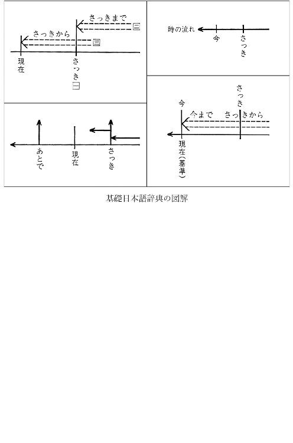

| 学校では教えてくれない！ 国語辞典の遊び方 (角川文庫) | |
| サンキュータツオ | |
| KADOKAWA / 角川学芸出版 (2016) | |
学校では教えてくれない！
国語辞典の遊び方
サンキュータツオ

角川ｅ文庫
本作品の全部または一部を無断で複製、転載、配信、送信したり、ホームページ上に転載したりすることを禁止します。また、本作品の内容を無断で改変、改ざん等を行うことも禁止します。
本作品購入時にご承諾いただいた規約により、有償・無償にかかわらず本作品を第三者に譲渡することはできません。
本作品を示すサムネイルなどのイメージ画像は、再ダウンロード時に予告なく変更される場合があります。
本作品の内容は、底本発行時の取材・執筆内容に基づきます。
本作品は縦書きでレイアウトされています。
また、ご覧になるリーディングシステムにより、表示の差が認められることがあります。
はじめに
サンキュータツオの本をお買い上げくださった勇気あるみなさん、ありがとうございます。この本では、大学のゼミで辞書の個性に目覚めて以来、数々の国語辞典を読み比べてきた私が、辞書オタク力を全面的に発揮。学校では教えてくれない国語辞典の選び方、そして遊び方を徹底的に、熱く、楽しく紹介していきます。最後まで、じっくりおつきあいいただければと思います。
さっそくですが、国語辞典について、こんなふうに思っている人はいませんか？
・どれも似たり寄ったりだ。
・中学校入学のときに買った一冊を一生使えばいい。
・ことばの正しい意味が載っているだけでしょ。
・授業で必要だから買ったけど......。
・読めない字があって、よほど困ったときにだけひくもの。
・ひいても、自分の疑問や迷いを解決してくれない。
・解説の羅列だけでおもしろくない。つまらない。
残念ながら、これらはすべてまちがいです。
私たちは何かを選ぶとき、自分の目と耳を信じて選びます。でも、迷ったり、よくわからないときは、情報誌を読んだり、専門家やよく知っている人の意見を参考にしたりしますよね。
洋服を買うのであれば、ファッション誌を読んだり、ネットで調べたり、詳しい友だちに聞いたり......。さまざまな情報を集めてみると、自分の好きな服と自分に似合う服はちがうことがわかることもあるでしょう。そして、自分にとって特別な一着を手に入れ、大切に着る。
では、国語辞典を選ぶときはどうでしょうか？ 国語辞典となると、情報誌や詳しい友だちというのがなかなか見つけにくいのではありませんか。
でも、あなたは国語辞典を生涯で何度か買うはずです。そこで、中・高生はもちろん、ちがいのわかる、「選んで」「遊ぶ」ことができる大人ならなおさら、国語辞典について少し知っておくといいんです！（独断）。
この本はどのページを開いても、「国語辞典、超おもしろい！」と、思っていただけるようなつくりにしました。読み終えるころには、みなさんも辞書を楽しめるようになるはずです。
ファッション誌を読んで、この服が欲しい！ と思うように、この本を読んで「この国語辞典欲しい！」と思っていただけたら、こんなに幸せなことはありません。
なお、すこしでも親しみやすい本にしようということで、話し言葉らしい表現を採用しています。気になる方もいらっしゃるかもしれませんが、ご容赦くださいね★
１ 国語辞典は、みんなちがう！
突然ですが、あなたは「うつくしい（美しい）」ということばをどのように説明しますか？
「きれい」と言い換える？ でも、もし「きれい」で代用できてしまうなら、なぜ「うつくしい」と「きれい」という二つのことばがあるのでしょうか？ 部屋を片付けることを「きれいにする」とはいいますが「うつくしくする」とはいいませんよね。ちょっと似ているこの二つのことば。じゃあ、「うつくしい」って何だ？ こんな時は辞書の出番です！
実際の辞書にはどう書いてあるのでしょうか？
つぎに、さまざまな国語辞典の「うつくしい」を抜き出しました。
『岩波国語辞典』（岩波書店）は、「目・耳・心に、うっとりさせる感じで訴えて来る」とあります。「何が訴えて来るの？」
『新明解国語辞典』（三省堂）は、「いつまでも見て（聞いて）いたいと思うほど」なんて時間の感覚が導入されている。
『明鏡国語辞典』（大修館書店）の表現欄では、「『きれい』と類義だが、『美しい』は文章語的で重く、『きれい』は日常語的で軽い」と書いてある。書きことばか、話しことばか、というのとはまた別に、「重い」「軽い」ということばの質量の情報まで！ たしかに、キラキラ光るものを女の子が見たとき、「わー、きれい！」とはいうかもしれませんが、「わー、美しい！」とは言わない！ それが「軽さ」です。
『角川必携国語辞典』（角川学芸出版）は、「『うつくしい』は、心にしみ入ってくるような美をいう。『きれい』は、表面的な美をいう」とビシッとちがいを明確にしています。どことなく文芸の香り漂う詩的な説明ですね！
もう一度、まちがい探しだと思ってそれぞれをよーく見てみてください。類義語をいっぱい出してある辞書、用例の出典まで示している辞書、古語から現代語になるまでの変遷に触れている辞書、実にさまざまです。
いま、ひとつのことばについての説明だけを比べてみましたが、それでもこんなにちがいがあります。辞書は、ことばの意味を説明するだけの本ではありません。ことばに関するたくさんの情報が盛り込まれているので、ちがいの出るポイントはいろいろあるんです。辞書なんてどれも一緒、と思っている方、そう言っていられるのも、いまのうちですよ！
国語辞典は〈かばん〉のようなもの
辞書をちょっと読み比べた方には、同意していただけると思うのですが、私は、国語辞典を〈かばん〉のようなものだと思っています。
たとえば、近所のコンビニまで行くときに持っていくかばんと、旅行に行くときのかばん、仕事に持っていくときのかばん、あるいはデート用。それを、全部ひとつのかばんで済ませる人もいますが、ＴＰＯにあわせて、そのつど持っていくかばんを変える人もいます。
実は、国語辞典も〈何とか用〉っていう、用途にあわせた編集方針が組まれているんです。
しかも、おなじ旅行に行くとき用のかばんでも、「とにかく物がいっぱい入るかばん」と、「軽量化を志したかばん」では、デザインも重さもまったくちがいます。それと一緒で、おなじ小型の国語辞典でも、たとえば「昔のことばも載っている、古典も読める国語辞典」という編集方針のものもあれば、近年の雑誌などを読みやすくするような、「新しいことばに対応した国語辞典」というものもあり、一冊ごとに、用途がまるでちがうんです。
そしてそれは、みなさんが想像するよりもはるかに大きなちがいになって表れています。
編集方針は、かたく言ってしまえば、「哲学」ということになるのですが、どの国語辞典にも、冒頭部分に「はじめに」とか、「編集方針」という、序文みたいなものが載っていて、そこでは「この辞書はこういう意図で編んでみました！」という、宣言がなされているのです。この序文を読み比べるだけでも、実は、かなり楽しめます。
読者のみなさんは、「辞典なんて、人のあたたかみを感じない単なる説明的記述が載っているだけだ」と思っていませんか？ もうおわかりだと思いますが、どんな辞書にも、執筆者や編者がいて、その人たちの「想い」というものが存在しています。そして、執筆者たちは、その個々の感情を押し殺してあくまで冷静に記述しようと心がけている。だから、記述の端々にぬくもりや個性が、のぞいてしまう......。そういう、愛すべき書籍なのです。
国語辞典は大ベストセラー
私たちは、人生で少なくとも一度は辞書を買います。そうです！ 国語辞典は人生の節目に必ず買われる、一大ベストセラーなのです。いままでに累計一億部も売れているというんですから、驚きです！
新たに国語辞典を買うとき、それまで使っていたものとおなじ国語辞典の新しい版のものを買い続けるのか、それともちがう出版社の国語辞典を買うのか......。
私としては、みなさんが用途にあわせた〈かばん〉を買うように、国語辞典も用途にあわせて買ってほしいと思うのです。たとえば、男友だちと遊びにいくとき用と、女友だちと遊びにいくとき用では持っていくかばんがちがうように、あるいは、おなじビジネス用でも、ノートパソコンを入れる位置はどこなのか、かばんのなかの上側なのか下側なのか、縦に置くのか、横にするのか......。辞書選び、辞書遊びのおもしろさは、用途や目的にあわせて、国語辞典ごとに異なるさまざまな個性や特長を知ることからはじまります。
それは、もしかしたら車選びとも似ているかもしれません。その車が〈エコを目指した車〉なのか、〈軽量化を目指した車〉なのか。そして、その車の特長は〈頑丈さ〉なのか、それとも荷物がいっぱい積める〈容量〉なのか。「車」というカテゴリーは同じでも、日産のエルグランドとベンツのＣクラスでは、まったくちがいます。
車好きな人であれば、メーカーや車種によるちがいを事細かに知っていますが、車に興味がない人にとっては、どれも大したちがいはないように見える。皆さんは、いま、国語辞典に関しては後者だと思うんです。
岩波の国語辞典と三省堂の国語辞典が、日産とベンツくらいちがうものだということを理解していただければ、それぞれを読み比べるおもしろさにも気付いていただけるのではないかと思っています。しかも、出版社によって数冊国語辞典が出ている場合もある。これは国語辞典のちがいや特長を知っておかないと、大きな楽しみを逃がすだけでなく、あなた自身が損をします！
辞書の読み比べは、ガンダムのモビルスーツの性能を比べたいのとおなじ？
そもそも、国語辞典は、学生のときに買ったものをそのままずっと使っているという人が、ほとんどなのではないでしょうか。
私は日本語学が専門で、大学のゼミの指導教授が『集英社国語辞典』（集英社）をつくられた、中村明先生でした。大学院修士一年のゼミは、一年をかけて国語辞典をみんなで研究するという演習だったのですが、そこで、はじめて辞書の読み比べをしました。こんなテーマで一年もつのか、最初は疑問でしたが、やりはじめたら一年ではとても足りないほど、辞書は語るべきことが多いものであることを知りました。どんなことをするかというと──たとえば、各辞書の項目を品詞分類し、形容動詞がどう扱われているかを比較するといった感じです。そのときはじめて、辞書は出版社（編者）によってまったく編集方針がちがうんだ！ ということに気付いたわけです。
新聞であれば、朝日と産経ではおなじテーマの記事でも捉え方や書き方が全然ちがうということにお気づきの方も多いと思います。実は、国語辞典にはもっと明確なちがいがたくさんあるんです。私はそれに気付いてから、この辞書はどうなんだろう、この出版社はどうなんだろうと、いろいろな国語辞典を集めて、読み比べるようになりました。
言ってみれば「ガンダムに出てくるモビルスーツを、全部手に入れたい！ その性能を比較したい！」みたいに思うのと一緒。私の場合は、それがモビルスーツではなく、「国語辞典を全部集めたい！ 読んで比較してみたい！」だったんです。
辞書やことばに「なにが正しい」という答えはない
辞書は人が書いたものなので、どれがもっとも正しい、ということはありません。
もっというと、ことばにはこれが正しいという明確な答えはない。正しいことば、正しい国語、正しい日本語というものは存在しないのです。意外に思われるかも知れませんね。でも、これは日本語学者、国語学者が共有しているスタンスです。メディアで叫ばれている「まちがった日本語」というのは、現象を切り取ったコピーみたいなもので、ことばに興味を持ってもらうためにはよいと思いますが、研究者はそういった「一見まちがったもの」を「揺れ」と言って、新しい表現、時代と時代の過渡期にあるような表現としてむしろおもしろがっています。
ことばは常に生きていて、時代にあわせて姿を変えていきます。〈ら抜きことば〉だとか、あるいはよく話題になる「こちらでよろしかったでしょうか？」では、なぜ〈よろしかった〉と過去形になるのか？ だとか、年輩の方々が眉をひそめるような表現も、私たちがおじいさんになるころには誰もが当たり前に使うことばになるかもしれません。
最近だと、東京出身の女性が一人称で「うち」って言ったりする。これも、三十代以上の人は眉をひそめるかもしれない。でも、それがスタンダードになったら、正しいと言われてしまうんです。
ことばに携わる人たちはむしろ、そういう生き物としてのことばの変化の瞬間に立ち会えることに興奮します。むろん、「少し前はこうだった」という臨時的な規範があるからこそ興奮できるわけですから、規範をナシにしてしまおうとは思いません。その時代の規範はきちんとあったほうがいいのでしょう。
たとえば、「ぜんぜん（全然）」の場合。
『新明解国語辞典』
〔否定表現と呼応して〕あらゆる点から見て、その否定的な状態が認められる意を表わす。「─変わらない／─なっていない（中略）」〔古くからあった否定表現を伴わず、「非常に」の意を表わす用法も最近は多くなった。例、「─おもしろい」〕
『明鏡国語辞典』
①《下に否定的な表現を伴って》全面的な否定を表す。ちっとも。まるで。まったく。（中略）▽もと肯定表現で、まったく、まるっきりの意でも使った。「三人が─翻訳権を与次郎に委任する事にした〈漱石〉」 ②〔俗〕程度の差が明らかであるさま。断然。「こっちの方が─大きい」「私よりも─若く見える」 ③〔俗〕（否定的な状況や懸念をくつがえす気持ちで）まったく問題なく。「─平気だよ」
一昔前までは、けしからん！ といわれていた「全然おいしい！」のような、「～ない」がうしろに来ない「全然」。しかし、最近ではどの辞書も、それもアリだよね、と書きはじめています。『明鏡』にいたっては、そもそもあったんだよそういう表現も！ と漱石の例を挙げています。使われている用例から、すでに「全然」の意味が細分化し始めていることもわかるんです！
こんなことばの過渡期に立ち会えている幸せ！
それはまるで、ことばの成長の姿を見守っているようではありませんか！
「嬉しいです」は一〇〇年前ならまちがいです!?
おいしいものを食べたときに「おいしいです」、嬉しいときに「嬉しいです」というのは、現代では当たり前のように思いますよね。でも、いま、百歳ぐらいの人たちが生まれたころは〈形容詞＋です〉はけしからん、と、みなが顔をしかめる表現だったんです。
そういうときは、ウ音便といって「おいしゅうございます」や、「うれしゅうございます」を使えと言われていました。でも現代では「おいしいです」「嬉しいです」といっても違和感がないですよね。
つまり、〈ら抜きことば〉にしても、多くの人が支持したり、みんなが使っていれば、それが正しいものになっていくんです。時代によって正しいとされるものがちがう、ということですね。
そういうわけで、絶対的に正しいことばというものはありません。ことばは生きているので、誰がどういう信念で記述しているのかによっても変わるし、その時代の流行、考え方なども反映されます。私が、辞書を初版からチェックして、改訂された版ごとに楽しむというのも、そういうことなんです。
たとえば、ご存知『新明解』の「恋愛」の変遷です。語釈（語の意味）だけ抜粋しましょう。
れんあい【恋愛】
（初版）
一組の男女が相互に相手にひかれ、ほかの異性をさしおいて最高の存在としてとらえ、毎日会わないではいられなくなること。
初版の段階でもはや中毒症状的な側面に焦点をあてる画期的な語釈！ 「ほかの異性をさしおいて」って、たしかにそうなんだけど、なんか「ほかの異性」の存在が雑！
（第三版）
特定の異性に特別の愛情をいだいて、二人だけで一緒に居たい、出来るなら合体したいという気持を持ちながら、それが、常にはかなえられないで、ひどく心を苦しめる（まれにかなえられて歓喜する）状態。
「合体」キター！ 『釣りバカ日誌』と『創聖のアクエリオン』でしか「合体」ということばを使わないと思っていましたが、まさか『新明解』が源流だったとは！ そして「ほかの異性」がどこにいったのか非常に気になります。「特定の異性」ということばに集約されてしまった？
（第五版）
特定の異性に特別の愛情をいだき、高揚した気分で、二人だけで一緒にいたい、精神的な一体感を分かち合いたい、出来るなら肉体的な一体感も得たいと願いながら、常にはかなえられないで、やるせない思いに駆られたり、まれにかなえられて歓喜したりする状態に身を置くこと。
「まれに」って！ 「モテない」がデフォルトかよ！
どうでしょうか、この非モテ感。ただ、肉欲が最初にあるのではなく、あくまで精神的な一体感から肉体的な一体感へとつながるものなのだという「恋愛観」がうかがえて、なかなか感動的です。
（第六版）
特定の異性に対して他の全てを犠牲にしても悔い無いと思い込むような愛情をいだき、常に相手のことを思っては、二人だけでいたい、二人だけの世界を分かち合いたいと願い、それがかなえられたと言っては喜び、ちょっとでも疑念が生じれば不安になるといった状態に身を置くこと。
ちょっと！ 最後嫉妬の要素まで入れてきてます！
なんだか『新明解』という男の子が、版を重ねるたびに「ああ、なんか経験したんだな......つらかったね」と声をかけてあげたくなるくらい、成長しているのがおわかりでしょうか！
残念ながら最新の第七版ではこの項目に関しては修正がなかったのですが、むしろ「悲しい想いはしなかったんだね......」と安心する気持ちがわいてきました。
『新明解』の語釈は癖があると言われていますが、（君は、和歌や小説で「恋愛」がどのような文脈で使われているか、ニュアンスまで汲み取ろうと必死なんだよね）、と「私だけがわかってる！」と思い込ませてくれる一冊なのです。
これが、おなじ辞書を初版からチェックしていくことの喜びです。
編者によって辞書はちがう！ 読み比べのおもしろさ
さて、前にもお話ししましたが、ベンツと日産だったら、見た目やスペック表を見れば車を知らない人でも、なんとなくのちがいはわかりますよね。でも、国語辞典の用途なんて、どこでどう見分けたらいいのでしょうか。
まず一番わかりやすいところでいうと、外見は、やはり大事です。車を選ぶときも、車の形や色、顔といったところにこだわりますよね。実は、それは辞書もおなじです。
たとえば三省堂の国語辞典で、一番小さいものなどは、持ったときの手触りやデザインが、すごく手になじむ。その小ささがいいんです。色もオレンジでかわいい！ 『新明解』は赤色というのがトレードマークです。フェラーリといったら赤、というように、私にとっては『新明解』といったら赤です！ また、岩波書店の『岩波国語辞典』の場合は、一番新しいものだと、カバーが、ベロア素材のような、スウェードのような手触りで高級感がある。いままで素っ気ない色だったのに！ 今回は紫！ そういう点では、ちょっと外車っぽい感じがします。高級感のある雰囲気にしようとか、どれだけ軟らかい素材にするかとか、こだわりを感じますね！ ちなみに私は、辞書を手にとって、パラパラとページをものすごいスピードでめくります。なるべく顔面を近づけて、紙の質感、匂い、音をテイスティングするのです！ 「う～ん、今回の岩波はブルボン感（ブルボンのお菓子のようなプチ高級感）もあって、音もいいよね～」と、自室でひとり悦に入るのです！ やっぱ辞書も見た目大事でしょ！ 見やすさとか。イラストとか。とっつきやすいですもん。
また、紙質や、版面のデザインなども、目で見て自分の好みで選べるという点では、車選びとおなじですね。それに、たとえば、車マニアになると、排気量が二〇〇〇㏄なのか、二五〇〇㏄なのかとか、エンジンがどうかとか、そういうスペックへのこだわりが出てくると思うのですが、それは辞書でいうなら、「序文」の「編集方針」と「凡例」に表れています。序文と凡例を読んでいただければ、「この辞書はこういうスペック」だとはっきり載っているので、そういうところから、自分にあった辞書を選ぶヒントにしていただくのもアリかと思います。
凡例で好きなのは、『三省堂国語辞典』の「10 同音語の利用のしかた」。
10 同音語の利用のしかた
意味の上でまぎらわしい同音語、意味によって漢字を書き分けることばは、一か所にまとめました。そして、見出しの上に矢印〔 〕をつけました。
《例》はじめ［初め］ こがた［小形］
はじめ［始め］ こがた［小型］
（中略）
意味による漢字の書き分け〔いわゆる異字同訓〕は、国語審議会が昭和四十七年に作成した資料にもとづき、一語ごとに厳密かつ忠実に検討した結果をまとめたものです。異字同訓の詳細は、この辞書ではじめて明らかになったと考えます。
このプライドたまらんわ!!
「夢中」にも、いろいろな表現のことばがある
序文や凡例には、用途についても書かれています。たとえば〈読むとき用の辞書〉と、〈書くとき用の辞書〉では中身がまったくちがうんです。
むかしの福武書店、これは、いまベネッセコーポレーションになり『ベネッセ表現読解国語辞典』として出ていますが、「辞典の発想革命」というキャッチコピーを裏切らない工夫があります。そこには〈表現チャート〉というのが載っていて、文章を書くときに、いったいどういう表現があるのかという用例をチャートにしたものです。
「夢中」をひいたとき、この辞書では、チャートによって、いろいろな状況に応じた表現がひと目でわかるようになっています。実践的な例がたくさん載っている。これが「書く用」ということです。一方、『新明解』は、「**」のマークをつけて重要語としてはいますが、さほどスペースをとっていません。あくまで「読む用」、つまり本を読むときにわからないことばをひくための辞書として、ことばのニュアンスを説明するにとどまっています。
こんなにちがうの!?
そう！ だから私は辞書に「心酔する」というよりは、辞書に「のめり込む」のです。
夢中の表現チャートに、「無我夢中」が入っているのは、大目にみてほしい！
誰でも文章が書ける表現熱の高い時代だから
ところで、書くとき用の辞書は、誰がどういうときに使うのでしょうか。読むとき用の辞書というのはわかりやすい。わからない単語が出てきたら、ひけばいいのですから。では、書くときとはどんなときでしょう？
むかしは、表現することはある種の特権階級の人や、書くことが許された人のためのものでしたが、いまはみんな「本を読まなくても小説は書きたい」という時代。書きたい人、表現したい人はいっぱいいます。誰でもブログを書いてツイートもします。そういう、表現熱の高い時代ですから、ブログを書くときにも、かっこいい表現や、みんなが使い古していないことばを探したいという人もいると思います。
学生さんであれば、作文やレポートを書く機会はたくさんあります。企画書や報告書をまとめるなど、社会人になっても文章を書く機会は意外と多いのではないでしょうか。
似たような表現を避けたり、ちょっと気の利いた表現を調べたりしたいとき、いままでだったら、〈額が曇る〉と〈気をもむ〉は、まったく別の項目をひかなきゃいけなかったけれど、いまは「心配する」という項目をベネッセの辞書でひけば出てくる。これは表現をする人の立場になって考えて編集された国語辞典ということ。おもしろい特長だと思います。
実際、いまこれだけ国語辞典の種類があるということは、辞書をつくっている出版社がこれだけある、ということでもあるわけなんですね。近年、多様性ということばがよく使われるようになりました。国語辞典にこれだけ種類があるということは、必ずあなたにぴったりの国語辞典が、一冊は絶対あるはずです。
〈自分にあった国語辞典を選ぶ旅〉を、みなさんにも味わってほしいです！
読み方がわからなくてもひける辞書、アクセントもわかる辞書
では、読むとき用のことを考えてみましょう。文章を読むときに、たとえば読み方がよくわからない漢字があるとします。例でいうと、吉行淳之介さんの芥川賞の受賞作品『驟雨』なんかは、何と読むのだろうと思う人も多いと思います。こういう場合、『学研現代新国語辞典』の〈雨〉というところをひくと、「類語と表現」という欄が出てきます。雨に関わることばが全部載っているので、ここを見ることで〈驟雨〉は「しゅうう」、〈時雨〉は「しぐれ」......というように、「あ、こう読むんだ」というのがわかり、それからはじめて、その項目のページで意味を調べることができるんです。
基本的に国語辞典というのは、「知らないことば」をひくということが多いでしょう。でも、「知らないことば」には、「意味を知らない」と「読み方を知らない」の二種類がありますよね。読めないものをどう読むか、先ほどの「驟雨」の場合であれば、まずは雨に関することばだなという見当をつけます。そこを入り口にして、雨のことばからお目当ての単語を見つけ出し、そこから具体的なことばのページにいくという考え方なんです。こういう辞書は、読む人（読めない人）のことを考えた辞書というわけです。
また、『新明解国語辞典』の場合は、ほかの国語辞典と比べて、いち早くアクセント記号もつけました。これはアクセント辞典ではないにもかかわらず、このことばの何番目に一番強いアクセントをおくのか、ということが記されています。
たとえば、「重商主義」というのは一番高いアクセントが五番目にくるので、「じゅうしょうしゅぎ」の「しゅ」のところを強めて言ってください、というのが一発でわかるんです。さらに、用例が豊富に載っているということは、そのことばを使うときのことも考えている辞書だといえます。
あなたの辞書に「巨乳」「貧乳」は載ってる？
いままでは、用例をたくさん載せていれば、〈書くとき用〉と、言われていました。それが『新明解国語辞典』、あるいは三省堂系の国語辞典の大きな特徴だったんです。ベネッセの場合は、そこにさらにもう一歩踏み込んだ感じですね。
北原保雄先生が手がけた大修館書店の『明鏡国語辞典』は業界では有名なのですが、普通の人たちが使っていることばや、雑誌を読んでいると出てくるような、スラングに近いことばも載っています。
一番有名なものとしては、「巨乳」とか「貧乳」ということばが載っているのですが、ほかの国語辞典では当然使っていないし、載せていない。でも、若者ことばや現代語というのは、たとえば五〇年後に雑誌を読んでいて、「この〈巨乳〉っていうのはなんだ？」ということになるかもしれない。そういうとき、この『明鏡国語辞典』をひけばわかるんです。
現時点でも、すでにみんなが使っているけど、よく意味がわからないことばというのはありますね。「デトックス」とか「メタボ」とか。いまさら聞けないことばたち。では、どういう基準でことばは辞書に入るのでしょうか。
国語辞典の場合は、岩波書店だったらいまから一〇〇年前後の日本語を見据えた収集基準になっていて、一〇〇年前の書籍まで読めるようなことばを入れておくという方針です。三省堂の場合は、ある一定期間のみ使われていたことばも入っています。たとえば、我々にとってもはや死語になっている「ナウい」。若い人が、八〇年代ごろの本や雑誌を読んでいて、「ナウい」が出てきたときに、「えっ？ 何？」と思って『新明解国語辞典』（見出しは「ナウ」）をひくと、載っているというわけなのです（「ナウい」はその後、ほかの辞書も載せるようになりました）。
一定期間流行っただけの「死語」を載せるわけ
たとえば〈モボ〉とか〈モガ〉なんかは、いまの高校生が聞いてもわからないかもしれません。そういうときに国語辞典に載っていると便利ですね。
なので、新語にどれぐらい対応するのか、あるいは古典語をどのくらい入れるのか、その基準を明治初期という区切りにするのか。それとも、有名な文学作品に載っていることばは入れる、というやり方にするのか。あるいは書く人のことを考えるのか、読む人のことを考えるのか、さらには、より小さくするのか、語数を豊富にするのか......。こういうところにも編集方針は影響するわけです。
しかし、語数を豊富にしてしまうと、語釈は短くなってしまうので説明は不足していく。「何万語収録！」と、語数の多さを標榜している国語辞典はよくありますが、逆に考えれば語数が少ないということは、それだけ語釈やそのほかの要素が丁寧だという証なのです。
『新明解国語辞典』で七万七五〇〇語、『新潮現代国語辞典』（新潮社）が七万九〇〇〇語、『新選国語辞典』（小学館）が九万三二〇語、『三省堂国語辞典』で八万語（それぞれの最新版）。どの小型辞典でも載っているのは、だいたい七万語から八万語ぐらいです。
七万語ぐらいのものだと語釈が非常に丁寧な傾向があります。『新明解国語辞典』はさらに、アクセントを入れたり、用例を豊富に入れたりしているので、語数が少ないのもいたしかたない。それでも七万七五〇〇語を入れたのはすごいことだと思います。
これまで挙げた、それぞれの国語辞典のよいところを全部ひとつにすればいいじゃん、と思う人もいるかもしれません。しかし、それは不可能です。アイデアに権利がかかっているとかそういう理由ではありません。予算と紙面が有限だからです。どれを強みにするか、いくつかのなかから選択するしかないのです。
となると、やはり、「かばんに何を入れるのか」、つまり、どういう哲学のもとにどう解説をするのか、ということが各国語辞典出版社ごとにちがってくるんです。おなじ出版社でも編者ごとにその哲学がちがうので、それをみんなにわかっていただきたいと思います。
老舗辞書と後発の辞書
国語辞典には大型、中型、小型というのがあります。単純な収録語数でいうと、大型が五〇万語、中型が二〇万語、小型が八万語くらいです。
みなさんがよく知っている『広辞苑』は、中型辞典にカテゴライズされています（現在、二四万語収録）。大型はというと、『日本国語大辞典』（＝通称日国）が最高権威で、最高品質と言われています。五〇万語収録、一〇〇万用例、歴史的な変遷の記述も詳細に掲載されていて、一三冊と別巻（第二版）にもなります。なので、日国は別格ですが、小型辞典は、大型や中型と比べて持ち運べるというのが大きな特長です。より小型で持ちやすい、軽いという方向に特化してきています。
それからもうひとつ、小型国語辞典の大きな特長は、入れる項目を少なくして、本自体を小さくしているので改訂のスパンが短いんです。だいたい、遅くても一〇年に一回は改訂が入る。改訂が早いということは、時代に応じて、収録語数から語釈の方法、文法体系の見直しまで、すぐに対応できるということを意味しています。つまり、それだけことばの姿を「鏡」に映したように反映しやすいということですね。版数を重ねると、当然洗練されるわけで、見出し項目から消えることばもあれば、新たに加わることばもあります。
辞書の新旧は第何版というところを見ていただければわかります。
『明鏡国語辞典』（二〇〇二年～）や、『新潮現代国語辞典』（一九八五年～）、あるいは集英社の『集英社国語辞典』（一九九三年～）が第二版（集英社は二〇一二年末に第３版がでました）、つまりここ一五年～三〇年ぐらいにできた新しめの国語辞典です。
一方、老舗でいうと『旺文社国語辞典』は第十一版で、小学館の『新選国語辞典』が第九版、『新明解国語辞典』が第七版、『三省堂国語辞典』が第七版。『岩波国語辞典』も同様で、第七版の老舗です。辞典誕生当初からの編集方針を貫いているものもあれば、時代とともにすこしずつ編集方針をかえる辞書もあります。戦後は、これらの辞書がスタンダードだったのですが、後発の辞書は新しく参入するだけあって、それだけいままでの辞書にない特徴を出す必要があります。『集英社国語辞典』は小型国語辞典なのに中型辞典のような百科事典的要素を打ち出し、『明鏡国語辞典』は新語を積極的に入れ文法項目を充実させる姿勢を明確にし、『新潮現代国語辞典』は実例を豊富に取り入れて独自色を出しました。それだけ「いままでにない個性」があります。
ひとつ、個性をみるのに有名な例を挙げると、「右」は岩波では「相対的な位置の一つ。東を向いた時、南の方、また、この辞典を開いて読む時、偶数ページのある側を言う」と説明されています。偶数ページって、あなたの都合!? これが『新明解』だと、「アナログ時計の文字盤に向かった時に、一時から五時までの表示のある側」。これには参った！ だいたいこっち「側」というのを表現するのに、一二時から六時じゃなく、一時から五時としたところがニクい！ 負けた！
これだけちがうものなのです。
「右」なんていう見出し項目は、老舗辞書にとっては長年の風雪に耐える語釈で、洗練されて残った感じがしますが、『明鏡』の「右」は、「人体を対称線に沿って二分したとき、心臓のない方」という新手でこの古典見出し群になぐりこみをかけた！ つか怖いわ！ 二分してみたことないよ！ あと「対称線」知ってたら「右」調べないよ！
つまり「うちも出版社だから文化事業として国語辞典つくっておくか」とかいうような甘いものではない、ってことなんです。それでは売れないし、出版社も恥をかくだけ。ひとつひとつに、オンリーな個性がある。それはもう「人」のように。だって、「人」がつくっているんですから！ だから遊べるし、楽しめる本なんです！
いまの辞書に満足できない。だったら俺がつくる！
各国語辞典には、リーダー、編者がいます。編者とは、基本的には、辞書の巻頭の序文を書いている人なんですが、このリーダーは、いままでに出版された現存する国語辞典に不満があるわけです。不満、というと、編者の先生たちが気難しい人ばかりに思われてしまうかもしれませんが、そんなことはありません。彼らはそれぞれ理想の国語辞典像というのを持っているのです。そうでなければ、辞書の編者なんてしません。
いま、いろいろな国語辞典がありますが「俺は、こういう要素がもっとあったほうがいいと思う。でも、ここは不要だと思う。だからこの国語辞典を新たにつくったんだ！」っていうことが、おのおの序文に書いてあるんです。
だから、基本的にはみんな自分の国語辞典に満足しているはずなんです。あ、まあ予算と紙面の限界があるので一〇〇パーセントは満足してないんですけど。
辞書づくりのリーダーは学者です。自分なりの国語観、日本語観というものがあって、それにあった国語辞典がない、だからつくりました、っていうことになっているんです。
つまり、国語辞典とは、大ベストセラーでありながら、研究者の最新の学説が反映されている本でもあるんです。こんなに早く研究の成果や主張がダイレクトに表れる一般向けの本って、辞書以外になかなかないですよ！
辞書に詰まった哲学を知れ
「既存の辞書に満足できないから、俺がつくる！」というスタンスに関しては、『明鏡国語辞典』は特に顕著です。『明鏡国語辞典』のリーダーである北原保雄先生は、『問題な日本語』の著者でも有名な方ですね。
北原先生は、現代語や、誤用と言われている使い方、ら抜きことばなどを容認しています。この方の日本語観は、「ことばは生きているので、いま使われていることばを反映させなければいけない。〈ら抜き〉は歴史の必然。だから、一応、誤用とはされているけれども、掲載する」というようにわりと寛容なスタンスです。だから新しいことばも積極的に入れるし、スラングのようなことばも入れる。「このことばを入れてくれ」という意見をネットで募集もする。辞典に反映されなくても、そういうことばばかりを集めて解説する本（『みんなで国語辞典！』）を別でつくる。これはもう、辞書づくりをみんなで楽しんでいますよね！ 大人の遊びっぽい要素もあって、辞書や日本語の楽しさを味わってもらうには最高の広がりだと思います。辞書というのは、そういう各編者の哲学やイデオロギーが詰まりまくっている本なんですよ。
みなさんはそういう考えを知らずに、なんとなく手元にある国語辞典を使っているかもしれません。だけど、どの国語辞典を選ぶかというのは、実はどのイデオロギーを支持しているかということにもつながる。なので、もう少し辞書選びに意識的になってもいいんじゃないかと思うわけです。これができて初めてかっこいい大人！ 辞書を見ればその人がどういう人なのか、わかる人にはわかるんです！
たとえば、車にしても、車のことは何も知らないけれど環境問題には熱心な人が、まだ軽油を使う車に乗っていたらあなたはどう思うでしょうか？ あるいは、逆に、環境問題に無頓着な人が、ガソリン車に比べて排ガスの排出量が少ないプリウスに乗っていて、家ではエアコンや電気をつけっぱなし、フロンガスも使い放題で喫煙家、とかだったらどうでしょうか。選ぶ車が、環境にいいのか悪いのか、遠出に適切なものなのか都内を走ることに特化しているのか、燃費がいいのか悪いのか──。ほんとうは、自分がどういう車に乗っているのかを知っておいたほうがいいですよね。国語辞典もそれとおなじです。
何も知らずに『新明解国語辞典』一冊だけ買った人は、きっと、そこに書かれている記述こそ正しく、スタンダードなものだと思うでしょう。けれど、ある歴史的な理由があって『新明解』の語釈は個性的です。そして、その個性的な語釈にも、実は、きちんと編者の意図が込められているのだ、ということがわかれば、国語辞典にどんどんはまっていけるのではないかと思います。
どうですか？ さっそく書店で読み比べてみたくなったでしょう？ 読み比べができるのは、いろんな辞書を手にとって中身を確認できる書店だけです。ネットではこれはできないのです。書店の店頭には、場合によっては営業さんの手作りの見本なんかもあって、辞書の個性を知るにはぴったりです！
２ 国語辞典のルーツ
国語辞典が生まれたわけは〈藩〉が〈国〉になったから
江戸時代以前から、ことばの意味を記した本は存在していました。しかし、〈国語辞典〉ということばは、〈国の語〉と書いて国語、つまり、国という概念ができてからのものです。では、「国」というものはいつできたのかというと、明治政府が樹立されてからですから、大政奉還後、明治年間に入ってからです。それまでは「藩」だったので、ことばを統一しようという意識がなかった。しかし、近代国家を目指す明治政府になって、「国」という考え方を入れたがゆえに「国を統べるには、統一した国語、国のことばというものをつくらなければいけない」ということになったんです。
国のことば、それは、いまでいう標準語みたいなものです。ただ、ことばはもともと地域性があるものなので（いまでも方言として残っています）、標準のことばという理念が、当時はあまり共有できていなかったのです。
長州の人も土佐の人も、自分の知っていることばが、国のことばだと思っていたので、どちらが正しいのか、あるいは本来あるべきことばなのかを考えたこともなかったでしょう。むろん、オフィシャルなことば遣いというのは、武士や町人にもありました。しかし、どの職業、地域の人にも共通のものはなかったのです。これはどの言語にもいえることですが、ことばは国が組織的に「つくり上げる」ものなのです。
そこで、まず近代国家樹立の急務として「国語」という考え方を打ち立てた。そしてその国語を記述している辞典をつくるべきだということになった、それが国語辞典の生い立ちです。
このとき、ときの明治政府から命を受けたのが大槻文彦という人物。そして、彼がほぼひとりで完成させた『言海』が近代日本初の「国語」辞典です（＊の注１参照）。もちろん、近代以前にもことばの意味をまとめた辞書はありましたが、「国語」という概念を打ち立てたあとに最初にできた近代国語辞典こそがこの『言海』です。大槻文彦先生は洋学の家に育った人で、この人自身、実は国学者でも何でもなかったんです。おじいさんは蘭学者、お父さんは儒学者という、国際的な感覚をもった家に生まれたんですね。
このようなまったくジャンルのちがう人に、なぜ白羽の矢が立ったのかというと、「国語辞典」というものが、当時、海外にしかないものだったからです！
すべての辞書の親、『言海』の制作期間は一七年
西洋の列強国にあって、当時日本になかったのが「国語辞典」でした。この国の国語辞典をつくるときに、「イギリスなりオランダなり、海外の国語辞典を参考に、この国の辞典をつくってくれ」と言われたのがきっかけになって、国学者ではない大槻文彦がつくることになったのです。国学者ではつくれない、いままでにない辞書をつくれ！ という指令です。
彼は、スタッフもほとんど与えられず、いたとしてもアシスタントがせいぜいひとりかふたり。それも彼自身が、国から命を受けた非常勤公務員みたいなものだったので、お金もそんなに出せないし、つくり方もよくわからないし、という状況でした。
参考にできる辞典も国内にはほとんどなかったので、まず、どのことばを入れるべきかから始まるわけです。そこで彼は、実際に町中を歩いて会話を採取したり、いろいろな本を読んで単語を抜き出したりして、辞書に載せるべきことばの候補を集め、「このことばは入れたほうがいい」とか、「これは入れないほうがいい」とか、そのことばをどうやって並べるかとかを、ひとつひとつ考えていったんです。いまでいうフィールドワークです。
でき上がったものには、入れたほうがいいと思われたことばしか載っていないわけですが、その陰に、結果的には載せなかったけれども検討されたことばたちが大量にあることを考えると、ほんとうに気の遠くなるような作業です。最終的にこれが出版されるまでに、なんと一七年もかかった。苦労の結晶のような辞書なのです。
制作途中では、協力者が死んでしまったり中学校に赴任してしまったり、娘が亡くなってしまったうえに、娘を看病していた奥さんまでも亡くしてしまったり、印刷所が火事にあったり、自費出版にしなきゃいけなくなったり......。
とにかく、いろいろなひどい目にあいながら、ようやく刊行したのがこの『言海』なんです。涙なくしては語れない苦労があったのですね！
私が特に感動したのは「露命」のエピソードです。家族を亡くしてもなお辞書づくりをひとりで続け、露命の項目を、露のようにはかない命と原稿用紙に書きながら涙を落とした、といいます。「ろ」まできていたのに、完成を応援してくれていた家族に見せられなかったなんて......！ 誰か抱きしめてあげて！
さて、この『言海』は全ての国語辞典の親亀と言われている国語辞典です。この国語辞典がなければ、現代の国語辞典が、これだけ多彩なものになったかどうかわからない。それぐらいこの『言海』というのは、すべての辞書の親、源流となっているのです。『言海』に興味のある方は、ぜひ高田宏さんの『言葉の海へ』という本を読んでください。大槻文彦が大河ドラマの主人公にふさわしいほど魅力にあふれた人物であることをおわかりいただけると思います！
そういうわけで、この後の辞書の編者はみんな、この『言海』に載っているか、載っていないかをまず指針にするわけです。
「載ってないんだったら、じゃあ載せていこう」とか、「『言海』だったらこういう記述をしてるから、これにこういう文章を加えて新しい説明にしよう」とか、ほぼ全てこの『言海』がもとになっている。『言海』で特徴的なのは、「言海序」という序文のあとに、「本書編纂ノ大意」が載っているということと、あとがき「ことばのうみのおくがき」が載っているということですね。
「本書編纂ノ大意」とは、いまでいう序文で、辞書の哲学と編集方針が語られています。「ことばのうみのおくがき」にはこの辞書をなんでつくることになったのかという理由、そして途中どういうできごとがあったのかという経緯が、大槻文彦自身が書いた文章で載っています。名文と名高い歴史的な文章です。そこには、途中奥さんが亡くなったことなども含めて全部書いてある。実はこれだけで、すでに超一級の資料なのです。
福沢諭吉が猛反対！ 日本語の新ルール〈あいうえお〉
この『言海』には、〈語法指南〉というページがあって、まず日本語の文法の解説をしてくれています。「これがこの国のことばである」という、最初のルールづくりだったのです。この〈語法指南〉があまりにも素晴らしい出来なので、ここだけ抜き刷りにして教育用に売るということもあったようです。ということで、大槻文彦は、いまみんなが使っている日本語のルールを決めた人でもあるのです。もう、無駄なところが一切ない本！ 捨てるところなし！ まさにことばの海を泳ぐクジラのような辞書です。
『言海』は、最初の近代国語辞典でありながら、その後の辞書のスタンダードな形を決定づけた、完成形が示されている辞書でもあります。とにかく、構成が練りに練られている。
たとえば、意外とみなさん気付いてないと思うのですが、国語辞典って、「あいうえお順」ですよね。
大槻文彦が『言海』をつくったときに、完成したものを福沢諭吉に献本したんですね。すると福沢諭吉は、「なんで、〈いろは順〉じゃないの？ みんな〈いろは〉を使っていて、寄席の下足番ですら〈いろは〉でことばを覚えているのに、あいうえお順なんて、定着するわけがない！ ぷんぷん！」と言ったんだそうです（もちろんもう少し真面目な感じで）。
出版祝賀会も欠席しちゃったとか......。諭吉さん、そりゃないぜ！ （その後、あいうえお順を誉めます）
たしかに福沢諭吉が言ったように、それまでのことばの並べ方は「いろは順」が主流でした。しかし、大槻文彦はそういう批判が出ることも承知で、並びを「あいうえお順」にした人です。
つまり、いまでは当たり前のように使われている、あいうえお順にことばを並べるルールを浸透させたのが大槻文彦、というわけです。これも、やはり彼が国際感覚のある家に育ったことに理由があります。それは、ことばを母音で整理するという発想に見てとれます。
かつて江戸幕府がはじまる前、安土桃山時代に、日本に来たポルトガル人宣教師が『日葡辞書』という辞典をつくっています。宣教師が日本人にキリスト教を教えるために、ことばを覚えなければいけない。そのためにつくる必要があったのが『日葡辞書』だったというわけです。この辞書は、江戸幕府が開府した一六〇三年には本編が出版されました。発音、意味、用法、女性のことばか、方言か、卑語なのか雅語なのかといった情報も盛り込まれ、非常に近代的な辞書でした。
この『日葡辞書』は横書きで、ＡＢＣ順です。西洋の学問をおさめていた家系にいた大槻文彦がこういった発想に触れていた可能性はありますし（英和辞書の編集もしていたほどなので）、ほかの列強国の辞書もみな並びを音で揃えているんです。西洋の言語はみな表音文字だからです。そこで、大槻文彦も、音節、あいうえお＝ＡＩＵＥＯの順で、Ａ行をつくり、その後、Ａ行とＫ行との組み合わせで「かきくけこ」、Ｓ行との組み合わせで「さしすせそ」、というように、音でことばを整理していったんですね。当時としてはものすごく勇気がいったことだったかもしれません。
古くから日本人が使っていた〈いろは〉は、結局のところちょっとパズル的なことば遊びのようなもので「色は匂へど 散りぬるを」という、歌の意味で覚えているだけ、語順になんら統一性はありません。
だから大槻文彦は、「語法指南」で文法などを整理するとき、何よりもまず音でことばを整理することが大事だ、ということに気付いて、あいうえお順にしてくれたのでしょう。意味と音をわけて、ことばはまず音で整理するという発想。非常に近代的です。だから命をうけたのが、国学者じゃなくてよかった、大槻文彦でよかったって、私は思います。結果的にいまはこのほうが覚えやすいですもん！
暇なら国語辞典つくってみて！ という時代
よく考えると任命した政府もチャレンジャーですよね。西村茂樹さんという文部省のお役人（ちなみに「言海序」の執筆者でもあります）が大槻文彦を任命したわけですが、まさに炯眼！ 国学者ではない若者に、辞書一冊の編纂を任せてしまったその英断。すごいことです（＊の注２参照）。
でも、当時は、「国」としての制度や人材が整っていないなか、列強になめられてはいけない、諸外国に負けない「国」をつくり上げようと明治政府は必死だったのです。それに、民間と公務員との乖離がいまほど大きくはなかった時代です。エリート層全体が「一緒に〈国〉づくりをしよう！」みたいな感じだったと思います。
それで、大槻文彦にも、「おまえいま何やってるの？ 暇なら、ちょっと国語辞典つくってよ！」みたいな、そういうノリだったのではないかと思いますね。
そんな時代だったからこそ、国学者ではなく、大槻文彦が選ばれたのでしょうね。
これから新しい国をつくっていくんだ、俺たちの手で！ そんな熱量が『言海』からはにじみ出ています。なんて熱い読み物なことか！
拝啓、大槻文彦先生。
サンキュー！ 幕末から昭和にかけて生き抜いた知の巨人！ よっ、ミスター国語辞典！ いろんな要人とすれちがっているあなたが、大河ドラマの主人公になるまで、私はずっと言い続けます。日本にはこんなにすごい人がいたんだって！
敬具
夏目漱石の代表作にも影響？
余談ですが、司馬太郎の長編歴史小説『坂の上の雲』などでも、意外な人物が意外なところでつながっていて、驚いた人もいたと思います。たとえば、正岡子規と夏目漱石と秋山兄弟をはじめとする軍人たちなどです。夏目漱石のもっとも有名な写真は、腕に黒い喪章をしているんですが、あれは乃木希典が亡くなった日（明治天皇の大喪の礼の日）に撮った写真なのだそうです。漱石は国家というものにも敏感な人で、『こころ』でも乃木将軍のことを書いています。当時の人たちは全部つながっているんですね。
漱石は「国」のことに関心があったし、イギリスに留学して、「国」という考え方を背負って帰った人です。一方で漱石はことばに対しては、結構雑な意識だった、というふうに言われていますが、そんな漱石でも『言海』はきっと読んでいると思います。
『言海』で一番有名なのは、芥川龍之介が『澄江堂雑記』で紹介した〈猫〉という項目です。いまだったら、何科の何動物とかいう解説をするでしょう。でも、『言海』に載っている猫は、
古ク、ネコマ。人家ニ畜フ小キ獣、人ノ知ル所ナリ、温柔ニシテ馴レ易ク、又能ク鼠ヲ捕フレバ畜フ、然レドモ、窃盗ノ性アリ、形、虎ニ似テ、二尺ニ足ラズ、性、睡リヲ好ミ、寒ヲ畏ル、毛色、白、黒、黄、駁等種種ナリ、其睛、朝ハ円ク、次第ニ縮ミテ、正午ハ針ノ如ク、午後復タ次第ニヒロガリテ、晩ハ再ビ玉ノ如シ、陰処ニテハ常ニ円シ。
と、瞳に関してものすごく詳細に書かれています。大槻文彦が、一日中観察していたということがわかりますね。
先日、『吾輩は猫である』を読み直していて思ったのですが、この『言海』での猫の観察ぶりを見るに、夏目漱石も『吾輩は猫である』を書くときに、まず『言海』の〈猫〉の項目をひいているのではないかな、と妄想しました。妄想ですけどね！
当時、明治から大正にかけてのインテリは、みんな『言海』を持っていました。『言海』は大ベストセラーだったのです。つまり、近現代の日本文学を担ってきた作家たちは、みんな『言海』を読んでいる。それぐらい、この国最初の近代国語辞典というものの価値が重いということなんです。
ここから日本全国に、ことばの意味や語法が広がっていったわけです。いま、これだけたくさんの国語辞典がありますが、そういう行間を推測しながら読んでいくだけでも、充分おもしろい本ですよ。ジャズの名曲のカバーのような感じといえばいいでしょうか。
縮刷版が文庫本で販売されているので（ちくま学芸文庫『言海』）、ぜひ一度『言海』の雰囲気だけでも手にとってご覧いただきたいです。改訂された『大言海』、そして当時販売されていた『言海』が家に一冊あれば、モテることうけあいです！ （ホントか？）
〈注１〉「え」の部まで刊行された『官版語彙』（明治四～一七年）は未完、物集高見が編んだ『日本小辞典』（明治一一年）は名詞が収録されていなかった。また、『ことばのその』（明治一八年）『ことばのはやし』（明治二一年）などをもって、日本初とする考えもあるが、近代国家成立後、草案明治一五年完成の辞典と位置づけ、私は『言海』を日本初と考える。
〈注２〉もともと『語彙』が、国学者を集めてみたものの議論ばかりが紛糾してなにも決まらず、数年で「え」までしかいかなかったという経緯があり、『言海』はこの失敗を踏まえて、大槻文彦ひとりに委ねて、統一性のとれた言語観・文法観に基づいた辞書をつくろうという意図があったようだ（詳しくは、倉島長正著『国語辞書一〇〇年 日本語をつかまえようと苦闘した人々の物語』［二〇一〇年刊 おうふう］ を読んでみてね！）。
３ 辞書の中にもブランドがある
辞書の中のベンツ
小学館の『日本国語大辞典』が最高権威と言われていても、結局、岩波書店の『広辞苑』が一番売れていて、一家に一冊みたいなことになっています。これはひとえに岩波書店のブランド力に尽きますね！
だって『広辞苑』だけが売れていて、ほかの辞典がそれほど売れていないんですから、まちがいないでしょう。『広辞苑』の良さをみんながほんとうにわかって選んでいるのだとしたら、ほかの国語辞典も買って、いろいろ読んだ上で「『広辞苑』やっぱすげー！」というふうに戻ってこないとおかしい。『広辞苑』はもちろん素晴らしい辞書です。しかし、その素晴らしさを理解しないと、『広辞苑』だってかわいそうです。
私の勝手なイメージですが、岩波は車でいうならベンツ。本来、日産の車にも乗って、ダイハツの車も乗ったけど、やっぱりベンツがいいっていうならわかりますけど、『広辞苑』を買っている人の場合、まずベンツ、とりあえずベンツっていう感じで、『広辞苑』さえ持っていれば、ほかの国語辞典はいらない、という思い込みを感じるんです。でもホントにそうでしょうか。用途によっては、日産だってダイハツだって最高になり得ることは、誰でもわかるはずです。
まだ出版社が少なかった時代に、インテリ層の人たちが持っていたのは、みんな岩波書店の本なんです。これは国語辞典でなくてもそうでした。私たちのおじいちゃん世代、つまり戦争を経験していた世代の人たちというのは、大学進学率一割ぐらいの時代の人たちでもあって、岩波書店の看板をものすごく大きいと感じていたわけです。そんな時代に国語辞典のなかでも百科事典的な要素を盛り込んだ『広辞苑』が出されて、編者の新村出ブランド、岩波ブランドが生まれたんです。もちろんいい辞書であることには変わりないのですが、それも用途次第でいい場合と、そうでもない場合があります。これ一冊あれば万事ＯＫと思っているのであれば、それは誤解です。辞書には必ず個性があります。それはときには「癖」でもあるんです。
インテリの人がみんな持っていたから、大人になったら『広辞苑』を机の上に置くのがかっこいいみたいな、そういうイメージもあるのかもしれません。「あの人が持っていた、あの本」「お父さんが持っていたあの辞典」ならまちがいなく正しい、ということになるわけです。まあ、それは幻想なのですが。
小説家の筒井康隆さんと、以前テレビ番組の収録でご一緒したとき、「辞書は、岩波以外は買わないって親に言われていた」とおっしゃっていました。実際に、そういう家が多かったんだろうと思うのです。私の祖父もそうでした。角川もかなりの辞書の権威ではありますが、インテリ層はみんな岩波の国語辞典を買っていて、古くなったら、やはりおなじ種類の国語辞典を買い換える。
読み比べれば全然ちがうのになあ、と思うのですが。
第一人者に仕立て上げられた新村出
石山茂利夫さんの書かれた国語辞典関連本『国語辞書事件簿』で明らかになったのですが、『広辞苑』の編者である新村出先生はおよそ一二年ほどの間に、一〇冊ぐらいの国語辞典の編者になっています。しかもそのなかに、八年間で九冊の編者をやっている時期があるんです。そんなことは実質的に不可能です。だって、かつて大槻文彦が一七年かかってつくったものを、この人は一冊に一年もかかっていない。ということは、どういうことか。
既存の辞書をコピペしてつくっているということなのです。もしくは名義貸し。編集方針だけ決めて、意味の記述はほかのみんなでやってくれという、あるいは、どのことばを入れるか、ということだけを決めるなどでしょう。
新村出先生の名前さえ出ていれば辞書の信頼度が上がる。そのぐらい、当時の第一人者だったんです。第一人者に仕立て上げられた人、と言ったほうがいいかもしれない。
でも、そんなにいろいろな国語辞典を、新村先生が出しているにもかかわらず、そのなかでも『広辞苑』が一番売れてるということは、〈新村出ブランド〉ではなくて、やっぱり〈岩波書店ブランド〉なんじゃないか、と、私は思います。
みんなあまり考えずに『広辞苑』に頼りすぎだし、メディアも『広辞苑』を引用しすぎだと思います。でも『広辞苑』がすべて正しいわけではないんです。
『岩国』はツンデレ男子で『広辞苑』はカタブツ兄さん
岩波書店は超保守的なので、「国」さえも信用していない節があるんです。「国がつくった国語のルールなんて、政府が変わればどうせ変わるさ」という考え方をする。そこがおもしろい！
たとえば、常用漢字がいい例です。国語辞典には、漢字の上に小さな×印がついていることがあります。このマークは何だろう、って不思議に思う人もいたかと思いますが、これは、常用漢字表に載っていない文字を表すマークです。
たとえば、〈贅沢〉の贅の字の上には、×マークがついています。これはつまり、「日常生活ではかな書きされる漢字ですよ」というマークなのです。たいていの国語辞典にはこういうマークが入っています。でも『広辞苑』には載っていないんですよ。
「常用漢字表は変わるでしょ。そんな、政府のあいまいな基準に対応しなくても、岩波がいいって言ったものはいいんです」という、ちょっと上から目線な感じなんですね。
カッコいい！ そんなところが魅力なのですが。「燃費が悪くてもベンツはベンツだ」って言っているようなものですね。
とはいえ、第二版からは付録、最新版の第六版では別冊付録という形で当用漢字表・常用漢字表にも対応しています。腰の重い岩波はいつ本文で常用漢字表に対応するのか？ 国語辞典ファンが熱くなる瞬間です。
私は、小型辞典である『岩波国語辞典』を愛用しているのですが、これは、『広辞苑』とおなじ出版社なのにまったくコンセプトがちがっています。編者がちがうのだから当然ですね。ただ、岩波書店は、会社の姿勢として、わりと保守的な立場をとっていると明言しています。『岩波国語辞典』第七版の序文でも、
この辞書が視野に収めるのは過去百年の（一時的流行ではない）言葉の群れである。それゆえごく最近の新語・俗用にはかなり保守的な態度となる。ただし、機械システムを「立ち上げる」など他辞書に先んじて第五版に取り上げ、更に広がった使い方も第六版に加えたといった実績はある。
と、宣言がなされているわけです。これはもう保守！ 時代に媚びません、ていうことなんです。ちょっとツンデレな感じですね。でもこれはこれで潔くてかっこいい！
私は、〈イケメンメガネ委員長〉みたいな感じの、ちょっとツンなところが、かわいいやつだなと思って『岩波国語辞典』を愛しているんです。
これは岩波書店の体質なのでしょう。『広辞苑』はもっとその権化のような、可愛げがなくてしゃれの利かない、おカタいお兄さんみたいな感じなので、国に対してもあんまり協力的じゃない国語辞典なのかなというふうに思います。ですけど、みんなには信用されている。「長男」みたいな感じ。それが『広辞苑』！
みんなが『広辞苑』を引用するわけ
石山さんも著書のなかで書かれていますが、『広辞苑』第一版に収録されている二〇万語中、実は、百科事典に載っていることばが一四万もある。つまり、一般項目は六万語にすぎないのです。
一般項目というのは、いわゆる国語辞典に載っていることばのことで、専門用語ではないことばのことです。日常的に使っていることばだけで六万語もあるんですね。でも実は、国語辞典は、いま、小型の『新明解国語辞典』でも七万語以上、つまり『広辞苑』よりも入っていることば（一般項目）が多いんです。
また、『広辞苑』は中型辞典なので改訂も比較的遅い（それでも小型に引けを取らないくらいかなり早いほう）。それに俗語や現代語はあまり入れないというスタンス（前の改訂で「ナウい」が入ったほど）、ということになると、実は小型辞典のほうが活きたことば、一般項目がたくさん載っているんです。
ただ、正しい国語辞典はない、というなかで、それでも「『限りなく正しい』と言っていいのではないか」みたいな権威になっているのが『広辞苑』ということです。だからみんな『広辞苑』から引用する。もちろん、そういう存在がいてもいいと思います。でも、それだけじゃない！
それに、『広辞苑』は引きにくいでしょう。たとえばどの国語辞典でも、あいうえお順ぐらいは小口側に入っています。ちょっと優しい辞典になると、あ、か、さ、というように、目印も入れてくれています。ベネッセなんかすごい親切ですよ。たとえば、ら行でも、いま、〈れ〉です、〈る〉ですと、いまどこを引いているかを細かく示してくれている。でも、『広辞苑』はそういうのが最低限しかなくて、真っ白。いまどこなの？ という感じで、ひく側のことを考えてない。そこが、とっても偉そうでツンなのですが、かわいいところでもあるのですよね。萌え！ 複雑なマニア心です。
『広辞苑』は国語辞典的百科事典
一般のことばが六万しか入っていないんだったら、一四万語分はいらないのでは？ 『広辞苑』自体、必要ないのでは？ そう思う人もいるでしょう。
フォローすると、私は『広辞苑』を国語辞典だと思っていません。百科事典なんです。そもそも、新村出先生自身が百科事典をつくりたくて編まれたものだったんです。だから、自然科学や哲学、文学など、それぞれの専門家に委託して「このジャンルではこのことばを入れてください」という意見をすくい上げている。いまみたいに、ウィキペディアがなかった時代の百科事典なんです。それでも国語に関しては、六万語を入れているわけです。そういう意味では、百科事典的国語辞典ではなく、国語辞典的百科事典といえるでしょう。
だから、みんなが知らないような専門用語まで載っているという意味で『広辞苑』は断トツに優れているし、珍しいことばの意味を調べたい人にとっては、『広辞苑』は、やはり便利だと思います。読んで楽しい本です。永江朗さんの『広辞苑の中の掘り出し日本語』は、そんな『広辞苑』の魅力をあますところなく紹介してくださっている本です。
逆に、一四万語のほうが生きているということですね。
『広辞苑』は、日本一クレームの電話がかかってくる辞典です。売れている反面、「正しさ」や「正解」を求める人たちと常にたたかっている、実は私たちを守ってくれていたお兄さん的存在です。ありがたいですね。
『日本国語大辞典』が最高権威と言われるワケ
『広辞苑』の厚さや重さもありがたみのひとつというか、辞書の、あるイメージを形づくりました。そういう重厚さが好きな方には全一三プラス一巻という大型辞典の『日本国語大辞典』（小学館）がオススメです。手に取ると、知の深淵に触れたような気持ちになります。
この日国こと『日本国語大辞典』は辞書の最高権威と言われています。その理由のひとつは、語源から記述されているということです。
すべての学問に共通していることですが、研究というのは縦軸（歴史的な研究）と横軸（現在的な研究）の二種類があって、現代語というのは、水平方向の時間、すなわち横軸なんです。だけどそのことばが、〈最初にどこの文献に載っていて、どういう使われ方をして、どういう意味の変遷があって、いまこういう意味に落ち着いている〉ということを、ページ数を気にすることなく、たくさん書いてくれているのが、この『日本国語大辞典』です。
ですから、ほかの辞書はとてもかなわない。しかも現代語も古語も含めて用例をからめて網羅的に入っているので、収録語数は『広辞苑』の比じゃないんです。あれはもう文化事業です。改訂にあたっては、何千人という人たちが何十年もかかって行う。大学院生まで含めて何千人単位ですよ！ これは本来、民間がやるような規模じゃないと思います。だから、ほんとうの権威は『広辞苑』じゃなくて『日国』なのです。
なので、テレビや雑誌で引用するときも、『広辞苑』ではなくて『日本国語大辞典』より、とすべきでしょう。信頼のおける学者が、何年もかかって調べたり吟味した結果として、そういう記述になっているわけだし、編集意図も小型中型の国語辞典ほどばらついていない。というか、すべてを網羅できるような記述の仕方をしているので、漏れがないんです。
この歴史的大書は、松井簡治という先生の情熱によって成ったといっていい辞書です。
毎朝三時に起きて、仕事に行く朝の八時までの五時間で、平均一日三三語を消化する。夏休みと冬休みには、一日八時間をかけて一語一語を記述していく。
こうした作業を、二十年間毎日続けてようやく成ったのが、前身にあたる『大日本国語辞典』、そしてその子、松井驥、さらにその子、松井栄一と、親子三代で成した辞書です。
専門家も数多く関わった辞書です。
気の遠くなるような作業ですが、辞書とはこうして、たしかに人の手によって書かれた書物なのです！
『日本国語大辞典』は、最近では精選版も出していて、それは三巻セットです。『広辞苑』ぐらいの厚さのものが三冊。全一四巻の大型辞典では持ち歩けない、買えない、置く場所もないというので、このような中型辞典ができました。三〇万項目、三〇万用例だそうです。また、全巻をいつでもみたい！ という方には、いまではジャパンナレッジというサイトで一定期間の購入も可能です。アプリでも一語いくらかで売ればいいのに。
中型辞典という発想そのものが、実は『広辞苑』の一番素晴らしかったところかもしれません。机の上に気軽に置いておける一冊という感じだったのでしょう。そこからさらに持ち運べるようにしようということで進化していったのが、小型の国語辞典です。
４ 国語辞典は二冊持つ時代
ＣＤを買うような気持ちで国語辞典を買おう！
辞典なんて、そんなしょっちゅう買うものではない、購入のハードルが高いとよく言われます。でも、小型の国語辞典なら三〇〇〇円くらいですから、音楽ＣＤ一枚とおなじくらいの値段なんです。そう考えると、めちゃくちゃ安いと思いませんか？ 知の結晶が三〇〇〇円ですよ！ だから私はよく、「ＣＤ一枚買うような軽い気持ちで、いろんな国語辞典を買ってほしい」と言っています。ま、みんな鼻で笑って流しますけれども。
それに、ＣＤはどんなに長くても約八〇分しかもたないですが、国語辞典は最低でも一年は読み続けることができる！ いや、ＣＤはＣＤで素晴らしいコンテンツですし比較するのもおかしな話なのですが、それでも三〇〇〇円でおつりがくる価格で、そんなに楽しめる本があるという事実を感じて欲しい！ こんな本、ほかにありますか？
また、国語辞典を買い続けていくと、別の出版社のものとの読み比べがまたおもしろい。そして何版も買い重ねていくと、前の版との読み比べができて、これがまたおもしろい！ ということで、国語辞典は一生楽しめる本なんです！
国語辞典の良さはもうひとつあります。自分がおじいちゃんになったとき、孫と「私のときの『新明解』はね、第七版で笹原宏之先生が入って、結構事件だったよ」「あのころ、〈動物園〉の語釈は、こうだったんだけど」なんていう会話ができるんです。
国語辞典のあるあるトークが、孫とできるなんて！ そんな楽しい本はほかにないですよ。
たとえば夏目漱石の『吾輩は猫である』は、別におじいちゃんが若いころに読んでも、いまの時代に孫が読んでも、書いてあることは一緒なわけです。でも国語辞典はちがうんですよ！ 「お前の版の〈恋愛〉はなんて書いてある？ おじいちゃんのときの国語辞典ではこう書いてあるぞ」っていう話ができるんです。孫が興味を示してくれるかどうかはわかりませんが。
国語辞典は長い時間遊べる書物であることを実感していただきたいのです。
大人なら、国語辞典は二冊持て
「大人なら国語辞典は二冊持て！」これを私は、声を大にして言いたい。これだけ電子化が進んだ時代で、国語辞典のアプリがスマホなどに内蔵されている場合も多いと思うのですが、電子辞書にせよスマホのアプリにせよ、たいていは、辞書一冊分でしかない。でも、大人なら、国語辞典は最低二冊持つべきです。もちろんちがう出版社のものを二冊です。
私が考えるもっともオーソドックスな組み合わせは、スタンダードさが売りの『岩波国語辞典』と個性的な語釈の『新明解国語辞典』です。この二冊は、たとえば、フォーマルなスーツとややラフなジャケットとジーンズ、みたいな感じの組み合わせです。
二冊目用では、先ほど少しご紹介した『ベネッセ表現読解国語辞典』もいいと思います。これは語釈がほんとに味気なくて一行か二行しかない。全然、意味寄りじゃないのが特徴です。でも、ことばの意味は何となくわかるけど、それに似たことばやもっと適した表現が知りたいという人には、関連する表現がたくさん紹介されているのでとてもいいと思います。
そこそこ本を読んでいる人であれば、ことばの意味はだいたい推測できるので、辞書を引いてまで調べたいことって、そんなにはない。だからみんな国語辞典から遠ざかっていく。
でも、大人になると漢字の使いわけはどうだったかとか、もっといい表現はないのか、と思う場面が必ずあるはずです。手紙の書き出しを、もうちょっと気が利いたものにしたいなとか。そういう人は、このような書くとき用に特化した辞書を持つべきです。国語辞典を二冊持つ。こんな安上がりな贅沢はないですよ！
二冊持っていても損じゃない理由
では、二冊持っていても損じゃない理由をさらに詳しくお教えしましょう。
まず、私たちのなかに、国語辞典＝ことばの意味を知るもの、という刷り込みがあまりにもされすぎていると思うのです。つまり、私がいいたいのは国語辞典に書いてあることが一〇〇パーセント正しいと思うな、国語辞典は意味だけが書いてあるものだと思うな、ということです。もちろん、辞書は正しいとみんなが思っているからこそ、参照するのですが。
二冊持つことの必要性として、〈恋愛〉という項目を詳しく比較してみましょう。
『岩波国語辞典』の場合、
れんあい【恋愛】
男女間の、恋いしたう愛情。こい。
これだけです。しかし、先にも挙げましたが『新明解国語辞典』の第七版の場合、
れんあい【恋愛】
特定の異性に対して他の全てを犠牲にしても悔い無いと思い込むような愛情をいだき、常に相手のことを思っては、二人だけでいたい、二人だけの世界を分かち合いたいと願い、それがかなえられたと言っては喜び、ちょっとでも疑念が生じれば不安になるといった状態に身を置くこと。
と書かれています。
ちなみに、『新明解』には用例が載っていて、「熱烈な恋愛の末に結ばれた二人」「恋愛結婚」「恋愛小説」「恋愛至上主義」などが紹介されています。
この二冊の記述の差っていったい何だろう？ っていうことですよね。
こうしてみると、『新明解国語辞典』の語釈には、〈恋愛〉ということばにまつわるニュアンスまで、なるべく多く汲み取ろうという姿勢を感じます。〈他の全てを犠牲にしても〉っていうぐらい激しい気持ちだっていうニュアンスをここに込めているわけです。〈常に相手のことを思っては、二人だけでいたい、二人だけの世界を分かち合いたいと願い〉、ここでちょっとロマンも入っている。〈それがかなえられたと言っては喜び、ちょっとでも疑念が生じれば不安になる〉で、恋愛って必ずしもいいことばかりではなくて、不安もあるし、嫉妬もあるような、複雑な感情だというニュアンスをここに入れている。
また、〈特定の異性〉という表現に対して、『明鏡国語辞典』になると〈まれに同性同士〉という記述が加わります。これは、恋愛の定義に関わるものですね。同性愛を認めている！
でも、『新明解』が〈特定の異性〉と言っているのに対して、『岩波国語辞典』だと〈男女間の〉という記述になっています。きっと〈男女間の〉では、男尊女卑的な表現ではないかとか、男女と女男のどちらが正しいのか、なんていう、早慶戦か慶早戦かみたいなやり取りを経て、「だったら、〈特定の異性に対して〉でよくない？」に達したのが『新明解国語辞典』の姿勢なんですね。
〈ほかの全てを犠牲にしても悔いがないと思い込むような愛情〉、『新明解』はこういっています。一方『岩波国語辞典』のほうでは、〈恋いしたう愛情〉としか言ってない。
これは、〈恋愛〉という項目だけの話ではなく、すべての項目において、それぞれの辞典で詳しく書いてあるものもあれば、一行で済ましているものもある。つまり一冊しか持っていないと、その辞書に書かれていることがすべてという、非常に狭い世界になってしまう危険があります。
〈恋愛〉というのは、わざわざ国語辞典でひくまでもなく、みんなそれぞれに「恋愛ってこういうものだ」という思いがありますよね。だから、自分の恋愛感に一番フィットする語釈を選ぶのか、あるいは、「あ、恋愛ってこういう側面があったんだ、気付かなかった」、と思える語釈をとるのか、それはもうユーザーであるみなさん次第です。
ですが、まず、自分が興味のあることばをいろいろな国語辞典で調べてみて、総合的に「つまり○○ってこういうことなのかな」と、自分でわかることが大切なんだと思います。それが「知る」ということだと思うのです。一冊の国語辞典に書いてある意味の記述だけが正しいとは思って欲しくない。
学校の先生もおなじですよね？ おなじ教科のおなじ単元でも、先生によって教え方が全然ちがう。「先生、恋愛ってなんですか？」と聞かれたときに、「意味はこうだ。でもあとは自分で経験して知れ！」とサッパリした教え方をする岩波先生。「あのな、恋愛ってのはなかなか成就しないもんだぞ？ 嫉妬もするし、ときには苦しい云々かんぬん......」と事細かにぶっちゃけ解説してくれるのが新明解先生。『新明解』はどこか本音を出してくる予備校の先生っぽい感じもあります。せめて知りたいことばくらいは、少なくとも二人の先生の授業を受けてみて、自分で考えてみてはいかがでしょう？ 先生によっては、品詞分類もちがうわけですし。
二冊の組み合わせからことばのニュアンスをかみしめる
「このことばはどういう記述をされていたのか」、「どういう定義をされているのか」というのは、その国語辞典が出版された時代によってまったくちがいます。
小型辞典は特に、数年おきくらいに改訂版が出るので、新版では記述の仕方がまるでちがうことがあるわけです。そういう意味でも、正しい日本語、正しい意味の記述というのは、存在し得ない。だから少なくとも国語辞典は二冊以上読んで、だいたいのニュアンスを自分でかみしめてほしい！
学校の先生方は、付き合いのある出版社の国語辞典を一律に買わせるのではなく、なるべく生徒さんごとでちがう国語辞典を持たせるとか、あるいは二冊持たせるという教育をしてくれるといいんじゃないか、と思っています。
あるいは、クラスの後ろのほうに最低五種類ぐらいの国語辞典を置いておくというのもいいでしょう。国語辞典のひき方だけでも、一単元とってもいいぐらいのことだと思いますので、ご要望があれば私が出向いていくらでもしゃべりますよ！
５ なぜ、こんなに多様化したのか？
『言海』のつぎの国語辞典
国語辞典の源流『言海』については前にご紹介しました。その後、国語辞典はどのように発展していったのでしょうか。
まず『言海』成立直後から、イデオロギー闘争というのがかなりあって、『言海』のつぎに山田美妙という作家が『日本大辞書』という国語辞典をつくっています。それは、アンチ大槻文彦がつくった国語辞典でした。
『言海』は、あいうえお順を採用するなど、いろいろ画期的ではあったのですが、記述は文語体でした。ですが、山田美妙が数年後につくったものは、口語、つまり話しことばに近いものだったのです。現代の私たちが読んでも意味がすぐにわかります。
なぜ、またしても学者ではなく作家だったのかというと、この人は言文一致運動をしていた作家なんですね。『武蔵野』などの作品で有名です。だから記述されていることばとみんなが実際に使っていることばを一致させなければそれは国語とは呼べない、というイデオロギー、哲学を持っていました。それで自分の理念に忠実な国語辞典をつくったわけです。
美妙はこの辞書を二年ほどでつくってしまいました。どんなマジックを使って!? 大槻文彦は一七年もかかったのに！ 普通に考えたら無理ですよね。どうやってつくったかというと、なんと彼は口述速記させるんですよ、「あ行」から。口語なので口述、たしかに理論的には齟齬がないですね。それも基本は『言海』に載っていることばを押さえつつ、『言海』に載っていないような、大衆的なことばも加えている。
しかし、何しろ口述速記ですからゴールを見据えて、計画的にやってるはずはありません。結果、ものすごくバランスが悪い国語辞典ができ上がりました。だって、か行までで、全体のページの半分も使っているんですよ！ しかも、途中から飽きてきたのか、疲れたのかはわかりませんが、か行以降のことばはすごく雑な解釈になっている。
そういう意味では欠陥品だったのですが「国語辞典ってこういう考え方でもよくない？」って提案したのが、山田美妙だったというわけです。人間的な辞書で、とてもぬくもりを感じます。萌え！ やっぱり萌える国語辞典。
国語辞典のイデオロギー闘争とその変遷
山田美妙がつくったあとも、「いままでのじゃダメだ、俺がつくったのこそが真の国語辞典だ！」「国語辞典はこうあるべきだと思う！」という理念のぶつかりあい？ のようなものが続いてはいました。でも、どの出版社でも国語辞典を出すようになると、今度は辞書のコピペ時代というのが長く続きました。その後、三省堂が『三省堂国語辞典』、『新明解国語辞典』を出すと、それをきっかけとして、今度はイノベーション競争が始まったっていうことだと私は理解しています。携帯電話とおなじく、機能と技術革新の競争です。こうして辞書は個性的になっていきます。どのジャンルにも起こることです。
国語辞典は、国語学者の理念そのもの、もう、作品なんです！ 「今回はこういうデザインにして、こういうことばを入れたんだ」「こういう記述にしたんだ」「こういう品詞分類にしたんだ」「なるほどこういう用例を採ったのか」というように、その理念が随所に表れていく。
たとえば『新潮現代国語辞典』だったら、出典の確かな、実際に使われた用例が多く採られています。ほかの辞典は出典まではあまり明記されていませんから、どこから引っ張ってきたのかわからない、もしかしたらつくった用例かもしれない。作例（例文や用例をつくること）だと実際に使われたかどうかわからないので、実例主義を採用します！ と、いうことなのでしょう。このように用例に対する姿勢ひとつとっても各辞書ごとにちがうんです。
用例だけではありません。辞書を構成するすべての要素でこのような姿勢のちがいがあるのです。
小型辞典のほうが大型、中型より優れている部分も多い
大は小を兼ねるといいますが、国語辞典に関してはその限りではありません。私たちがよく使っている日常のことばの、細かな意味のちがいを調べるには、小型の国語辞典のほうが圧倒的に強いからです。
それから、細かいことばの意味のちがいだけでなく、どういう文脈で使うのかということを調べたいときもあります。たとえば、〈廁〉は、〈はばかり〉や〈トイレ〉、〈化粧室〉や〈レストルーム〉〈お手洗い〉など、ニュアンスの異なることばがいくつもありますが、はじめてそのことばを使う人にとっては、「この文書にそのことばを用いて書いていいのかどうか」ということが、わからないですよね。改まり度が強いのか弱いのか、どういう文脈で使えばいいのか。そういうことを調べたいときには、用例が豊富に載っている小型国語辞典のほうが、中型辞典より優秀な場合もあります。
特に表現用とうたっていたり、用例の豊富さを標榜している国語辞典は強い。
もともと国語辞典というのは、似たような機能を持つ周辺的な辞典が多い。百科事典、現代語辞典、古語辞典、漢和辞典、類語辞典、和英辞典、そのほかの外国語の辞典......。それらとどこがちがうのかを、まずきちんと決めていかないと「国語辞典」の立ち位置がはっきりわからない。
だって、漢和辞典だって国語辞典っぽいですよね？ ことばの意味が載ってますから。だから漢字がわからないときにだけ辞書をひくのであれば漢和辞典でいいはずです。だけど国語辞典の場合は、細かいことばのニュアンスまでわかる。ほかの辞典にはない要素に特化していった結果、このような辞典ができたのでしょう。
「虫」とおなじですよね。高く飛ぶ虫だったり、角があったり、殻が固かったり......。さまざまな方向で進化を遂げているので、どんどんちがいが際立ってきています。いま、これだけ多くの国語辞典が存在しているということは、似たり寄ったりなものじゃなくて、より際立ってちがうものになってきているのです。
最近では『日本語 語感の辞典』（岩波書店）がものすごく売れています。これは、語感だけの記述に特化した辞典です。ことばの意味は、語そのものの意味と、その語の帯びるニュアンスで構成されています。前者は充実しているけれど、後者の記述は手間も時間もかかるため、長い間置き去りにされていました。そこに切り込んだという辞典です。
あるいは『基礎日本語辞典』（角川学芸出版）という、みんなが当たり前に使っていることばの中心的な意味から記述するという辞典もあって、これもまた新しい試みです。辞書をひくと、ひとつのことばには意味がいくつもある。でも、なぜいくつもあるのかを説明してくれている辞書はありません。それは果たしてほんとうに「意味」の記述になっているのか？ そんな疑問から生まれた辞書です。
このように、国語辞典というジャンルはいまでも進化を続けています。「大量消費は必ずデザイン化の一途をたどる」。私の尊敬する学者のことばですが、辞書の場合もおなじことが言えますよね。
もう、フォーク一本でご飯を食べている時代じゃない
国語辞典を一冊（もしくはゼロ冊？）しか持ってない人たちというのは、フォーク一本でいろいろな料理を食べようとしているようなものです。本来であれば、フォークとナイフとスプーン、必要ならお箸なども駆使して、さまざまな料理をマナーよく食べなければいけない。社会に出れば「別に、フォーク一本でも生きていけるし」なんて、言っていられませんよね。
ことばは道具です。だから、相手に気持ちを伝えられて、はじめて意味のあるものになります。フォーク一本でご飯を食べている人というのは、実は、相手にもそういう乱暴なマナーを強要していることになるのです。
たとえば、誰かにメールを送るとき。いつも自分がフォーク一本で食べていれば、相手もフォーク一本で食べているものだと無意識に思ってしまう。すべてを「了解！」で済ませていたら、もしかしたら相手を不快な気持ちにさせているかもしれません。ことばに頼りすぎるのもよくないですが、ことばを軽視するとそれはそれで痛い目にあうのです。
ことばは、受け取る側にちゃんと届いてこそ、道具としての本懐を遂げます。一度「ごめん」と言ったんだからいいだろう、ではいけません。相手が「もういいから」って言ってくれるまで誠意を込めていろんな表現を駆使して、はじめて謝ったことになります。ここをまちがえると、失礼な人だと思われたり、社会人としてのマナーがなっていないなんて思われたりするかもしれない。
だから〈こういう場合には、こういうことばを使ったほうがいい〉などのＴＰＯを知るためにも、私は国語辞典の必要性というのを感じるのです。
〈国語辞典ヲタ〉がつくった国語辞典
国語辞典マニアのなかではやはり、『新明解国語辞典』はとても有名な国語辞典だと思います。「国語辞典はどこも一緒じゃないぞ！」と言い始めて、自ら宣伝してくれたのが、この『新明解』なんです。『新明解国語辞典』編者の山田忠雄先生という人物は、『近代国語辞書の歩み─その摸倣と創意と─』という本を書いた国語辞典研究者でもあるわけです。この本は、未だ類を見ない歴史的な大著で、国語辞典研究に関しては、まちがいなく第一人者だった山田先生によって著されたものでした。日本語というと、金田一先生の一族（国語学会のグレイシー一族！）がパッと浮かぶかもしれませんが、山田先生の一族も大いなる足跡を残し続けているもうひとつの血筋なんですよ！
要するに『新明解国語辞典』というのは、そんな本まで書いた〈国語辞典ヲタ〉がつくった国語辞典ということなのです。
国語辞典研究とは何をする学問かというと、国語辞典にどのような項目を載せるべきであるかとか、よりよい国語辞典をつくるためにはどうしたらいいかということを、いまある国語辞典を見ながら、精査するという研究です。
〈摸倣と創意〉と書いてあるのは、辞書の創意工夫だけでなく、誰がどの辞書からコピーをしたのかという摸倣のことまで追求しているからなんです。「このことばは、パクリって言われないように、語順を変えただけだ」とか、かなり細かく。
一冊の国語辞典のコピーもとを〈親辞書〉というのですが、国語辞典研究では、この辞書の親辞書はこれとこれ、というのを突き止めたりしている。おもしろいですよね。
つまり、国語辞典も系統図がつくれるということです。もちろん、そんなことをやったのは山田忠雄ただひとり。あとは先ほどの石山茂利夫先生を待つばかりになります。
石山先生は著書『国語辞書事件簿』で、『広辞苑』の初版では「この辞書とこの辞書を親辞書とした」と自ら表明しているけれど、実際には三冊あって、もう一冊の親辞書の存在をひた隠しにしていたと書いています。その、巧みなコピペぶりが、石山さんによって明らかにされていった結果、「結局、オリジナルは一個もないじゃん」みたいなことが、バレてしまったんですね。とても緻密で面白い本です。もちろん、いまの『広辞苑』は別の執筆陣が粉骨砕身、岩波の威信をかけてつくっていますのでまったく別物と思ってください。
国語辞典は、戦後すぐにどの出版社でも出していて、
「うちの出版社でも新しい辞書をつくろう」
「じゃあＡ社のと、Ｂ社のを混ぜてつくっちゃえばすぐ出版できます」
というような、当時は雑な感じだったのでしょう。どこも似たり寄ったりの国語辞典になっています。著作権とかに意識的ではなかった時代の、独特の雰囲気ですよね。でも、この『新明解国語辞典』が登場してから、様子が変わってきました。
国語辞典〈コピペ〉時代の革命児
『新明解国語辞典』の初版に「新たなるものを目指して」（昭和四六年一〇月執筆）という序文があります。これは山田忠雄先生が書かれたもので、
思えば、辞書界の低迷は、編者の前近代的な体質と方法論の無自覚に在るのではないか。先行書数冊を机上にひろげ、適宜に取捨選択して一書を成すは、いわゆるパッチワークの最たるもの、所詮、芋辞書の域を出ない。その語の指す所のものを実際の用例について、よく知り、よく考え、本義を弁えた上に、広義・狭義にわたって語釈を施す以外に王道は無い。
と書いてあります。
つまり、自分で考えて書くしかないし、すでにある先行書を何冊か置いて、コピー＆ペーストしていると、著作権についても無自覚になるし、その方法論自体が間ちがっていると言っています。そんな無自覚な辞書を「芋辞書」って！
これは暗に『広辞苑』に対して言っていることばなんだと考えることができます。山田忠雄先生は『広辞苑』と名指しはしていないです。しかし、温厚で有名な山田先生が『広辞苑』という名前まで出さないにしても、ここまで怒っているというのは、つまりは新村出批判でもある節があります。ベストセラーがそうだったわけですから。
国語辞典研究者が、理想の国語辞典を目指して「パクれるもんならパクってみなさいよ！ 俺は自分の頭で必死に考えた語釈を記述し続けるから！」という宣言をしたのが、この『新明解国語辞典』なのです。『新解さんの謎』などでユニークな語釈がおもしろがられたりもしていますが、実はそれは、偏屈な変わり者が書いたものではなく、このような情熱がことばのニュアンスまで汲み取ろうとした結果であることがおわかりいただけたでしょうか？ 実は熱い辞書なのです、『新明解』！
いまは、いろいろなメディアで『広辞苑』が引用されています。でも普通なら「その著作権というのは、どこに帰属しているの？ お金払ってるの？」という疑問が出てきますよね。そういう著作権という意識がないと、国語辞典はどれも似たり寄ったりになっていきます。ひいては、それが国語辞典の低迷につながるということです。彼が「ここはもうちょっと意識をしっかり持って、国語辞典ごとに武器を特化していこうぜ！」といったことで、いまこれだけの個性豊かな国語辞典が出ている現状につながっているんだと、私は思います。国語辞典で遊べるのも、山田先生のおかげですね！
現状に対する不満を解消するために国語辞典をつくる。それぞれが各学者の考える現在暫定での理想の国語辞典というわけです。いまはどの出版社もイノベーションを繰り返し、武器を研ぎ澄ました状態で書店に並んでいるので、どの国語辞典も魅力的でほかのものとはまったくちがうものになっているのです。
ありがたいことです。こうして国語辞典は、魂の本にもなったのです。
ちなみに、『新明解国語辞典』の山田忠雄先生と、『三省堂国語辞典』の見坊豪紀先生は、もとは大ヒットした『明解国語辞典』をつくった、金田一ゼミの若き同窓生でした。同じ志をもった二人が、なぜ袂をわかつことになったのか、近年明らかになりました。萌えるぜこの二人......。詳細は、佐々木健一さんの『辞書になった男 ケンボー先生と山田先生』という本を読んでみてください。
６ 忘れちゃいけない文法問題
〈連絡〉と〈自由〉──その品詞分類はさまざま
おなじことばで品詞が変わるなんてことがあるわけない、と思うかもしれませんが、あり得ます。というか、頻繁にあります。たとえば、〈連絡〉や〈自由〉ということばは、なんという品詞でしょうか？ 名詞でしょうか。〈連絡スル〉というところまで書いて動詞と品詞分類する人もいれば、〈連絡〉という名詞だという人もいる。〈自由〉も、名詞だと思う人もいれば、〈自由な〉とか〈自由に〉などの言い方ができるから、活用をしている形容詞あるいは形容動詞だという人もいる。
実は、品詞分類だって、最初から絶対的なルールがあるわけではないので、各辞書の編集方針によってまるでちがうのです。
日本語教育の現場には、〈ノ形容詞〉ということばがあります。いまこの本を読んでいる二〇代以上の人たちは、学校で〈形容動詞〉という品詞を教わっていると思います。その品詞を活用のしかたに応じて〈ナ形容詞〉と言ったり〈ノ形容詞〉と言ったりするのです。でも、いま国語辞典の最初の凡例を見ると、〈形容動詞〉という記述は小さくなっていて、〈ナノ〉〈ダナ〉などということばが使われています。
私は普段、大学の非常勤講師として外国人留学生に日本語を教えているのですが、外国人は〈形容動詞〉という品詞を知りません。日本語を教わるときは、〈イ形容詞〉と〈ナ形容詞〉の二つを教わる。これは連体形、つまり体言に続くときの終わりが〈い〉の場合。〈美しい顔〉〈大きい体〉というように、〈い〉で終わるものを〈イ形容詞〉と言います。
そして、〈静かな海〉のように、いわゆる私たちが習った形容動詞というのは、連体形が〈な〉で終わるので、〈ナ形容詞〉というふうに呼ばれているんです。〈自由な〉は、〈自由だ〉、あるいは〈静かな〉は〈静かだ〉とも言えるから「おなじ形容動詞じゃないの？」という考え方もありますが、〈自由〉の場合は、〈自由の国〉とか、〈の〉も入れることもできるんです。これは形容動詞の中でも、〈の〉という活用形を持っていると考えます。形容動詞のことは〈ナ形容詞〉と言っているので、このタイプはまた別のタイプとして〈ノ形容詞〉と呼ぼう、ということなんです。いま、〈自由〉は〈ノ形容詞〉という立場を取っている人が多いです。ご存知でしたか？
「い」と「な」と「の」で形容詞が三種類。でもただ形容動詞と書いてあるところもあるんですよ。「堂々と」「堂々たる」などの古語的用法〈ト〉〈タリ〉の形容動詞があるという立場をとる辞書も多いです。だから、形容動詞という品詞を、どういう位置づけにしているのかは、チェックポイントのひとつです。
このように、辞典によっては品詞分類からしてちがう。あるいは、項目になっている語も、片方の辞書には載っていて、もう片方には載っていないということがある。項目選びからすでに辞書の哲学が反映されているんです。
改訂するたびに、ことばの人事異動がある
私が辞書を集め続けてしまうのは、版によって「おー、このことば入ったか」とか「ここが変わったな」という発見が楽しいからです。
周囲の状況で自分のいるべき場所や役割、という意味での「立ち位置」が入った！ とか、おや、なんだか漢字の一覧が付録じゃなくて本編で出てきた！ とか、今回は付録が非常に充実したなあとか！
以前は独立した項目として立っていたけど、いまは別の項目の小項目に送り込まれたことばもあります。それは、値段や重さの関係でページ数に限りがあるからなのだと思いますが、このページ数にまとめる！ と、目指すゴールは決まっているので、新しい項目を増やせば、既存の項目をどこかに送り込むか、削るかしかない。場合によってはページ数そのものを増やすこともありますが、そうなると今度は小型国語辞典ではなくなっていく。じゃあ、紙を薄くする？ でも、そうなると予算がかさむし......。実に迷いどころです。
小項目に送り込むというのは、たとえば「いままで〈にわか雨〉は、一項目として立てていたけど、今回は〈雨〉の項目の小項目にしよう」というような感じです。
そういう部署替え、配置替えが版ごとにあるわけです。ことばの人事異動です。そういう人事異動を見つけるのも楽しみのひとつです。
それから、もちろん語釈。そして哲学の改訂。これは目で見て、版面のデザインに表れてきます。今回の『新明解国語辞典』第七版は漢字に手厚くなったのが一番の売り。これは、漢字の専門家である笹原宏之先生の笹原マジック！ 漢字研究の笹原先生は、小学館の『新選国語辞典』でも活躍なさっています。こちらはおなじく漢字研究の野村雅昭先生も携わっている国語辞典ですから、国語辞典の編者を漢字研究の日本語学者がつとめているという、まさに国語辞典の発想の転換ですよね。
マニアになると、どの先生が編者や協力者に名を連ねているかで、おおよその哲学を理解するものです。そこまでいくと、「気持ち悪い！」という賞賛の嵐を受けると思いますので、各自修行に励みましょう。
漢和辞典はもういらない!?
『新明解』の第七版には漢字についてのまとまった記述が随所に登場します。たとえば「こう」というページを開いてください。デザインも、赤い罫線で囲んで「こう」という読みの漢字の一覧を作成して、ビビッドにまとめているのが特徴的です。常用漢字かどうか、その漢字を使った熟語にどんなものがあるか、意味は何か。さながらその部分だけ漢和辞典のようです。
これは携帯電話にＩＣレコーダー機能がついたときの衝撃ぐらい大きいことです。「え、携帯にボイスレコーダー機能があるなら、いままでのＩＣレコーダーいらなくない？」みたいな感じです。そこに、笹原先生の入った最新の第七版では、漢字の表記情報というのがつきました。「敷く」という見出しを調べると、「表記」という項目には意味によって「藉く」「布く」という漢字の表記もあるよ、という情報です。おなじページの「軸」という見出しでは、この字を「字音語の造語成分」という、新しいことばとくっつきやすいことばの原子として、わざわざ罫線で囲んで大きく見やすい情報にしている。
「この国語辞典があれば、漢和辞典いらないじゃん！」という。これは、それぐらいのイノベーション！ マジビビる！ 『新明解』はもともと、アクセント辞典もいらない、というところまでアクセントに関しても充実していました。そういう意味では一番挑戦的な「攻めの辞書」、イノベーションを繰り返しているのは、やはり『新明解』ですね（むろん、漢和辞典は、古典や漢文の読解に必要な漢語が豊富に載っているので、漢和辞典の存在意義はあります）。それも版ごとにどんどんちがっていって、最初と見比べると全然ちがいます。「ごちゃごちゃしていて読みにくい、『岩波国語辞典』のほうがシンプルでいい」という人ももちろんいます。ですが、おなじスペースに組み込んでいる情報量がものすごく増えたのは、まさに進化の結晶といってもいいでしょう。
もちろん、ほかの辞典も改訂版のたびにデザインは結構変わります。見やすさが格段に変わったり、盛り込まれている情報が変わったり。デザインがシンプルになったものもあれば、ごちゃごちゃしたものもあるし、そういうところがほんとうに、楽しいです。まるで人の成長を見守っている気分！
辞書を読み込んでいる人ならだいたいわかるのですが、新しい版が出たときに毎回決まってひく、物差しになる項目をつくっておくのがオススメです。すぐにちがいがわかるようになります。ここまでいくと、仙人のレベルです。「右」でも「雨」でも「恋愛」でも。「ウクレレ」は載っているか、いないか。イラストの割合がどれくらいか。私は『三省堂国語辞典』の「ウクレレ」の項に載っている外国人の顔が、とても好き！
『新明解国語辞典』はネイチャーな非モテ辞書
『新明解国語辞典』の第四版には、すごく個性的で有名な項目があります。
どうぶつえん【動物園】
生態を公衆に見せ、かたわら保護を加えるためと称し、捕らえて来た多くの鳥獣・魚虫などに対し、狭い空間での生活を余儀無くし、飼い殺しにする、人間中心の施設。
＊第七版では「捕らえて来た動物を、人工的環境と規則的な給餌とにより野生から遊離し、動く標本として一般に見せる、啓蒙を兼ねた娯楽施設」と、記述されています。
と、書いてあります。なぜか動物目線での記述になっていますね。そういう意味では『新明解』はネイチャー感があります。また最新第七版の「実社会」では、
じっしゃかい【実社会】
実際の社会。〔美化・様式化されたものとは違って、複雑で、虚偽と欺瞞に満ち、毎日が試練の連続であると言える、きびしい社会を指す〕「卒業して─に出たら親の苦労が少しは分かるだろう」
「虚偽と欺瞞に満ち」って荒波にもまれまくりの野生児にしか言えない！
あと、〈苦しい〉という項目には、「苦しい中から子供を三人まで大学にやる」（第六版まで）という、非常に人間くさい用例が載っています。
ここには、子どもが三人いて、三人とも大学に行かせているという山田忠雄先生のプライベートが見え隠れしたりします。石山茂利夫さんは、こういう項目をたくさん紹介してくれました。興味のある方はどうぞ氏の著書を参照なさってください。これはあくまで行間のおもしろさなのですが。また、先の項目で紹介した〈恋愛〉も、五版だと、
特定の異性に特別の愛情をいだき、高揚した気分で、二人だけで一緒にいたい、精神的な一体感を分かち合いたい、出来るなら肉体的な一体感も得たいと願いながら、常にはかなえられないで、やるせない思いに駆られたり、まれにかなえられて歓喜したりする状態（略）
と、「基本、恋愛って実りませんよ」というスタンスで書かれています。それで「まれに、両思いになれます」と。だから『新明解』は、〈非モテ辞書〉ですね。これはまちがいない！ 何かしら記述者の苦い経験に裏打ちされているのでしょうか。いいえ。
日本の和歌で詠まれる恋は、半分以上が悲恋であるといいます。日本における「恋愛」や「恋」には、そういうニュアンスがあるということをこの辞書は教えてくれています。
もちろん、記述した人の性格もありますが『新明解国語辞典』は、おしなべて著作権意識が非常に高く、オリジナリティーを追求している。だからそういう意味でも、三省堂は辞書のリーディングカンパニーです。
三省堂の国語辞典が「生きたことば」を採用するワケ
三省堂がリーディングカンパニーといいましたが、具体的な数字でいうと、全国シェアの五三パーセントが三省堂の国語辞典！ 三省堂は、『新明解国語辞典』が一番有名ですが、ほかにも現代語の採用に積極的な『三省堂国語辞典』や『現代新国語辞典』というのを出しています。『新明解国語辞典』や『三省堂国語辞典』の特長は、いわゆる「生きたことば」を採用している点です。
とにかく見出し項目にしても、語釈にしても、「生きたことば」を反映させた国語辞典だというイメージを三省堂につくったのが、見坊豪紀先生という『三省堂国語辞典』の編者です。見坊先生は、もともとは三省堂に昔あった『明解国語辞典』（昭和一八年）という辞典を編まれておられました。この『明解国語辞典』が、三省堂の国語辞典の源流です。
このような辞書が生まれた背景には、もう一方に岩波書店という規範主義の辞書があったからにほかなりません。これは現在にも続く、岩波と三省堂の、「国語辞典二大潮流」ともつながっているのですが、岩波書店は橋本進吉という学校文法をつくった人が中心となって『岩波国語辞典』をつくっていました。
橋本進吉先生が岩波書店から「国語辞典をつくりませんか？」と声を掛けられたのですが、残念ながら橋本先生はつくっている途中に亡くなってしまったんです。これを岩淵悦太郎先生らが引き取って、いまの『岩波国語辞典』になったわけです。
なので、橋本文法を反映した国語辞典が、『岩国』なんですね。ただ、教えやすさに特化した文法なので、結構不備が多い。それは先述した形容動詞問題などにも、顕著に表れてきています。
もうひとつの潮流である三省堂系の辞書に影響を与えたであろう辞書に、時枝誠記という人がつくった『例解国語辞典』というのがあります。この人は、時枝文法という文法を提唱していた人で、いま再評価されています。というのも、彼は、教えやすさに特化した教育文法ではなくて、話し手の思いを伝えることを重視した表現文法という考え方をしていたんですね。これは中教出版という出版社から出ていたのですが現在は絶版です。
時枝先生がどういうことを考えていたかというと、ことばというのは、意味も大事だけど、どういうシチュエーションで、誰が使うのかということが、とても大切だということです。時枝先生は、豊富に用例を集めた国語辞典をつくろうということで、『例解国語辞典』というのをつくるんです。この国語辞典は、ほぼすべての項目に用例を掲載するという、徹底した用例主義の辞書でした。残念ながら時枝先生の『例解国語辞典』は岩波のブランド力の前に消えてしまったわけですが、結局この『例解国語辞典』のメッセージは、形を変えて三省堂系の国語辞典などに継承されていくわけです。「生きたことば」「実際使われていることば」を入れていこう、と。
時枝の遺伝子を引き継いで用例を豊富に載せ、現代語も入れた国語辞典をつくろう、ということでもうひとつの潮流が生まれたと考えることもできるわけです。
三省堂が用例主義なら、岩波は規範主義
時期的にいうと、『三省堂国語辞典』の初版が昭和三五年。そのころにいま述べたような議論が盛んにありました。この辞書は『明解国語辞典』の姉妹辞書として、おなじ編集者・見坊豪紀先生によって編集されたものです。
三省堂の国語辞典が用例主義なら、岩波書店は規範主義。ことばや、日本語はこうあるべき、ということにこだわっています。学校文法をつくった人が源流となっている辞書だから、そうでなくては困るわけです。学校で文法を教わった人にしてみたら、その文法をつくった人が編んだ辞典であれば、安心なわけです。「ああ、ほんとだ、辞書にも書いてある」と、なるわけですから。だから、そこはうまく国とつながることにもなるのです。
いまだに学校文法では橋本文法を採用しています。ですから、やはり普通に考えたら岩波書店の、『岩波国語辞典』をオススメされるはずです。ただ、三省堂は学校の先生に営業をかける力もパイプもある。最初はカウンターだった辞書も、地道な営業とイノベーションを経て、気付いたらリーディングカンパニーを代表する辞書になっていたのです。野党が与党になったという劇的な展開！
三省堂の辞書のシェアが多いということは、学校で習っていないかもしれない文法体系をもとにつくられているわけで、ひいたほうは戸惑うのでは？ とも思いますよね。「ダ型活用形容動詞」なんて載ってるけど、「ダ型」って何!? という人もいるかもしれません。
実は、学校文法とは齟齬が出てきてしまっていることは、どの辞書にもままあります。ただ、大学に入ると、これまでに教わっていた文法用語なんて、先生方はまったく使っていない。いま、我々日本語学の学会では、形容動詞はほとんど支持されていないし、それがスタンダードになりつつあるんです。「じゃあ学校文法の意味ってどこにあるの」という議論には、もう、二、三〇年前からなっています。
いまでも、中学校の『国語便覧』などに載っているのは学校文法（＝橋本文法）です。これが誤解を生みやすい。橋本文法という名前で紹介されているなら、橋本さんという人がつくった文法なんだなって思いますが、これが正しい「学校文法」である、というふうに解説もなくいきなり載っているんです。日本語の文法はこうですと。でも、完璧な文法なんてないですから。あくまで一案です。教えるのに便利な一案ということです。
ですから、どの辞書にもその編者の哲学、イデオロギー、そして理念がすごく詰まっている。序文や語釈、凡例のことばの端々に、その理念を感じることができる。紙面からビンビン伝わってくる。だから、国語辞典はおもしろいんです！
７ 辞書のディテールを楽しむ
デザイン・ひきやすさも重視したい
デザインやレイアウトの好みで選ぶのも一興です。『集英社国語辞典』は横組版があり（第３版からは縦組版だけになってしまいました......。詳しくは＊で）私は、これを一冊目の辞書にしています。なんといっても一番使いやすい！ いまは、横組み文化だから、私には辞書も横組みのほうが読みやすいのです。それに語釈も、短すぎずくどすぎずです。そして英語や外来語の原語表記も横だと読みやすいし、最初は抵抗があるかもしれませんが、ほんとうに使いやすい国語辞典なんです。デキる帰国子女みたいな感じです。また語釈がスタイリッシュという美点があります。専門用語や固有名詞も、少なからず入っている。
『新明解国語辞典』を見てもらえればわかると思いますが、とにかくページがごちゃごちゃしてるんです。いろんな意味のわからない記号がたくさんあります。一方、『集英社国語辞典』にはそういうのがあまりなくてシンプル。でも『岩波国語辞典』になっちゃうと、ちょっとそっけない。あっさりしすぎなんです。この辺はほんとうに好みです。だって、地方から来た人は、たとえば一冊でアクセントも知ることができたら助かるし、そういうものを求めていない人にはアクセントなんかないほうが読みやすい。つまり、何がその人に合っているか、ということに尽きるんですよね。
もちろん、先にも言いましたが、箱と帯のデザイン、辞書の表紙の紙質、大きさ、持ち心地、色、中身の紙質、見やすい紙面、イラストなども大事です。辞書の中身と関係ない！ という人もいるかもしれませんし、意外につくっている側は気にしていないこともあるのですが、人間にとっての「服」であり、第一印象なので私にとってはとても大事です。どんなに中身のある人だって、かわり映えのしない地味でダサい服を着まわしされてしまったら、ガッカリ！ 国語辞典ファンとしていう！ 中身がしっかりしているのなら、もっと中身の引き立つような、より中身の見やすい紙面、そしてとっつきやすい装丁にして！ 「ここを見てほしいの！」というところを、一発でわかるような工夫をして！ 表参道とかに行って「オシャレ」を覚えて！ って、私が言ってりゃ世話ないのですけども。
いつまでも保守では、「国語辞典の意識改革」は成し遂げられないのだ！ モテてほしいからあえていってみました。
『新明解国語辞典』はカッコを見て！
『新明解国語辞典』は、たしかにめちゃくちゃ情報量が多い。だから濃いですよ！ いかに限られた紙面でいろいろなことを表現するかということが、考え抜かれているんですね。また、『新明解』の語釈のカッコ内の補足は、いつも一言余計な感じでニュアンスがうまいな、と思います。
こうぼく【公僕】
〔権力を行使するのではなく〕国民に奉仕する者としての公務員の称。〔ただし実情は、理想とは程遠い〕
日本の公僕の実情、教えてくれてありがとう！
なぜこうなるのか。辞書は、文章を理解したいとき、実際、そのことばがその文章で使われていることの意味をきちんと理解する手助けにならなければ意味がありません。ことばの定義ではなく、「公僕」に含まれるちょっと否定的なニュアンス、語感をカッコの中に入れているんですね。
たとえば小説を読んだとき、「公僕みたいなやつだ」という文章があって、〈公僕〉を引いても、〈国の役人〉〈国民に奉仕する者〉としか書いてないものもある。でも、少し〈ただし、実情は、理想とはほど遠い〉みたいな一文が書いてあると、「あ、ばかにしてるんだ」ということがわかる。
語は文のなかで運用されてはじめて道具となりうるので、国語辞典を〈読む用のもの〉〈読むときにひくもの〉という考え方で編集している、それが『新明解国語辞典』なんです。
そして、「だったら、そのカッコの部分だけの情報がいっぱいほしいわ」というのでつくったのが岩波書店の『日本語 語感の辞典』ということになるわけですね。『語感の辞典』のいいところは、語感しか載ってないこと。ことばの意味ではなくてニュアンスなんです。二冊目にこういう辞典があってもいいと思います。
『語感の辞典』はまだ初版で、新しい辞典です。出版直後からすごく話題にもなりました。
こちらは編者の中村明先生の〈中村力〉が炸裂していますね。これはひとりで書いた辞書ですから。『語感の辞典』はいままでどこもやっていない辞典なんです。それだけ難しいし、語感を記述する人間の資質も問われる。だからこの辞典には岩波の戦略を感じています。一冊目に『岩波国語辞典』を買って、二冊目に『新明解国語辞典』というところに、実は二冊目に『語感の辞典』を買ってくれということなんだろうなと思うんですよ！ どうせ二冊買って六〇〇〇円使うのなら、岩波と三省堂じゃなく、岩波で二冊目用を買ってくれ、ということだったのではないでしょうか。これはマーケティングにもとづいた深読みである！
日常的なことばの解説力
『語感の辞典』は、従来の国語辞典だったらプラスアルファの部分だった、ことばのニュアンスだけを抽出した辞典なのですが、一方で角川学芸出版の『基礎日本語辞典』は、従来の語、特に日常的によく使われる「基礎日本語」だけにしぼって、もっと詳細に、立体的に意味を書いた辞書です。
〈つぎ〉の項目なんて、すごい感動的なんですよ。〈つぎ〉というのはどの辺なんだということが書かれています。今度、未来、過去という時間軸を、人間の目線の図を入れて、時間の経過なども踏まえて説明されています。それはおそらく、『日本国語大辞典』をもしのぐ記述量。ほんとうにもう著者の森田良行先生の〈森田力〉につきます。ひとりの人間のパワーだけでここまでいけるのか、というすごい辞書です。
「まず中心にこういう意味があるから、別の意味に派生していったんだよ、だから普通の国語辞典にはいくつも別の意味があるように書いてあるけど、ほんとうはこのことばの核はこういう意味なんだよ」というのを、語源とはまた別の方法で、その語の意味を記述してくれるという、画期的な辞書です。
『語感の辞典』や『基礎日本語辞典』というのは、むしろこれからものすごく需要が高まる辞書なんです。それは、表現をする人が増えたということもあるし、日本語を学習する人たちが、これからものすごく増え続けるということもあります。
この辞書は、日本人もそうだし、外国人、あるいはことばを知らない若者にとってもほんとうに助けになる存在です。いい感じのものは全部〈かわいい〉と言い、嫌なものは全部〈うざい〉と片付けてしまう人たちには、ことばのそれぞれの微妙なちがいというものを知るきっかけになる。「ヤバい」辞書です！
外国人にとってはおなじことばでもちがう表現の場合に、文体がちがうから使いわけるのか、語感がちがうから使いわけるのかを知ることができる。また、「なんで〈つぎ〉と〈今度〉があるのか」ということを考えるときに、どこの国語辞典を読んでも〈つぎ〉の意味がわからない。けれど『基礎日本語辞典』を調べれば載っている。そういうことでいうと、外国人の日本語教育に関しては、もう『基礎日本語辞典』と『語感の辞典』というのはマストな国語辞典になるだろうと私は思っています。
国語辞典は、わからないニュアンスを教えるための辞典という意味では、海外での日本語学習ブームにもちょっと乗っかることができる部分もあります。外国人は「〈わかる〉と〈知る〉ってどうちがうんですか？」と聞いてくる。あるいは「〈通して〉と〈通じて〉は何がちがうんですか？」と聞いてくる。でも私たちは、そんなこと考えたこともなければ、意味のちがいもほんとうにはわかっていない。それでは外国人に説明できないんです。でも『基礎日本語辞典』を読めばわかるんです。
〈つぎ〉と〈今度〉はどちらが先？
外国人が地下鉄に乗っていて、乗り換え駅を日本人に訪ねたとき、〈つぎです〉と言われたときと、〈今度乗り換えです〉と言われたら、どちらが先なんだろう？ と思ってしまいます。
あるいは日本人が二つ目というのは、外国人にしてみれば三つ目、なんて場合もある。だけどその二つ目というカウントの方法は、日本語の根本に関わる考え方も入っているので、日本語を理解するときに実は重要な項目だったりするんです。
どこを基準にするのかとか、あくまで自分が中心で自分はカウントしないとか。建物の階数の数え方なんかも、国によってちがったりしますよね。また、家族の呼び方も、なんで日本人は子どもに向かって〈僕〉っていうのか、とかいうこともよく不思議がられます。パパ、ママ、おじいちゃん、おばあちゃん。日本は子ども中心の家族だから、子どもから見た呼び方になっている。そういう概念的な部分が外国人にとって、実は一番知りたいところなんです。自分の国のことばとちがうところを知りたいわけなんです。
たとえばリンゴとアップルは、意味さえわかれば理解できます。でも「つぎ」とか「まず」とか、言語観を反映しているようなことばには、ニュアンスや中心的な意味というのが、超重要なんです。でも、日本人は当たり前のように使っていて核となっている意味を知らない、あるいはうまく説明できない。だから『基礎日本語辞典』というのは、すごい辞典だと私は思っています。
そんなことは普段考えないし、知らなくても別に生きていけると思っている人は多いでしょう。でも、今後はそういうわけにはいかなくなります。日本に来る外国人は今後ものすごく増えてくるし（そうしないと日本は人口が減ってもたなくなります）、細かいことばのちがいというのが、人に与える影響が大きくなっている時代なんです。
いま、活字離れと言われていますが、日本はそうはいっても活字文化です。インターネット、ツイッター、ブログ、メール、ラインというように、直接電話するよりは文字で伝えるという人たちが多くなってきました。そうなると相手に与える印象というのは、ことばによってだいぶ変わってきます。
実際にしゃべっていれば、「よくないよ」と言われたとき、それが怒ってるニュアンスなのか、優しいニュアンスなのかで、だいぶ印象ちがいますよね？ 直接聞けばわかりますが、文字になったことばだけだと、「よくないよ」って結構きつく感じてしまうと思うんです。このように実は表現の重要度が、高まっていて、トラブルを回避するためにも細かいことばのニュアンスのちがいを知っておかなければならないんですね。だから『基礎日本語辞典』、『語感の辞典』、この二冊は私たち日本人にとっても超重要辞典です。
古びない、一生使える国語辞典
江戸時代、日本中でおなじ暦を使わないとトラブルになるから正しい暦をつくることになったという話があります。お互いが異なる暦を使っていては、約束もできないのです。
これは、明治時代に、薩摩の人と弘前の人の話が通じない、ということが起こってきたなかで、「ひとつの国なんだから、おなじルールのことばを使おうよ」ということで、標準の日本語を考えたというのと似ています。
つまり、『岩波国語辞典』や、『広辞苑』が担っていた役割って、ことばに地域差があった時代の国語辞典なんです。だから規範主義って別に悪くないんですよ。「みんなこのことばをよしとしていこうぜ！」って、誰かが言わないといつまでもカオスです。みんなが別々のことばを使っていた時代に、絶対必要だったんですよね。
でもいまは、そういう時代じゃないっていうことも頭に入れておかなければなりません。一方で、どの時代にも規範は規範として必要です。
地方にいる人でも、標準語はもう知っているという状況で「じゃあ細かいことばの意味を載せて特化しようぜ！」という動きなのでしょう。実際、国語辞典も細かいことばの意味のちがいにまで、踏み込んできている辞書が増えました。それは需要があるからそうなっているんですね。
しかし、そんななかにあって『基礎日本語辞典』は、いま読んでも新鮮な驚きが止まりません。日本人なら誰もが「読んで楽しい」辞書です。『基礎日本語辞典』の森田良行先生は、日本語教育にもとても意識的だし、執筆されたのが三〇年前ですよ、信じられないです、その時代にこんな個性的な辞書をつくるなんて。でも、この辞書はまったく古びないし、一生使える辞書になっている。なぜなら「基礎日本語」は時代の変遷に左右されないほど、基本的な日本語しか載せていないからです！ チャートみたいなイラストが入っていて、それがもう、わかりやすい！ 『基礎日本語辞典』は歴史的名著です。
また、角川には『角川必携国語辞典』というのがあって、『日本語練習帳』の大野晋先生がつくっています。これは岩波ぐらいの権威ですよ。角川に大野先生がいた、という意味では、角川は辞書リテラシーの高い出版社だったんですね。
岩波書店が『岩波国語辞典』の二冊目用に『語感の辞典』をつくったように、『角川必携国語辞典』の二冊目として、『基礎日本語辞典』を多分つくっていたはずなんです。だから『角川必携』と、『基礎日本語辞典』があれば、今のニーズをほぼカバーできるんじゃないかという。戦略的には早すぎた働きです！ なんで一冊にまとめてくれないんだ角川!!
って、マニアの深読みかな？
追記：この本の単行本出版後、『基礎日本語辞典』の一部が、『気持ちをあらわす基礎日本語辞典』、『違いをあらわす基礎日本語辞典』という文庫におさめられました。是非手にとってください!
１ キャラクターで解説！ 個性派辞書図鑑
各辞書を、男性キャラクターにたとえて個性をつかみやすいようにまとめてみました。一冊目、二冊目の辞書としてオススメの八冊（八人）と、スペシャルプレイヤーの三冊（三人）です。女性キャラクターでも良かったのですが、この際男性は良き友人を、女性は、恋人を探すような気持ちで読んでみてくださいね！
前半と重複するところもありますが、ここから読んでもいいように、という気持ちで書いたので、読みとばしていただいてかまいません。
巻頭の「辞書占い」は、私の力作です。ぜひ、辞書遊びのひとつとしてあわせて楽しんでください。意外と当たると評判です（当社比）。
『岩波国語辞典』
都会派、インテリ眼鏡の委員長
『岩波国語辞典』通称岩国。〈岩国くん〉は、最新版に関していうと、まず高級感のあるベロアふう素材がポイント！ 伝統と格式を感じますね。いい服着てます。
小型国語辞典史上、もっとも保守的な国語辞典といってもいい「規範主義」。つまり、日本語はこうあるべきという、日本語学会をリードしてきたという自負とプライドに裏付けられる編集方針が特徴ですね。
この辞書が視野に収めるのは過去百年の（一時的流行ではない）言葉の群れである。それゆえごく最近の新語・俗用にはかなり保守的な態度となる。
という宣言まで載っています。カッコイイ！
ただし、「機械システムを立ち上げる」などの、「立ち上げる」を他辞書に先んじて第五版で取り上げる、などということをしたりもしています。なんでしょう、老舗のタレントオーディションっぽい！ 〈岩国くん〉のお眼鏡にかなったことばは、長年愛されるスター候補にまちがいない！ と思えてきてしまう、信用度の高い辞書ですよね。
歴史と伝統の『岩国』。学校文法を提唱した橋本進吉先生から始まる、東大系の学者たちがつくり、連綿と継承している路線でもあります。
だからこの辞書はキャラクターでいうと、都会派インテリメガネ君！ 委員長キャラです。語釈がスマートで無駄がなく、規範に忠実。つまり、ややおもしろみのない男。
でも、その「おもしろみのない、ツンな感じ」にこそ、味わいがあるということは大人になるとわかってくるものです。だから、〈岩国くん〉も、ちょっと大人になってからあらためて読むと、その良さがわかると思います。
これは国語辞典ウォッチャーの石山茂利夫さんが挙げている例なのですが、たとえば〈虫〉という項目で、〈本の虫〉などの〈虫〉をどう語釈してるかというと、
③次のような人の見立て。㋐その事に熱中する人。「本の─」「仕事の─」「点取り─」▽ややあざけって言う語。

というだけなんですね。
比較をするとわかりやすいので、ライバルの『新明解国語辞典』を見てみると、〈岩国くん〉の個性はより鮮明になります。〈新明解くん〉、ちょっと一言多い感じになります。
普通の人とだいぶ違った心的傾向を持っている人。「本の虫」
これにはカッコがあって、「本に熱中してほかの事を顧みない人。『...の鬼』よりも執念が微視的」という注記が書いてあります。〈本の鬼〉と〈本の虫〉とがどうちがうかというと、本の虫のほうが執念が小さい、というニュアンスまで込められているんですね。
だから『新明解国語辞典』は、ニュアンス主義とも言えます。ほかにも「仕事の虫、怒り虫」。〈怒り虫〉は、「ちょっとした事にすぐ反応して、怒ったりする人」と書いてある。
十を表現する「一」の語釈を追求するスマートさ
こうやって比較してみると、一見『新明解』のほうが丁寧じゃないかと思うかもしれませんが、「普通の人とだいぶ違った心的傾向を持っている人」とか、「執念が微視的」というよりも、考えようによっては〈岩国くん〉みたいに、「ややあざけって言う語」とスマートに説明すれば済むともいえます。
「ややあざけって言う」には、用例はなくても、語釈でニュアンスも伝えることができる、という信念が込められていて、そういうところも天才肌です。『岩国』には〈男〉などの、基本的な語をひくとそういう語釈のスマートさが出てくると、石山さんもおっしゃっていますが、私もそう思います。ひいてみたくなってきましたか？
都会の天才メガネ君みたいな、委員長キャラ。冗談をいうと怒られそうな感じです。だけど大人になってみると、「あ、なんだ、不器用なだけだったんじゃん。偏見もたないように、スマートに伝えてくれてただけじゃん」と思えてきて、可愛げも感じますね。
たとえば、あなたがいろいろ迷ったときに、「委員長どう思う？」って聞きたくなる。そういうとき、「いや僕がどう思うかというよりも、まず事実だけを考えてみるとこうなる。あえてどう思うかというと、社会通念的にはあまり感心しない」みたいな正論をはいてくれるのが〈岩国くん〉なんです。でも、実は社会通念的には感心しないけど、本当は僕はよいと思う、ということは口に出してはいいません。偏見を持たせてはいけないと思っているんですね、委員長という立場もありますし！
なぜ私が〈岩国くん〉のことを都会派と称するかというと、自然に触れている感じがまるでしないからです。これはまた〈新明解くん〉との比較になってしまうのですが、『新明解』のほうは〈恋愛〉の項目を見ると「あれ？ 実体験に基づいて書かれているんじゃないか？」という印象を受けます。また、〈虫〉の項目でも、『新明解』には、実際に虫を捕まえるときの様子も書いてあったりして、野を駆けめぐっている感じがあるわけです。
一方、『岩国』のほうはそういうことを一切書かない。だから、室内で、たぶん中央区あたりで育ったんでしょうね（遠い目）。もしかしたら泰明小学校に行っていたかもしれない。それで、軽井沢に行って「こういうところに人が住んでいるなんて信じられないな」みたいなことを言いそうな感じです。色白でしょうね。昔、夏休みとかにデパートでカブトムシを買っていた感じがします。以上、すべて妄想。
〈岩国くん〉は、相談相手には最適です。新しいことばは、「○○年頃から使われはじめた」なんて情報も入れてくれる。人の意見を聞きたいときには、模範的な委員長の意見をまず聞いておきたいというのがあるでしょう？ たとえばガラス割っちゃったときに「委員長どうしたらいいと思う？」「まず先生に報告すべきだろ」「そうだよね」という。そんな、頼りになるメガネ君は一冊目としてオススメです！
『新明解国語辞典』
地方出身の野生派だけど、シャイな一面も
〈岩国くん〉の永遠のライバルとなっているワイルドな人気者『新明解国語辞典』。「新解さん」などとよく言われていますが、『新解国語辞典』というのが別にあるので、『新明解』と言ってあげてください。
〈新明解くん〉は、キャラクターでいうと、まず地方出身者ですね。クラスで後ろから二番目ぐらいの席で、先生に突っ込みを入れているようなタイプ。一言多くて皮肉屋な部分もあるので、女子からの表立った人気は薄い感じです。何しろ「非モテ主義」の辞書ですから。ちょっと物を斜めに見るような癖がある、反権力的な、反体制側的な骨のある国語辞典です。でも、最近ではその誤解も解けたのか、あるいはそこが受けたのか、この人間味のある地方の秀才は、一番売れている国語辞典になりました。累計二〇〇〇万部を突破している大ベストセラーなんですよ！ なので、人気者ですね。
実際、夏休みには地元の山に行って、カブトムシを捕っていたんでしょうねえ（遠い目）。でも不器用でワイルドなイケメンは、いま、少女マンガなどでは、逆に一番人気があるタイプですね。みんなわかっているから、「あ、〈新明解くん〉、不器用だけどそういうとこ、かわいい♡」と、愛でる気持ちがでてきているという。「もっと素直にいえばいいのに、わざと意地悪な言い方するんだから」という。そういうシャイなキャラですね、〈新明解くん〉は。ためしに〈公務員〉や〈政治〉という項目をひいてみてください。かなりシニカルな情報を入れたりして、ひとこと多い子です。なので、主人公の女の子を、最初は怒らせる。すごく怒らせて最悪な印象から始まるんです。〈岩国くん〉とはライバルですが、ヒロインと最終的に結ばれるのは、〈新明解くん〉！ というストーリーですね、マンガなら。以上、すべて妄想。
〈新明解くん〉は、三省堂という出版社の伝統で、現代語などの新しめのことばを積極的に入れていて、用例も積極的に入れています。入っている収録語数は七万七五〇〇語。語釈の丁寧さや用例の充実ぶりを考慮すると、これは多いほうだと思います。
国語辞典の歴史のところでもお伝えしましたが、昔は反体制側だった山田忠雄先生の辞書イズム、つまり、反岩波からスタートしていて、自分で考えて、自分で向き合った語釈というものに価値を置いた一冊です。ただ、最新の第七版では、漢字の専門家である笹原宏之先生が加わったので、新たな工夫も取り入れてきています。
アクセントも表記されているし、重要なことばには、ちゃんと（**）印がついています。また、見出しの大きさもわかりやすく表現してくれているので、一頁の中に入っている情報量がとても多い。
〈新明解くん〉は三省堂という、小型国語辞典業界のリーディングカンパニーのなかでも、エース的な存在。つまり、いまは反体制の人が業界をリードしている感じです。そのせいか、最近、教育的な配慮をするようになり、急に性格が丸くなり始めてきている。リーダーとしての自覚に目覚めてきたのでしょうか、〈岩国くん〉の葛藤を知り始めたのでしょうか。
全国民で『新明解』の成長を見届けたい。そういうアイドル的な側面もあります。国民的辞書は、国民的アイドル辞書でもあるわけです！
最初は辛辣で過激。実はサービス精神が旺盛
〈新明解くん〉に関しては、誕生から現在にいたるまで、もう少し詳しく紹介させてください。

『新明解』の縦軸（歴史）の変遷はというと、初版の序文に、ほかの辞書を「芋辞書」とか、「パッチワーク」と言ったりするなど、過激なことばが並んでいました。激しい性格なのかなと思われた方もいるかもしれません。
ですが、第三版の序文で、
辞書が、文字習得・確認の為という より低い目的を超え 言語内省の為の鑑の域にまで進み、以て より高い社会的評価を克ち得る為には何程かの創意を持つことが必要
だと書かれています。要するに文字習得、確認以上の意味を国語辞典につけましょう、国語辞典はそろそろつぎのステージにあがるべきだ！ と言っているんです。そうなんです、熱い魂ゆえの激しいことばだったわけです！
第三版の序文では、この辞書の親辞書ともいえる三省堂で出していた『明解国語辞典』の話にも触れて、
（『明解』は）二行主義（二行以内に記述しようとする考え方）の明解な語釈の徹底にこれを求め、読書界に空前の滲透を見た。『新明解国語辞典』は、見出し語の安易な多収を避け、寧ろ語釈の、真の意味における充実を専ら心掛け、斯界における革命を図った。
と自身の特徴を述べています。要するに、意味を二行で示すということで『明解国語辞典』は革命を起こしたけど、むしろ、『新明解』は語釈で革命を起こすよ！ という宣言です。
前身ともいえる『明解国語辞典』は、見坊先生と金田一京助先生の発案ですが、事実上は見坊先生がつくり上げた辞典です。その辞書を親として、現代語収集に積極的な姿勢を特徴にした『三省堂国語辞典』と、語釈の創意工夫を特徴にした『新明解国語辞典』が生まれたわけです。〈新明解くん〉をつくったのは、辞書オタクの山田先生ということは、先述しました。
『明解』は革命を起こしたけど、オレは別の形で革命を起こす！ まったく新しいものにしよう！ ということで、でき上がったのが〈新明解くん〉だったのです。
その後、第四版の序文では、おかげさまで売れている辞書としてメディアなどでも紹介されているけど、俺はこういう性格なんだと改めて宣言がなされ、人気者としての自覚を持ちつつもブレない魂を標榜してくれました。
第五版からは山田先生没後、柴田武先生が主幹になり、第六版からは、「運用」欄がつくられ、「どう使うか」を意識した紙面づくりが徹底されました。現在は、倉持保男先生が主幹となり、連綿と編集方針がひきつがれています。この辞書には、語釈や用例のほか、漢字や仮名遣いなどの表記情報、アクセントなどの語音情報、活用などの語法情報、数詞、助数詞（「一枚」「二台」「三脚」などの「枚」「台」「脚」）というものの数え方の情報も入っています。このように、ことばの意味と用例以外の「肉付け」にこだわっています。
時代と需要に対応した付加価値を加え、常に国語辞典の新たな可能性にチャレンジしている。つまり、〈新明解くん〉は国語辞典の「モード」を牽引してきたわけです！
だから、紙面的にはちょっと空白恐怖症みたいに詰まったものにならざるを得ないのですが、そういう泥臭さも、カッコいいところなんですね。限られた紙面の中にいっぱい情報を入れてやろうっていう、サービス精神が出ている！
山田先生が「個性的な、著作権を主張できる辞書をつくってやる！」という想いでつくり上げた〈新明解くん〉。『言海』以降にはびこった語釈のコピー＆ペーストやその延長線上にある簡略化された語釈、収録語数至上主義を否定して、もう一回自分でゼロから考えてみた結果、辞書ってこうあるべきなんじゃないかという提案にあふれたものになっています。
山田先生からいわせれば「すべての辞書はこういう姿勢であるべき」という考え方なんです。「たまたま新明解では山田忠雄が書いているけど、ほかの辞書ももっと編者の個性を出しなさい」ということだと思います。結果的には、この考え通り、現在販売されている国語辞典のほとんどが、編者の個性を発揮する書籍になりました。国語辞典をつぎのステージへと押し上げてくれたわけですね。
『新明解国語辞典』が、ほかの辞書に比べて、ことばの意味や用例以外の要素を、とても早く取り入れてきた背景には、〈岩国くん〉がいたからというのもあるかもしれません。二番手企業っぽい気質というのでしょうか、常にチャレンジしている国語辞典なので、携帯キャリアにたとえていうと、ａｕみたいな。岩波は、ＮＴＴドコモのようなトップ企業気質。国語辞典業界では、昔はＮＴＴだったけど、いまはａｕが一位になっている、という状況だと思ってください。
それにしても、最新版の第七版の序文も相変わらず、すごいですよ。
「絆」という言葉を最近よく耳にする。これは、あの三月十一日の東日本大震災で被災された方々の口から発せられるものである。
という文からはじまるんです。
つまり、「改訂が早い」という前提での序文になっているわけですよ。時事ネタを盛り込んできていますから。これは中型辞典には考えられない序文ですし、規範的な岩波では絶対にやらない「ぶっちゃけ主義」という感じです。身近な話題からはじめるあたりが、校長先生の朝礼の挨拶でなく、田舎のおじさんが酒を飲んでぶっちゃけてくれる感じがあるじゃないですか。
そういうところを〈新明解くん〉は、持っているんです。その代わり、説教がはじまったら長そうです！
ま、それもいい思い出になるからいいですけど。
常にチャレンジを続けてきた地方出身者
〈新明解くん〉は文法欄もおもしろい！ 「文法上の問題となる諸事項を煩をいとわずに記載した」と記されていて、たとえば「かもしれない」という一種の推量判断を表す形式について見てみると最新第七版の序文でこんな説明をしています。
外国人に日本語を教える教師の中には、ある事柄の実現する可能性がフィフティフィフティであるなどと説明して事足れりと安易に信じている者もいるが、これを確率が五十パーセントだなどと解したら、とんでもない誤りである。単に、ある事柄の実現する可能性を否定できないと言っているだけで、確率の問題としてみれば、ゼロに近い状態から九九パーセントを超える場合まで、幅広く用いることができる表現形式である
ほら、説教が長いでしょ？ でもすごくないですか!?
語のニュアンスというのはとても大事な情報で、日本語を教える教師や国語の先生に、日本語を「外国語」のようにとらえ、感覚に頼らず論理的に説明することが、今後の国語辞典のトレンドだ、という姿勢を示している。
日本人にとっても、はじめて出会うことばというのは「外国語」とおなじ。だから使うときのニュアンスの情報はとても大事です。
アクセントに関しても、アクセント記号をいち早く取り入れたのは、この『新明解』です。つまり、そもそもマイノリティにも気を配ってつくられた辞書なんです。標準語が話せない人を意識している。地方の人にとっては、標準語は第二外国語のようなものですから。
さらに、漢和辞典的な要素も入れてきている、ということで、読みがいもあれば語りがいもある辞書ですね。
常にチャレンジを続けてきた地方出身者といったところでしょうか！ マイノリティの需要を意識してくれるバリアフリー加減、最高です！ クラスのはじっこにいる日陰者にも気を配ってくれる、熱いリーダーですね。アメリカの大統領選挙だったらきっと勝つタイプでしょう。
そんな〈新明解くん〉は、個性的でありますが、絶対に押さえておきたい少数意見や反対意見を教えてくれるので、二冊目にふさわしいかなとも思います。
一冊目というのはわりとバランス派で総合力のある正論キャラがオススメ。夫にするか彼氏にするかの話にしますと、夫向けが〈岩国くん〉ですね。でも、こんな夫が家にいてもおもしろくないわけですから、「外で刺激を求めたい！」「個性的な彼氏が欲しい！」という場合は、〈新明解くん〉がオススメです（なんのこっちゃ）。
『明鏡国語辞典』
〈明鏡くん〉は渋谷系、だけど魂がある
〈明鏡くん〉は、「つか、マジ何なんすか？」みたいなことば遣いもＯＫな、若い子の味方。この本を読んでくれている方は三〇代以上でしょうか？ そういう三〇代以上の人たちが、一〇代、二〇代の人たちと会話する機会ってあまりないと思うんです。逆に、もしこの本を読んでいる中学生、高校生、大学生をはじめとした一〇代二〇代の読者がいたとしたら、「自分たちがいまどういうことばをしゃべっているのか」ということをあまり意識的に考えたことがないと思います。そういうことを意識する意味でも〈明鏡くん〉はオススメです。
たとえば、「やばい」という項目。意味の②では
②程度が激しいことを表す語。はなはだしい。ひどい。「テストの点数、マジでやばかった」「定食のごはんの量がやばい（＝多い）」「やばいほど時間がかかった」
なんていう例があって、若い人が実際使うような使用例まで挙げている。しかも、そのあとに「表現」「表記」「派生」それぞれの情報がまたヤバい！
多く望ましくないことについていうが、近年、若者がプラスの評価に用いることもある。「これ、おいしい！やばいよ」◆形容動詞「やば（＝不都合なさま）」が形容詞化した語。もと盗人などが身辺が危ない意で使った隠語。 「ヤバイ」「ヤバい」とも。やばげ／やばさ
「ヤバイ」「ヤバい」とも。やばげ／やばさ
どちらかというと、もはやプラスの意味で使うほうが多いくらいのこのことばのニュアンス、そして語の由来、さらに派生形まで載せている！
最近、ネットで見かけた日本語会話で、
「ヤバイ（大変です）」「マジ？（どうしたんですか）」「あのコ、ヤバイ（すごくかわいい子がいます）」「マジで（どれどれ）」「ヤバイよね（君はどう思いますか）」「マジだ（私もそう思います）」「ヤバイかも（声かけたい）」「マジｗ（どうぞどうぞ）」
というのがありました。なんでもヤバイ、マジで処理している若者ふうの会話に、翻訳をつけてネタにしているんですが、ここまで極端ではないにしても実際こういう会話、たまに耳にします。禅問答のようですが、これで二人の間では成立しているんですから、道具としてのことばの機能は果たしています。なんでも「ヤバイ」「かわいい」で表現してしまうのは、年配の人にとっては眉をひそめるような表現かもしれませんが、ことばの意味を拡張し、その「場」と「状況」によってひとつのことばが変幻自在に意味を変えるという点で、私は非常に日本語らしい現象だと考えています。意味を使いわけることも楽しいですが、ひとつのことばでいろんな意味を表現するのもまた楽しい。
〈明鏡くん〉であれば、このような会話も意を汲んでくれるかもしれない。暗号のような若者の語のニュアンスも、見極める手助けをしてくれます。
「鏡であること」というのは国語辞典においては、大事なテーマなのですが、『明鏡』は「ことばの映し鏡であるべきなのが国語辞典」だという哲学です。ですから、わりといま使われていることばを積極的に採録していて、〈新明解くん〉と比べても、〈明鏡くん〉がもっとも「いま生きている」ことばを入れている。スラングなんじゃないか、と言われるような「巨乳」「貧乳」「いらっと」とかいうようなことばも載せてくれていますし、「アプリ」などＩＴ用語も入れてくれています。「鑑」であるべきか「鏡」であるべきか。後者の立場の「かがみ」をとった〈明鏡くん〉。
難しい漢字の場合も、国語辞典だと「字が小さくて漢字がよく見えない」ということはよくあると思いますが、そういうものは、書き写しやすいように漢字のズームアップもしてくれています！ さらに季節のことばをまとめてあったり、「ことばと表現」というコラムが充実していたり、いろいろ親切なつくりです。そういう意味では、お年寄りにも優しいといえますし、むしろこの辞書の需要は、若者のことばを理解したいと思っているお年寄りにもありそうです。
〈岩国くん〉は規範的な委員長、〈新明解くん〉はみんなに気を配れるリーダー的存在でしたが、〈明鏡くん〉はどちらかというと、なんでも相談できる気のいい友だちみたいな存在。「つーか今日カラオケいかね？」みたいな友だちです。渋谷などの繁華街にも積極的に行ってる感じ！
一方の〈新明解くん〉は、どちらかというと、渋谷みたいなおしゃれな場所にはそんなに行ってないですね。東京のことにはやたらと詳しいけど、意外と友だちは少ない感じ。
〈明鏡くん〉は、一見軽く見えて、誤解されがちな男の子なんですが、実はけっこういいやつ、というか魂のある熱いやつなんです。「俺は、ことばは、絶対いまを映していったほうがいいと思うし！」みたいな感じの魂が、実はあるんです。文法項目の充実ぶりたるや！「の」だけで一頁さいて説明してくれる、困ったときに一番親身になって助けてくれる人です。
〈明鏡くん〉は〈岩国くん〉に比べると規範的じゃないから〈明鏡くん〉を一冊目にしちゃうと「おまえ、それどこで覚えたんだ」って、お父さんに叱られちゃう場合もありそうです。「恋愛」の項目では同性愛も認めているし。
ピアスだってしてるくらいのフランクさもありますし、髪の毛も染めているでしょうね（遠い目）。だけど自然体で、ありのまま。全然飾ったところがないし、こうすべきだとか言わないし、説教せずに教えてくれるんです。押しつけがましくない、等身大の頼れる友だちです（以上、妄想）。
〈明鏡くん〉が持っている飛び道具がすごい
〈明鏡くん〉には、飛び道具として、「明鏡問題なことば索引」という別冊の小冊子があります。〈明鏡くん〉の編者は『問題な日本語』の著者の北原保雄先生。日本語の揺れ（日本語の変化の過程）にとても敏感な方です。普通の国語辞典だったら、巻末に載っているようなものですが、やっぱり北原先生イズムなんでしょう、この冊子だけ読んでも充分おもしろいんです！
たとえば、この小冊子の中には「誤用」という章があって、「こういうことばは誤用ですよ」ということが書いてあります。読んでも面白いですし、「ああ、そうなんだ！」っていう発見があって、ためになる。
紹介していることばにはページ数がつけてあって、『明鏡』のそのページをひけば詳しく紹介されているという、索引になっているんですね。これは楽しい！ 項目を見ただけでも思わず辞書をひきたくなってしまう。辞書を読む楽しみ、遊ぶ楽しみを教えてくれる画期的な小冊子です！
「敬語」の章もオススメです。「若い子は敬語が苦手だよね、本来だったら敬語ってこういうものなんだよ」みたいな、読者に寄り添うような内容になっています。「俺も敬語は苦手なんっスよねー」みたいな感じで、〈明鏡くん〉と一緒に楽しんで身につけられる感じです。
そして最後が「気になる」の章。「気になることば索引」というのがあるんです。「気になる」っていうその括り方がもう気になるわ！ 読まずにはいられない！
たとえば「いまわのきわ」だったら、「いまわのきわ」なのか「いまはのきわ」なのか、が書いてある。これは、「今際」の項目に書いてあるよ、と教えてくれています。〈「遺体」と「死体」の違い〉や〈「愛嬌がある」と「愛想がよい」の違い〉なんていうのもある。
うわー、ホントだ、気になる！ すぐに辞書ひきたい！
この「明鏡問題なことば索引」は、日本語の面白さにも気付かせてくれますし、表現するときにとても大事な、ことばのニュアンスや使いわけを教えてくれる「入り口」の役割を果たしています。何かを「読むとき」以上に、「書くとき」に必要なことや、「敬語で話すとき」に使えるものとしても辞書を提案してくれています。
だから、〈明鏡くん〉は、あなたが誰に何をいおうとしているのか、というシチュエーションを考えて、「こういうときは、こう言うんだよ」って耳もとで教えてくれる感じですね。「俺も最初は敬語できなかったんだよ」って言ってくれて、一緒に等身大で物事を考えてくれる。上から物をいわない感じの、素敵な友だちなんです。
バランス感覚がすごい！ 優しい副委員長的存在
私が大好きな『集英社国語辞典』。これはもう総合力ナンバーワンだと思っています。まず、岩波的な落ち着き、そして『新明解』的な情報量を兼ね備えたバランス派ですね。情報がいっぱい載っています。外来語を積極的に入れているし、原語表記を必ず入れているのもいい。この辞書の売りは、「小型国語辞典なのに百科事典的」要素があるところです。
収録語数が最新版の第３版で九万五〇〇〇語。企画編集一〇年、国語、国文学を始め、五五分野の学会の英知と最新の研究成果を結集しています。最近出てきた新しめの辞書なので、百科事典的なニュアンスをつけて、ほかの国語辞典と差別化をはかった内容になっているのでしょう。
語釈に関しては、スマートで岩波的です。なので〈岩国くん〉が、堅苦しい委員長だったとしたら、優しい副委員長みたいな感じ。ちょっとジョークも解せるし、成績は一位じゃないけれど、平均七五点ぐらいは必ず取ってくる、みたいなイメージです。しかも、知識量は〈岩国くん〉以上！ というか、『広辞苑』の小型版だと思っていいくらい豊富です。最大のギミックが「百科事典としても使える小型国語辞典」というところ！
全教科まんべんなくできる存在なので、クラスにいたら、〈岩国くん〉の正論より、もうちょっといろいろわかってハイカラな〈集英社くん〉に聞いてみるというのも手です。
逆にいうと、新しい辞書なので古株の〈岩国くん〉の意見も踏まえて正論は正論ではいてくれるし、あなたが行ったことのない世界のトピックも知っているわけですよ！ なんて贅沢な辞書だ！ 帰国子女的なところがあるので、「いや、でもアメリカではこうだけどね」という、雑学が得意な物知りさんなんですよ。
総合力ナンバーワンの横書きの辞書
〈集英社くん〉は雑学王だけど、品がいいんです。その品の良さは、版面の見やすさにあります。そして全体的なバランスの良さ。〈集英社くん〉は「ほどよい」んですね。いろんな国を旅行して、遊んで来て、いろんなことをよく知っている。こちらが聞けば教えてくれるけど、自分から押しつけてはこない感じです。一緒に住むにはベストな彼ですよね！ 男だったら親友にしたい！
ただ、彼のこの渋い良さがわかるのは、だいたい卒業したあとなんですよ（遠い目）。嚙めば嚙むほど味の出る存在、気付いてみたら、こういう人はみんな若くして結婚してますよ？ 「そこまでいい男とは思わなかったけど、よくよく考えたら、あの人良かったよね」みたいな存在です。すごく目立つわけではないけど、とがりすぎてもいない、結婚したら子育ても手伝ってくれそうです。そして、くだけすぎてもいない（以上、妄想）。
なので、ぜひいまのうちに捕まえておきたい一冊です。
そして、〈集英社くん〉にはひとつ「横組み」という、決定的な特徴があります。「横組み」は何がいいのかというと、英語をはじめとする外国語の原語表記にとって最適なんです。日本語には、外来語がたくさん入ってきているので、原語表記をするなら、そろそろ横組みにしてもいいのではないか、ということで、横書きになっているのです。
いま、ＰＣの文書も全部横書きだし、入稿する原稿も横書き、手で書くときだって、ノートは完全に横書きが主流。
「使用場面も読むものも、横書きのほうが多いんだから、辞書もそれにあわせるべき」。このように、使う人のことも考えている。そういう意味では総合力はナンバーワン。落ち着く彼なんですね。これは一冊目向きかなという感じがします。
追記：『集英社国語辞典』は、第３版から「横組版」がなくなったそうです。残念です！ やはり国語辞典をいざ買うとなると、保守的になる人が多いのでしょうか。「縦書き」信仰が強いのでしょう。いままで横組版を出した辞書はいくつかありましたが、いずれもなくなりました。〈集英社くん〉も例外ではなかったようです。一度使ったらもうもとには戻れない、ウォシュレットみたいな安心感が横組みにはあったのですが、「国語辞典を一冊しか買わない文化」だと、やはり縦書きを欲するのでしょうね。「二冊買う文化」に私が押し上げて、〈集英社くん〉には横組み復活を望みたいです。外来語なども豊富に入れて、百科事典的要素をうたうならなおさらです！ ウザい復活運動をつづけたいと思います。
もちろん、第二版は二〇〇〇年の刊行なので内容面での古さもあります。最新第３版が出たので、段々と、市場から姿を消していくことでしょう。集英社には早く第３版の横組版を出して欲しい！ というか、第３版で、版数を漢数字から算用数字にしたと意気込みを語っているのだから、なおさら横組みにしなきゃダメだと思うのですよ、アタシャ！
『新潮現代国語辞典』
文学的な用例なら右に出るものなし
この辞典はとにかく用例の豊富さが特徴。引っ張ってきている用例の、かなりの量が出典付きだということです。出典がハッキリしている用例というのは、「使われたことがある」という何よりの証拠。しかも、小説で使われた用例、新聞・雑誌に掲載された用例など出典の信用度が高いものばかりなので、風雪に耐えうる使われ方をしてきたという点で、作例よりも圧倒的に参考になります。
実際に文学作品を読んでいて、わからないことばが出てきたのでこの辞書をひいたら、その用例が載っていた、という場合もあるはずです。
また、逆に、ひいたことばをキッカケに実際にそのことばが使われている文学作品に興味を持つこともできます。
たとえば、「クラリネット」を見てみます。
クラリネット
木管楽器の一。木製、又は金属製。一枚のリードを持つ縦笛で、音域が広く、表現力が豊富。「薄れゆくクラリネットの音のごとく〔白・思ひ出〕」
というように、作品名もばっちり入っているんです。〔白・思ひ出〕は北原白秋の『白秋抒情詩抄』に収録されている作品なのですが、そういうことも巻末の「出典について」を読むとすぐにわかるようになっています。
ネットが普及しているいまでも、あることばに検索をかけて、文学作品が出てくることは少なく、ブログがひっかかるばかり。ですが、どこの誰が書いたかわからない用例よりも、この人が書いたという情報が重要なときもあります。ネットでも調べられないことが、この辞書には載っている。そう思うと、俄然その存在がありがたく感じられるではありませんか！
〈新潮くん〉は、〈岩国くん〉よりおカタいところもあって、「過去百二十年の日本語」を視野に入れています。日本が近代化して以降、つまり明治時代の書籍も読めるようにとの配慮です。ですが、こういった時代の文学作品の用例もひいているので、エッチなことばをひくと、エッチな用例が載っていることもあってドキっとしちゃいますよ！ そのドキドキ感がたまらない！
頼もしくて、味方にしたい信用できるやつ
〈新潮くん〉の性格に関しては、確実に誰かが使ったという、用例の出典を明記している、という意味ではけっこうねちっこい人というイメージでしょうか。
たとえば誰かと喧嘩したとき、「だってお前、ああ言ったじゃないか」「言ってねえよ」「いや言ったから。俺ちゃんとレコーダーにとってあるから」なんていうタイプの人ですね、〈新潮くん〉！ だから、頼もしい感じではある。
〈新潮くん〉を味方にしたら、もう強いです。証拠のないことはいわないという、そういう人は信用できるじゃないですか。
「ねえねえ、〈新潮くん〉さ、私、あの人からデートの誘いを受けたんだけど、どうしたらいいかな？」と、聞いたら「過去にはこういうときに、こう言った人がいるよ」ってしっかり先人の教訓を教えてくれる感じです。
〈岩国くん〉だったら「そこは行くべきじゃないよ、いま君にはつきあっている彼氏がいるんだから」みたいな正論をはくんですよ。つまり、〈岩国くん〉はベキ論で物事を語るけど、〈新潮くん〉は、「そういうのはね、過去の人がこんなふうにやっているから、別にメールアドレスを教えるぐらいだったらいいんじゃないか？」みたいな感じで教えてくれる！
〈新潮くん〉は、ことばの生命と、ここ百二十年の使われ方の変遷までを伝えてくれる、唯一の辞典です。
『ベネッセ表現読解国語辞典』
誰よりも一番あなたのことを考えてくれている辞典
『ベネッセ表現読解国語辞典』もまた、ひとつ武器を持っていて、表現力、読解力を伸ばす国語辞典というふうに明言しています。わざわざ〈表現読解国語辞典〉ということばを入れているぐらいですから。
とにかく使う人のことを誰よりも考えてくれているという点では、ほかの国語辞典よりも、あなたのことを親身になって考えてくれる辞典です。
「結婚するんだったら〈岩国くん〉のほうがいいかもしれないけど、でもいま〈三国くん〉も気になるの」みたいな相談の相手になってくれる感じ。
〈明鏡くん〉はもう少し軽い感じの友だちで「だよねー」とか言ってそう。〈集英社くん〉は「そういえば結婚するときのブーケって......」なんていう雑学を教えてくれて、〈新潮くん〉は「昔、こういう人がいた」という話をしてくれる。
では、この〈ベネッセくん〉はどうするかというと、もっと実践的な、経験で物をいう感じなんです。「いまのあなたの人を好きっていう感覚は、きっとこういうことばで表現するんだと思うよ」という。
人に相談をするときって、自分で考えても答えがわからない、決められないときでしょう。逆に、自分で答えがわかっているときは相談なんかしませんよね。それと一緒で、この辞書は、よく知られていることばに関しては、あまり説明をしてくれていません。
つまりこの辞書は、語釈が売りではないんです。ことばの意味を伝えることではない。〈ベネッセくん〉は「運用」！ 実際にどういう言い方があるか、どういうときに使うか、ということに特化しているんです。とにかく実践的な人なんですよ。
これがものすごく便利！ 売りを特化して大きなものが得られている好例です！
「心配する」という場合も、「相手のことを」心配しているときと、「どうしてよいか考え込む」場合の心配と、「今後のことを考えて」心配するのと、「何か起こりそうで」心配するのとでは表現がちがう、というのを一覧表にしてくれている！ 見てください！
どうですかみなさん！ おなじ「心配する」でも、日本語はＴＰＯにあわせて、このような多彩な表現があると教えてくれているんです！ しかも表にして！ わかりやすい！ 使いやすい！
この辞書は表現向けですね。と、同時にこういう文章表現に出会ったときの読解にも役に立つという、まさに看板にいつわりなしの〈ベネッセくん〉！
表現と読解というのは、表裏一体なんですね。
経験で物をいう現場の刑事のよう
用例も、重要語に関しては夏目漱石、志賀直哉、芥川龍之介、有島武郎、といった作家の文学作品も入れてくれているので、情報がみっちり詰まっています。
それから、ことばの奥深さを教えてくれるような表現がたくさん載っているので、経験でしか物をいわない、現場の刑事みたいなたたきあげ感もあります。「俺は自分の目と耳で見聞きして、足で稼いだ情報しか信じねえ！」みたいな。
漢字に関しては、漢字パートをきちんとつくってくれている。だから中学生や高校生などの教育用にも向いています。また、文書を書く人にもオススメですし、企画書をプレゼンする人にも向いているでしょう。「おお、こういう言い方もあったか」と、いい方法を示してくれる。
巻末付録も充実！ 「機能語部」というパートをわざわざ立てて、文頭だったら「そうすれば」「そうすると」ということば、接続だったら、「...ものなら」「...うものなら」「...ないかぎり」というように紹介して、そのちがいを、ひとつひとつ図表にして説明してくれています。この文の場合だと使えて、この文の場合には使えないといった情報も、きちんと入っている。実際に現場に出て、情報をいろいろ拾ってきてくれるので、こういう人は噓はつかないはずです。
こんなにわかりやすい辞典はほかにない！ コラムも楽しい！
大人でもなかなか整理できないことを、いとも簡単にビビッドに整理してくれているすごい辞書です。
表現に特化した辞書、これは二冊目の辞書にオススメです。

『角川必携国語辞典』
百科事典、国語辞典、漢和辞典の要素をもつ辞典
あの『日本語練習帳』の大野晋先生が編者の『角川必携国語辞典』。この「必携」っていうことばがいいじゃないですか、マニア心をくすぐります！
百科事典的要素を持った国語辞典というと、中型だと『広辞苑』、小型だと『集英社』がありますが、『広辞苑』はやっぱり重いし、高いし、持ち運びにくい。また、『集英社』よりも歴史がある、多くの人に使われて洗練されてきている、というのがこの〈角川くん〉。〈必携くん〉とも呼びたい感じですね。なんかこの人だけ下の名前で呼んでしまうと、仲良さげですね。
ライバルは〈集英社くん〉。ただし、〈集英社くん〉は転校生で〈角川くん〉は昔からいたクラスメイト。みんな〈角川くん〉のほうにやや情がわいています。私のように〈必携くん〉なんて呼ぶ人もいるくらい。それに〈角川くん〉は漢字にもすごく詳しいので、漢和辞典的な要素もある。
漢字の書き順を書いてくれているし、どれぐらい重要な漢字で、どういう意味があるのか、どういう熟語があるのかなどまで教えてくれているので、便利です。そういう意味では百科事典、国語辞典、漢和辞典、というようにいろいろな要素を持っている辞書ですね。
国語辞典の役割を広げた男、と言っても過言ではない！ クラスのルールをつくった男みたいな感じでしょうか。
大野イズムを受けついだ使い勝手のいい一冊
表現のことなども考えてくれていますし、読むとき用だけじゃない辞書になっています。
特に「つかいわけ」というコラムがとってもいいです。これだけいろいろな要素が盛り込まれていて、歴史もあって、使いわけもかなりの分量を割いて説明してくれている。つまり、類語辞典的な性格も備えているんですね。
また、古語も充実しています。〈角川くん〉のように、古語を入れてくれているというのは、〈集英社くん〉にはあまりないことです。これは類語辞典を手がけたり、『古典基礎語辞典』を著した大野晋先生だからこそ、というところもあるのです！
たとえば「なつかし」。その部分の記述をご紹介すると
 《なつかし》動詞「なつく」が形容詞になったもの。だから古語では、その人のそばにいたいとか、その場所が気に入ってはなれたくないとか、目の前のものになれしたしんで、ぴったりくっついていたいとかいう気持ちをあらわす。とくに平安時代には「昔なつかしい」という懐旧の意味では使わなかった。
《なつかし》動詞「なつく」が形容詞になったもの。だから古語では、その人のそばにいたいとか、その場所が気に入ってはなれたくないとか、目の前のものになれしたしんで、ぴったりくっついていたいとかいう気持ちをあらわす。とくに平安時代には「昔なつかしい」という懐旧の意味では使わなかった。
ということを載せています。大野先生ありがとう！ こういう項目もあるがゆえに、教育用にもよく使われています。ことばの縦（歴史・語源）、横（現在の使われ方）のつながりを重視して、古語、語源などを掲げて、使いわけも充実させ、意味を立体的に示している。
あと、語釈がやや文学的な美しい表現のときも。「うつくしい」をひいてみて！ 多くの人が眉をひそめる「ら抜き言葉」に関しても、「ら抜け言葉」という独特の項目を立てて、「ら」が抜けるのは自然な現象だと、わざわざ江戸時代の例をひいて説明してくれます。読んで楽しい！
〈角川くん〉は、歴史にも詳しくて、伝統ある出版社の秘蔵っ子。たとえるなら着物が似合う、名家の息子みたいな感じです。一緒に花火を見に行ったら、きっと浴衣で来てくれるタイプですね（以上、妄想）。
『新選国語辞典』
グラフを使って、日本語を分析する理系男子
こちらも老舗です。第九版ですから。
まずページを開いてぱっと目に付くのは、アクセントを示す部分に、色がついている点です。二色刷り！ わかりやすい！
〈新選くん〉は理系なんです。この辞書の最後の見返し部分を見てください。この辞典に収録した語の内訳が書かれているのですが、総合すると九万三二〇語のうち、一般語が七万六五三六語、固有名詞一四三〇語、慣用句三八四六語というように、まず全体のうちどういう種類のことばが入っているのかというのを、数値化して、割合も出してくれています！
では、八四・七パーセントもあった一般語。この一般語の品詞はどうなっているのでしょうか。たとえば接続詞九七語、感動詞一一〇語、助詞一五一語、名詞六万一三二六語、つまり一般語のうち八〇パーセントは名詞なのですね。
ちなみに動詞は九パーセント。つまり約一割です。ということはですよ、辞書に載っている日本語はほとんどが名詞なんだ、ということがわかります。
このように〈新選くん〉は、日本語の姿全部が見えてくる工夫をしてくれています。それもきっちりデータで！
また、和語、漢語、外来語といったことばの種類の割合や、混種語、たとえば和語と漢語のような「台所」「荷物」、和語と外来語という「生ビール」「ドル箱」のような形、漢語と外来語の「あんパン」「ミキサー車」のような形が、それぞれどれくらいあるか、なども数値で出しています。
こういうデータがあると、つぎの改訂のとき、あるいは一〇年後二〇年後、混種語のパーセンテージが上がっているとか、漢語が減っているとか、日本語がどうやって動いているのか、生きている姿を数字でとらえることができます！ 私たちは、自分たちが使っていることばが、どういう割合で構成されていて、どんな種類があるのか、ということすら、実はよく知らないのだということがおわかりでしょうか？ 数値にまさるデータはありません。それをやってくれたのが〈新選くん〉なのです！
ですから、〈新選くん〉はちょっと理系の、何でもパソコンで調べてくれそうなイメージです。これは編者で入っている野村雅昭先生のご尽力も大きいでしょう。野村先生は、漢字・漢語の研究者でもありますが、日本でいち早くコンピューターに対応して日本語のありようを分析・探究した先生でもあります。なので、こうしたデータ化が可能になったのですね！
「管理人」「通行人」の「人」が「ニン」と読まれ、「宇宙人」「文化人」のそれが「ジン」であることを、読み方の情報として示しても、それがなぜかを明らかにした辞典はありません。この辞典では「にん（人）」と「じん（人）」とを別見出しとして、その点の説明にも力を注ぎました。
と、第九版の序文「編者のことば」に書かれています。造語力の高い漢字（造語成分）などにも強い辞典です。漢字研究の野村先生のプライドがうかがえます。
いままでの国語辞典になかったものへの挑戦。あるいは、不満の解消。辞書の改訂というのは大きな作業です。〈新選くん〉の今回の改訂、漢語に関してはその成果がいっぱい入っていると思います。
答えが欲しいときに頼れる、白衣が似合う友
〈新選くん〉はきっと白衣が似合う人でしょう。しかも、漢字にも理解があるというキャラ。ことばの説明はもちろん、漢字、さらに古語も教育用のものはカバーしています。そして、ことばのありようを、グラフと数値できっちり内訳を示してくれているので、日本語の全体像がわかるようになっています。だから、一冊目としても二冊目としても使えるのです。これは、この本で紹介するもののなかで唯一の国語辞典です。
つまり、ユーティリティプレイヤー。辞書は、語釈やニュアンスに意識がいきがちですが、それ以外にも大事なことはたくさんある、ということを示してくれています。
『新選国語辞典』は小型国語辞典のなかでは、九万五〇〇〇語の『集英社』に次ぐ九万三二〇語を入れています。新しく加わったことばとしては、「可逆性」「エコバッグ」「恵方巻き」「スローフード」「ツイッター」「ナノテクノロジー」「絶滅危惧種」「伸び代」。こういう、人口に膾炙したことばも入れてくれているので、語数が多いことを誇っているだけではないのです。多いということは、それだけ日本語のありようを反映している証でもあります。分母が五万よりも九万のほうが、精度が高いでしょう？
きっと〈新選くん〉は、はっきり物を言うタイプですね。「いま君は全体のなかの、ここにいる！」ということをデータで示してくれるのです。だから、相談ではなく、本当に答えが欲しいときに頼るべき友だちかもしれない。
たとえば、「一八歳までにつきあった人と結婚する確率は二パーセントだよ」みたいなことを言って、僕らの夢を打ち砕く場合もあります。「君がその二パーセントにはいるかどうか、わからないけどね」と、クールに言う。現実を受け止めるには一番いい辞書です！
『三省堂国語辞典』
用例採取主義の元祖！
では、ここからは、スペシャルプレイヤーたちを紹介します。
辞書界のスター、見坊豪紀先生が実質ひとりでつくり上げた辞典『三省堂国語辞典』です！
おなじ三省堂から出ている〈新明解くん〉が、いわゆる語釈のオリジナリティで勝負しているとするならば、〈三国くん〉はとにかく生きたことばで勝負！ 「生きのよい現代語辞典」と自らいってしまっているくらいなので、積極的に新しいことばを取り入れています！
第六版では、「ＳＮＳ」「掛け流し」「セリフを嚙む」「ガラガラポン」「かりゆし」「結果を出す」「准教授」「デトックス」「（ギャグに）ひく」「ピン芸人」「ベタ（な展開）」「丸得」「もとカレ」「ワーキングプア」などが入っています。
すごい！ たしかに世の中に浸透している現代語ばかりだ！ ぜひ新しく出版された第七版に、どんな言葉が入ったか確認してみてください。
見坊先生というのは、生涯で一四五万枚の用例カードをつくったという人物です。国語辞典をつくり始めてからは、居酒屋に行っても、喫茶店に行っても、電車のなかでも、隣の人が話していることばを聞いて「なるほど。こういう使い方をするんだ」「これは、聞いたことがないことばだ」というようなことを書き込んだカードを、一枚一枚つくっていって、一四五万枚のカードをつくったといわれているほど、用例採集主義の原点のような人です。このようなフィールドワークの賜物であり、時間と手間をたっぷりかけた辞書にこそ、お金を払う価値は充分にあります！ 私も大好きな辞典のひとつです。
見坊先生はお亡くなりになっていますが、いまもしいらっしゃったら、渋谷のギャルの会話を、隣で「超」聞きたい、と思うはずです。〈明鏡くん〉と似ているな、と思った人、するどい！ たしかにそうなんです。現代語などを積極的に入れているので〈明鏡くん〉のお兄さん的存在なのですが、〈三国くん〉は、実は辞書のひきかたを教えてくれたり、イラストも豊富だったり、とにかく「やさしい」を徹底しているんです。
手取り足取り教えてくれる「はじめての人」向け
『三省堂国語辞典』は見坊先生による第三版の序文がすごい！
辞書は〝かがみ〟である──これは、著者の変わらぬ信条であります。
辞書は、ことばを写す〝鏡〟であります。同時に、
辞書は、ことばを正す〝鑑〟であります。
〝鏡〟と〝鑑〟の両面のどちらに重きを置くか、どう取り合わせるか、それは辞書の性格によってさまざまでありましょう。ただ、時代のことばと連動する性格を持つ小型国語辞書としては、ことばの変化した部分については〝鏡〟としてすばやく写し出すべきだと考えます。〝鑑〟としてどう扱うかは、写し出したものを処理する段階で判断すべき問題でありましょう。
なんとも熱い序文じゃないですか？ ポエムのようですらあります！ この先生は時代の鏡の要素に特化した、ということを宣言しているので、現代語辞典なのです。だからこの辞書は改訂ごとに捨てられることばも多いし、入れられることばもある。入れ替わりが激しいのは『新明解』以上で、もう超革新派と言えますね。
順番として、「鏡」として写し出してからの「鑑」だろう、と主張しているのもおもしろい！ 考え方より、まずは材料を集めるのが先だろう、という。おっしゃるとおりです！
この辞書は、国語辞書全体のエントリーモデルとしても機能します。というのは、どの辞書よりも「使い方」に関しての説明が丁寧で読みやすいからなんです。
たとえば、これは案外みんなやられていないのですが、まず「内容索引」という〈「この辞書の使い方」の目次〉があるのです。「反対語」がどういうことばで表現されているかとか、「表外音訓」は一三ページの上段を見て、などと書いてある。これがあることで使い方がだいぶわかりやすい！
「ことばのさがし方」という項目では、辞書の引き方を手取り足取り教えてくれます。
この辞書の見出しは現代かなづかいの五十音順にならべてありますから、現代かなづかいさえ知っていれば、だれでもさがすことばがすぐ引けます。
という説明からしてくれている！ お気付きですか？ 「ですます」調で説明してくれるのです。優しい！
辞書は、ことばの意味を確認するときしかひいてないから、ほかにどんなことが書いてあるのか、どう使えばいいのかよくわからない、という人は、まずこの〈三国くん〉を手に取ってみると、辞書の使い方のいろはから教えてくれるというわけです。
国語辞典は学者がつくっていますから、音訓とか、慣用句とか、現代仮名遣いとか、熟字訓とか、専門用語がいろいろ飛び交っています。案外、こういう専門用語が一般の人にとってハードルが高いという感覚が麻痺しているんですね。
また、年配者の話しことば、小説のセリフ、落語、時代劇などに出てくる古めかしいことば、古風なことば、みやびなことばなどの、ことばの分類もしています。
『三国』は、「いま、みなさんが使っていることばの、横軸（使われ方）に特化しました。でも、実は縦軸（時代性）のことばであっても、いまも使われていれば、横軸のことばだと思います」という考え方です。古風なことばだとしても、小説やエッセイや俳句などで、現在でも使われているならば、それは「現代語」！ こういう立場のとり方も、あるんですねェ。
友だちがいっぱいで、「いま」に強い友人
〈三国くん〉はあらゆる年代に友だちが多い人です。友だちが多くて礼儀正しい。だから、いろいろな友だちが話すことばも全部知っています。これは誰々が話していた、これは、先生向けに使うことば、これは若い人が使うことば、というのを全て知っている。まさに、同年代の友だちって感じです。
でも、ちゃらちゃらしていない。人望が厚い。もちろんスマホはいち早く持っているでしょうね。しかも、何かを人に説明するときに絶対バカにしない。
「あの子若いのになかなか礼儀正しいじゃないか、見た目は現代っ子なのに」と、親にも安心して紹介できる友だちです！
見坊先生、ありがとう！ 現在は、飯間浩明先生や塩田雄大先生がこの見坊イズムを引き継ぎ、日々目にする現代語の採集と説明に、奮闘していらっしゃいます。伝統って、いいものですネ！
『日本語 語感の辞典』
ことばのニュアンスだけに特化した辞典
続きまして、岩波書店『日本語 語感の辞典』です。
ことばを使う側になってみると、ことばのニュアンスの大切さを痛感しますよね。そこで、そのことばの「ニュアンス」だけを切り取って載せたニュアンス辞典、それがこの〈語感くん〉なのです！
これ、すごく売れています。
用例も豊富。ためしに「心配」を引いてみましょう。
しんぱい【心配】
不安に思って悩む意で、会話にも文章にも広く使われる日常の基本的な漢語。（中略）「不安」よりも具体的な悩みに多く用いる傾向が強い。「就職の心配をする」のように配慮の意でも使われる。恐れ・気掛かり・危惧・懸念・不安
そう言われてみたら「就職の不安がある」とはあまり言わないですよね。仮に「就職に不安がある」といったら、それは漠然とした不安であって、「就職の心配をする」は具体的な悩みだということ。似たことばには、「恐れ」「気掛かり」「危惧」「懸念」「不安」というのがあります。その中でも「不安」との差異を明確にする、ニュアンスのちがいに触れているわけです。
用例は、「心配要らない」「心配でじっとしていられない」「子供の将来が心配だ」「親に心配をかける」「どうぞ御心配なく」などが挙げられていて、出典のある用例としては、山本有三の『波』という小説に「ああいう間違いがあっただけに、心配で心配でたまりませんわ」というのがあることを紹介しています。これはけっこうな情報量だと思います。
ニュアンスというのは、ほかのことばとのちがいによって、はじめて汲み取れる部分です。なので、類語辞典的な性格を持ちつつも、その中でも、比較によって把握できるニュアンスを加えている。
編者の中村明先生は三省堂で『三省堂類語新辞典』という、類語辞典もつくっています。そういう似たようなことばとの比較のなかで、最終的になにがちがいを生んでいるのかというと、「実は、意味ではなく、ニュアンスではないか」ということに目を向け、ニュアンスだけを切り取ってつくったのがこの『語感の辞典』なのです。手もとに欲しくなってきたでしょう。これは「読める辞書」でもあるわけです！
クラスにはいない、ニュアンスの専門家
『語感の辞典』は、中村明先生が昔から取り組んでいた「語感」というテーマに特化した辞典ですが、語感はその時代性をも反映するものなので、個人で網羅的に記述するのは不可能だといわれていました。そのことばに本当にそんなニュアンスがあるのか、それは個人の思い込みではないか、といわれ続けてきた。アンケートを取るとなると、とても追いつかない作業になるので、客観的に証明もしにくい。だけど、これはその不可能にチャレンジした国語辞典なのです！ しかもすべてゼロからのスタート！
そういう意味では偉大な学者の集大成的なお仕事なのではないかと思います。
たとえば、「からまる」ということばは、
まつわりついてもつれる意で、会話やさほど硬くない文章で多く使われる日常生活の和語。
とあります。つまり漢語なのか、和語なのか、外来語なのか、そして文章用なのか、しゃべりことばなのか、あるいは改まったことばなのか、カタくないことばなのか、がわかる。さらに、
「絡む」以上にもつれ方がひどく簡単にほどけない感じがあり、「蔓がからまる」というと何本も絡み合ったようなイメージが起こりやすい。絡む
という記述があります。
「からむ」と、「からまる」はちがう！ 具体的にどうちがうかということを、従来の辞書は部分的にしか説明してこなかった。しかし、『語感の辞典』にはこのように説明してあるわけです。こういうニュアンスを知ると霧が晴れていくような気がしませんか！
〈語感くん〉は、クラスにいないタイプの友だちです。どの学校のどのクラスにもいるという存在ではなくて、学校ではこの人ひとりです。空気を読む天才！
ことばの微妙なニュアンスのちがいを、シチュエーション別、あるいはどういう人が使うかという使用者別で教えてくれることだけに特化した存在。洋風なのか和風なのか、かたいのかやわらかいのか、現代的なのか古風なのか。ことばのさまざまな「感じ」をまとめてくれている、「空気」を完全読破している！ ミスターＴＰＯ！
人間でいったら、和風と洋風、フォーマルとカジュアルが混在していて、女性的でもあり男性的でもありという、相反する要素を「おしゃれ」に昇華しているという抜群にオシャレな存在かもしれません。タレントですね、もはや。なので、クラスにはいない不思議な存在感の人だと思います。
日常でよく使う基本的なことばに特化
もうひとりのスペシャリストを紹介しましょう。
『語感の辞典』や『新明解国語辞典』は、ことばのニュアンスだけに特化した辞典でした。一方、この『基礎日本語辞典』というのは、「実は国語辞典に載っていても、あえてはひかないかもしれない日常的すぎることば（基礎語）の意味」を教えてくれる辞典です。
たとえば、みんながあえてはひかないような、〈さっき〉ということばを見てみましょう。ついさっきの「さっき」です。
『岩波国語辞典』の場合、
さっき
（その日のうちで）いまより少し前。さきほど。「先」の促音化。

とあります。また、『新明解国語辞典』は、
さっき
〔「先」の変化〕「その事のあったのが、現時点から余り隔たっていない過去のことである意を表わす」意の口頭語的表現。「ついさっき帰ったばかりだ」
と書かれています。
『岩波国語辞典』では、口語的表現とは書いてなかった。それに『岩国』には用例はありません。『新明解』は、時間にも言及していて、「ついさっき帰ったばかりだ」という用例も載っています。
では、これが『基礎日本語辞典』だとどうなるでしょうか。
さっき
発話の時点から見てほんの少し以前と感じられる時を指す。ふつう数分から数十分といったところ。長くてもその日になってから起こったことである。事柄によって時のスケールが変わることはない。口頭語。いま
と書いてあり、『新明解』に載っている情報もあります。そして、ときの流れの図もある。
〈今〉〈今まで〉〈さっき〉〈さっきから〉は、何がちがうのか。
分析 事柄が少し以前に生じたことを表す場合
「さっきあなたに電話があったよ」「受付けはさっき開始したばかりです」「さっき来た客はだれですか」「さっき前の通りを救急車が通ったよ」
少し以前の過去の事実として、事柄の生起をとらえた言い方である。
と、書かれています。だけど、「継続した事柄が少し以前に終わったことを表す場合」もあります。
「さっきまでは、そんなに大変なことだとは思ってもいませんでした」「さっきまですやすやと眠っていたのに、目が覚めてしまったのかい」「さっきまでのしとやかさはどこへやら」「さっきまで日が出ていたのに、急に暗くなった」（中略）
「さっき」でとらえられる時点で、それまで継続していた動作や状態が止んだことを表す。
と、説明しています。
だから、実は終わったときを〈さっき〉という。その発話の時点から見て、ほんの少し以前と感じられるときだけを指しているのが〈さっき〉。さらに、さっきの時点から始まったできごとと、さっき終わったできごとがある、ということを実際に図にして表してくれているんです。

ことばの意味、そのものの理由がわかる
このように『基礎日本語辞典』は時間に関する感覚ひとつとっても、超緻密に書いています。
国語辞典の使命というのは、いまあることばには、どういう意味があるのか、ということを記述することですね。となると、たとえば「それには、四つ意味があります。一、......。二、......。三、......。四、......」と、書かれているのが普通です。
でも『基礎日本語辞典』は、「それで本当に意味を説明したことになっているか？」という疑問を投げかけている。「何で意味が四つに分かれたのか、それを教えてくれなければ本当の意味の説明などできないのでは？」というところからスタートしたのでしょう。すごい着眼点です！
たとえば、いろいろな人があなたのことを語ってくれているとします。Ａさんは「優しい」、Ｂさんは「優柔不断」、Ｃさんは「なんかむかつく」、Ｄさんは「あんまり興味ない」と、それぞれがいっているとします。優しい、優柔不断、なんかむかつく、あんまり興味ない、彼らがなぜそんなふうにバラバラの印象を持ったかというと、あなたは「優しいんだけど、いろいろなことが決められなくて、何も行動にうつせないがゆえに、なかなか自分から発信できない」人だからです。これで、なぜ人によってまったくちがう印象を語っていたのか、その原因がわかりましたね。
このように、物事の本質を教えてくれることは大事でしょう？ それを、日本語の分野でやってくれているのが、〈基礎日本語くん〉なのです！
本質を一番わかってくれる、よき理解者
『基礎日本語辞典』の「まず」をひくと、
いくつかの事例・事物の中から、最も可能性の高いもの、最も要求されるもの、最も必要とされるもの、を第一に取り立てる気持ち。
と、書いてあります。
一般的に、「まず」を辞書でひくと、「だいたい」という意味と「最初に」という二つの意味が書いてあります。なぜ、こんなにちがった意味を持っているのか？
その本質を考えると、「種々の事柄の中から、真っ先に行うべきこと」だから、「まず第一に」という意味が出てくる。
そして、二つ目。「一千万円を用意すれば、まず安心」「お前じゃ、まずダメだろう」のように「種々の結果が考えられるが、その中で最も可能性の高い状態や、その結果受けるであろう気持ちを叙す場合に用いる」から。だから確率的にこれが一番大きいという意味の「だいたい」が出てくるのです。
いくつかの中から最初に選び出すものと、いくつかの中からもっとも可能性が高いものを取り立てるという気持ちがある。だから二つの意味に分かれた、ということを教えてくれるわけですね。
人は普段、自分がしゃべっていることばについて、真剣に考える時間はありません。ですが、この辞書を一冊持っていれば、読むだけで、もう日本語の本質的な意味を知る達人になれます！
というわけで、〈基礎日本語くん〉はどういうキャラクターかというと、本来のあなたをよく知る理解者という感じですかね（遠い目）。小学校から一緒だったんだけど、高校では別々になってしまった幼なじみ。いまは、高校の友だちとのつきあいのほうが新鮮で、疎遠になっているかもしれませんが、実はあなたの本質を一番よくわかってくれて、あなたの良さを教えてくれるような人なのです！
大人になったいまこそ、彼のところに行ってみてください。そして彼と話をしてください。きっと、昔から変わらないあなた本来の姿を、この〈基礎日本語くん〉はベランダ越しにズバッと教えてくれるはずです（以上、すべて妄想）。気持ちいいですよ。
非常に感動的な辞典でございます。
『基礎日本語辞典』のイラストの充実ぶりもすごいです。時間の経過や位置関係など、とにかく図解がわかりやすい。辞書界でナンバーワンといっても過言ではないでしょう。
ことばをチェックするときの八項目！
また、著者の森田良行先生は、凡例にあたる「ことばの意味と使い方」の中の「意味分析で取り上げるべきこと」という項目で、取り上げたことばを、ほかの似たようなことばとどのように比較し、どうやって意味のちがいを見いだすか、という分析の基準や物差しを八項目で示しています。これを体得すれば、誰でも本質に迫れる、という奥義を公開しているのとおなじです。
初期に「あなたの意味分析は職人芸だ」といわれたという森田先生の、「いや、誰がやってもおなじ結果が得られるのが学問だ」という魂のつまったものになっています。
そのことばの意味を考えるとき、まず《主体は何か》。〈「水」は流れると言えるが、「石」は流れると言えるのだろうか。〉このように、「流れる」で表すことのできるものとできないものを区別し、そこから主体の性質を考える。
二つ目、《対象や相手は何か》。働きかける相手は誰か。
三つ目、《どんな文型か》。先生にレポートを出す、娘を嫁に出す、道路にごみを出す、「～を」「～に」出すのか、「～に」「～を」出すのかで、何がどうちがうのか。それはどんな文型か。
四つ目、《文型と意味との関係は》どうか。
進むという動詞を調べると、おなじ語が数種類の文型を取っていることがわかる。①「～が、進む」は、「仕事が進む」「研究が進む」。②「～が、～に進む」「～は～へ進む」。「彼は大学に進む」「会社へ進む」「建築関係に進む」「双六でつぎへ進む」のように、必ず、「に」「へ」がつく。③「～は、～を、～に進む」は、「街道を西へ進む」のように「を」が入っている。「私は街道を西へ進む」「私は曲がり角を左へ進む」「私は車内を奥へ進む」。このように、事柄が主体のときは、①文型をとる。②は、「に」「へ」格で、〝一段階前進〟という位置的な転換を表す。そして、③は具体的な場所の移動。というふうに、文型と意味との関係を調べるのも興味深いです。
五つ目、そこに情があるかないか、《意志的か無意志的か》。「ドアがあいている」と、「あけてある」のちがいです。
六つ目は、《瞬間動作と継続動作》のちがい。「双六でつぎへ進む」と「街道を西へ進む」とでは、進み方がちがう。これは瞬間的か、継続しているのか。
七つ目、《部分的か全体的か》。「上がる」は「二階へ上がる」と「手が上がる」の二つがありますが、「二階へ上がる」は全体です。「手が上がる」は部分です。全体か部分かを考えなさいということです。
八つ目、《行為・作用の方向や道筋》。「打つ／叩く／行く／来る」などの動作・行為・作用など、何らかの運動を伴う事柄、その運動がどの方向へ向かって進んでいくのか。
以上、八つの観点から考えれば、意味のちがいがわかりやすいということです！
こんなふうにひとつひとつのことばについて、この八項目の森田チェックが入っているのです。文庫も出たので、絶対買ってね！
コラム
『基礎日本語辞典』著者
森田良行先生にインタビュー
もっと多くの人々に読まれるべき名辞典として、私がいろんな人に勝手に推薦し続けている辞書『基礎日本語辞典』。この辞書のことは＊で詳しく紹介していますが、その存在は、残念ながらまだ多くの人には知られていないのが現状です。しかし、日本語教育の現場などではバイブルとも呼ばれるほど、知る人ぞ知る伝説の辞書です。
この辞書は、一九七七年から八四年に角川小辞典シリーズとして刊行された『基礎日本語 意味と使い方』という三巻の本を基にして、八九年に加筆修正され、一冊にまとめられたものです。最初の小辞典が刊行されてから三〇年以上経った辞書ですが、私は、その需要は近年急速に高まっていると感じています。
理由のひとつは、日本に来る外国人が増え、日本語学習者が今後も増え続けることが予想されること（日本の人口が減り、外国人労働者を受け入れていくほかないので）。
もうひとつは、日本人に向けた日本語の基礎語の教育が必要になってくる、ということ。
ことばは生きているので、時代によってその姿を変えます。情報化社会となっている現在、年々そのスピードは速まっています。しかし、この辞書に載っている基礎語はどんな時代になっても決してなくなりません。どんなに意味が広がろうと、「中心にある意味」を押さえておけば、そのことばの変容に柔軟に対応できますし、表現の幅も広がります。
そこで、この非常に重要な辞典がどういう意図でつくられたのか、著者の森田良行先生（二〇一三年現在、御年八三歳）にお話をうかがう機会を得ましたので、レポートしたいと思います。
１ 誤用からの発見
森田 日本語の基礎語、なかでも和語について重点的に扱った辞書を、というお話を角川書店からいただきました。当時は、外来語、擬音語・擬態語、漢語に関しては別の先生が書くことが決まっていて、私が日本語学と日本語教育に携わっていたこともあり、和語以外でも重要なことばは少し入れましたが、和語を中心に書くことにしました。
「（日本語教育の）初級を教えている現場の先生方が使える辞書を」という理念をもって作りました。当時はそういう辞書がなかったんですね。
たとえば、「この本はまず二千円はするだろう」という文の意味を教えるとき、外国人に「まず」を「だいたい」「おおよそ」という意味だよと教えると、本の値段を尋ねるときに「この本はまずいくらですか？」という誤用をする学生が出てくる。そういう誤用をどうやって防げばいいのかということを考えたとき、基礎語についての他の語との意味の違いや使い方をきちんと書いた辞書の必要性をずっと感じていたんです。
この仕事はまさに、日本語学と日本語教育の両方に携わっていた森田先生だからこそ成しえた仕事です。森田先生が日本語教育に携わっていた時代は、日本語教師の立場は非常に低いものだったそうです。国語の教員からは下に見られ、立場も、非常勤講師よりも低い嘱託という形でした。しかしその現場で得た知見が、この辞書に活きているのです。
２ 辞書は「ことばの置き換え」では意味がない
森田 読む用につくられている従来の国語辞典が記述している意味というのは、単純に言ってしまえば「ことばの置き換え」で、英和辞典とやっていることはおなじです。表現の役には立たない。単なる読解のお手伝い。でも、語が異なれば意味は決してイコールじゃない。
ある流れのなかでのその一語は、絶対その語でなくてはならない理由があるはず。置き換えができないから、その語になっているはずです。
「この本はまず二千円はするだろう」と「この本はだいたい二千円はするだろう」というのは、一見おなじような意味に聞こえても、実は違う。全体の文意のなかで「まず」や「だいたい」が話者の捉え方を表している。
従来の国語辞典は、ことばの意味を寄せ集めて、だいたい三つくらいの意味になるからということで、そのまま意味を三つ並べているだけ。せいぜい、そこに用例を入れて、生で使われている例だといって、説得力を増そうとする。中心的な意味の記述もなければ、こういう例で使われているからこういう意味になる、というような説明がどこにもない。文脈にも触れていない。そこを解消しようと試みたんです。
また、基礎語はよく使われるからこそ意味が広いものが多い。「えらい」という語は、「えらく寒い」というように「寒い」などの語を修飾するときは程度を表すし、「きれい」という語は「きれいに食べる」のように「食べる」を修飾したとき「美しい」という意味には収まらない広がりを見せます。そういうことを説明しないで、意味を説明したことになるのだろうか。
ことばの「置き換え」が可能だという思想は、外国人が日本語を使ってみたときにほころびを見せます。置き換え可能だと思われていることばは、意味が似ていてもどちらかが淘汰されていないのにはわけがある。それはやはり、ある文脈のなかで、その語でなければならないという要素があるから残っているはずだからだ、というのが森田先生の日本語観だそうです。
３ ことばは客観的な存在ではない
森田 当時の意味論というのは、意味を文脈と切り離して、話者の捉え方や発想を顧みないものでした。たとえば意義素論と呼ばれるものだと、「山」という語の意味を、非水性（水にあらざる性質）、自然性、顕著な隆起性、有頂性（頂上がある）、なんていうように定義づけたりしていたんですね。これが果たして語の意味だろうか。人間からまったく離れて、あたかもことばが独立した存在かのように扱っている姿勢自体に、私は疑問を持っていた。
ことばというものは、客観的な存在ではなくて、そのとき、そのものを、その文脈のなかでどうとらえて表現しているかという、人間の心の捉え方の問題だから。
この辞書を作ったとき、私はそれまで長年集めてきた、個々の文脈で使われている例をいっぱい集めて、重ねて、巻物みたいに並べて眺めました。そうすると、その文脈のなかで、書き手や話者が意図しているものが見えてくる。それらを重ねてみると、意味が連続していて、場合によってはつながっていて、その境目に近い用例もあったりして。このように大量の用例でもって全体の意味を見通すと、それらに共通する、「地下茎」のような、ことばを使っている人たちの発想の姿が見えてくる。核になるような意味が浮き立ってくる。そこに誤用文を重ねていく。そしてそれがなぜ誤用なのかを考える。似たようなことばでも、なぜこの文脈ではこちらが使えて、こちらが使えないのかというのがわかってくる。
そういう作業を繰り返して、『基礎日本語辞典』を書きました。
森田先生はたったひとりでこの辞書を著しました。ことばを使うということは、つまるところ個人の行為であり、「おなじような（ことばの）使われ方でも、微妙な差があって、共通のあるところに線をひくんですけど、その線のひきかたが〝絶対〟ではない」からだそうです。複数の人間でこの辞書を書こうとすると、いかに大量の用例を一緒に見たとしても、「ここからここまでがこの意味」という線の引き方に個人差ができてしまい、その調整が意味の記述以上に大変な作業になるんですね。「だからリスクの高い辞書でもあるんです」と森田先生は言います。しかし、日本語の研究でも、日本語教育の実績でも、この先生以上に偉大な足跡を残した人、この辞書を著すに足る人を、私は知りません。
森田先生は一九九六年に『意味分析の方法理論と実践』（ひつじ書房）、二〇〇五年には『外国人の誤用から分かる日本語の問題』（明治書院）を刊行しました。『基礎日本語辞典』で示された、ことばに対する研究姿勢を具体的な例で解説・実践した好著です。
「心の問題につっこんで説明しないと意味がないんじゃないかと思って、（『基礎日本語辞典』を）作った」という森田先生。広告の裏に草稿を書き、豊富な図解も元絵を自分で描いたといいます。
私は、この辞書を、日本語教育の現場だけではなく、日本の国語教育の現場でも、活かして欲しいと思います。一日五分の読み聞かせの時間などで一語ずつ紹介するだけでも、真の「日本語力」の育成に役立つだろうと信じて疑いません。
本物は古びません。ぜひ一家に一冊、この辞書を置いてほしい！ 魂の一冊です。
２ まだまだある！ 紹介したかった「国語辞典」たち
今回紹介できなかったけどオススメの辞書ばかり。ぜひ、実物を手に取って比べて！
・『日本国語大辞典』小学館
※五〇万項目、二〇〇万用例を誇る日本最大にして最高権威の大型辞典。ＯＥＤ（オクスフォード英語大辞典）など世界的大型辞典と並び称される、辞典界の傑作。ただし、十四巻セットなので、置けるスペースを確保してから。精選版は三巻セットなのでオススメ。マニア向けです。通称「日国」。
・『小学館日本語新辞典』小学館
※日国にも関わっておられる松井栄一先生が編者となった小型国語辞典。やや大きめだが、表現向け辞書として使える、表現例や類語の一覧など、うなる工夫が多い！
・『旺文社国語辞典』旺文社
※語源、故事、図版の豊富さもさることながら、多義語においてその語の核となる意味〈中心義〉がある。基礎日本語辞典的要素もある、老舗国語辞典。
・『学研現代新国語辞典』学研
※金田一春彦、金田一秀穂という金田一親子による教育用国語辞典。「類語と表現」など役立つコラム三九〇収録、これは類書で最多。しかも、春彦先生、秀穂先生の似顔絵つきで癒される。
・『広辞苑』岩波書店
※言わずとしれた国民的辞書。百科事典項目が充実している中型辞典。まさに「読むのが楽しい」辞典です。
・『大辞林』三省堂
※辞書の三省堂の中型辞典。中型辞典は『広辞苑』一強というシェアであるが、電子化やネットとの融合など新しい可能性にも果敢にチャレンジしている。小学館『大辞泉』と並び、中型国語辞典の雄。
・『実用国語辞典ポケット判』高橋書店
※まさかの六〇〇円台で買えるポケット判国語辞典という変わり種。語義は二行以内で簡潔。対義語・類義語・用例・季語・送り仮名に至るまで、一目でわかる。基礎的な語はあまり載っていない。
まだまだほかにも国語辞典が世に出ています。この本に載っていない国語辞典も、書店で探してみてください！ そして、「はじめに」や「凡例」を読んで楽しんでね！
電子辞書と紙の辞書
最後に電子辞書について少し述べさせてください。
情報のデジタル化がすすみ、国語辞典も電子化がすすんでいます。現状は、既存の国語辞典をそのまま電子化しているだけなのですが、電子辞書と紙の辞書、それぞれに利点があります。特に電子辞書は、工夫次第でもっと使いやすく、おもしろくできるはずです。
紙の辞書の利点......一覧性、情報の大小、記憶との関連
紙の辞書は、実際にことばをさがして見つける作業のなかで、「全体のなかでのこのへん」という、だいたいの場所をつかむことができるのと同時に、左右にどんなことばがあるのかもわかり、「一覧」できるという利点があります。電子辞書は一発で検索できますが、隣の項目がなにで、どういうことばのあとにあることばなのか、そのことばがどういうルールで並べられているのか、つながりを知ることが難しいです。
また、項目の大きさも、前後のことばとの相対で決まるので紙の辞書は便利です。これだけ大きく扱っているのだから、重要なことばなのだろうなどすぐにわかります。編者がどこに力を入れているのかを知ることはことばを覚えるうえで大事なことです。電子辞書ではあまりわかりません。
そして、一番大事なのは、紙の辞書は記憶しやすいということです。「手を使う」ということと脳の活動に関してはまだわかっていないことも多く、脳科学等の分野でさかんに研究されていますが、だいたい手を使って調べたことは記憶に残りやすいと言われています。計算にしても手を使うとまちがえにくく、早くできると言われているので、「知識を定着させる」ことを目的にするのなら紙の辞書は必須です。調べた場所、匂い、紙の手触り、そのすべてが記憶に関連するからです。
電子辞書の利点......検索性、情報の立体化、ネットの連動の可能性
一方、電子辞書は一発検索性のほかに、写真や図版などをカラーで見られたり、発音なども実際に音を出して確認できたりと、今後の可能性は大きいです。ひとつのメディアにたくさんの辞書のデータを入れることもできますし、アプリなら常に最新版にアップロードできたりもします。が、現状ではまだその可能性を充分に発揮しているとはいえません。
電子書籍であれば、情報に階層性をもたせることが可能です。たとえば、ひとつのことばを調べたとき、まず「品詞」「意味」「用法・活用」「用例」「類語」「語源」「語感」などの項目がでてきて、知りたいところをタッチすると詳しい情報が出てくるなど、紙ではできない、情報を立体化して整理するということが電子辞書では可能です。
また、ネットと連動させて、さまざまなページから使用例を拾ってきたり、どういう文脈で使えばいいのかなど、プロ・アマの用法を選択することもできるはずです。
まだまだ挙げればきりがないのですが、アイデアは無限にあります。電子辞書メーカーは国語辞典のことを知らないし、国語辞典編集者は電子化のことに詳しくないみたいなのですが、今後さらなる連携を深めてもらえると、まだ見たこともないすごい辞書ができるかもしれません。楽しみです！
３ タツオオススメ「辞書関連本」
この本を読んで、「国語辞典のおもしろさもわかったけど、国語辞典について語っている本を読むのもおもしろい！」とか「国語辞典の制作秘話に興味ある！」と思った方々にオススメの「辞書関連本」があります。
国語辞典というのはマニアが非常に多いジャンルで（なので私なんか薄っぺらいです！）、関連本もたくさんあります！ ありがたいことに、そうした本から国語辞典の歴史やつくられた意図、どういう哲学が存在するのかなど、我々は推し量ることができます。ぜひ、その興味の灯を消さず、一生楽しめる「趣味」に昇華していただきたいです。
・石山茂利夫（一九九〇）『日本語矯めつ眇めつ─いまどきの辞書14種のことば探検』徳間書店
・石山茂利夫（一九九八）『今様こくご辞書』読売新聞社
・石山茂利夫（二〇〇一）『裏読み深読み国語辞書』草思社
・石山茂利夫（二〇〇四）『国語辞書事件簿』草思社
・石山茂利夫（二〇〇七）『国語辞書─誰も知らない出生の秘密』草思社
※国語辞典関連本にこの人あり！ 石山茂利夫さんの本はどれも本当におもしろい！ 私がコレクターとして一番影響を受けた方です。石山さんは元読売新聞の記者さんで、長年日本語と国語辞書の取材を続けてこられました。『裏読み深読み～』は二〇一二年、文庫にもなりました。『事件簿』では、広辞苑の親辞書探しをたったひとりで検証しているのですが、どのミステリーを読むよりもスリリングです。辞書を十倍楽しみたいなら、石山先生の本から入ることをオススメします！
・高田宏（二〇〇七）『言葉の海へ』洋泉社ＭＣ新書（原著新潮社、一九七八）
※近代国家成立後、最初の国語辞典『言海』を著した大槻文彦の生涯を描いた、辞書関連本の金字塔。辞書好きなら知らぬ人はいません。大佛次郎賞、亀井勝一郎賞受賞。「大槻文彦を大河ドラマの主人公に！」と私が叫んでいるのは、この本を読んだからです。
ちなみに、『言海』は二〇〇四年にちくま学芸文庫から文庫化されていて、分厚いですが、武藤康史先生による解説が非常におもしろいので、こちらも一冊お手もとにどうぞ！
・松井栄一（一九八三）『国語辞典にない言葉─言葉探しの旅の途上で』南雲堂
・松井栄一（一九八五）『続・国語辞典にない言葉─ことばの姿さまざま』南雲堂
・松井栄一（二〇〇二）『出逢った日本語・50万語─辞書作り三代の軌跡』小学館
・松井栄一（二〇〇五）『国語辞典はこうして作る─理想の辞書をめざして』港の人
※『大日本国語辞典』を編んだ松井簡治先生のお孫さんで、『日本語新辞典』の編者でもある松井栄一先生。特に二〇〇〇年代に入ってからの二冊は、国語辞典の制作に携わる人の考え方を知るのにも大変参考になります！
・三省堂編修所（一九九三）『辞書のはなし』三省堂
・紀田順一郎・山口明穂・竹林滋・金田一春彦・阿辻哲次（一九九六）『日本の辞書の歩み』辞典協会
・サイモン・ウィンチェスター（二〇〇六）『博士と狂人─世界最高の辞書ＯＥＤの誕生秘話』ハヤカワノンフィクション文庫
※大型辞典の傑作といわれたイギリスのオクスフォード英語辞典（Oxford English Dictionary 通称ＯＥＤ）のノンフィクション。一八五七年に編纂が開始された辞書の秘話。
・武藤康史（二〇〇一）『明解物語』三省堂
・武藤康史（二〇〇八）『国語辞典の名語釈』ちくま学芸文庫（原著三省堂、二〇〇二）
・金武伸弥（二〇〇〇）『「広辞苑」は信頼できるか─国語辞典 項目チェックランキング』講談社
項目チェックランキング』講談社
・倉島長正（二〇〇三）『日本語一〇〇年の鼓動─日本人なら知っておきたい国語辞典誕生のいきさつ』小学館
・永江朗（二〇一一）『広辞苑の中の掘り出し日本語』バジリコ
・永江朗（二〇一二）『男と女の日本語（広辞苑の中の掘り出し日本語２）』バジリコ
・「もっと明鏡」委員会（二〇〇六）『みんなで国語辞典！ これも、日本語』大修館書店
※全国の中高生から寄せられた「辞書に載せたい言葉」を厳選。一一万から選ばれた一三〇〇語について。『明鏡』の新装発刊記念で出版され、北原保雄先生が関わっておられます。二〇〇九年には『みんなで国語辞典２ あふれる新語』、二〇一二年『みんなで国語辞典３ 辞書に載らない日本語』も出ました。
・山田忠雄（一九八一）『近代国語辞書の歩み─その摸倣と創意と（上・下）』三省堂
※『新明解国語辞典』の山田忠雄先生による研究書。絶版です。これは玄人向けですが、この本を無視して国語辞典は語れません。情熱と哲学にあふれ、検証も微細で、「この人には絶対かなわねえ！」と思わせてくれるすごい本です。高いです。
入手できない場合は、神田神保町にある「日本書房」という古書店に行けば、必ずあります。ない場合でも探してくださいます。国語学関連の専門店です。
ことばのぬまのおくがき（あとがき）
私は街のタイルが好きです。
道路や壁ばかり見て歩いている人はあまりいないかもしれませんが、昔は自然の土の道だった場所、そこを舗装し、さらにタイルを張り付けて趣向を凝らしているのを見ると、「ああ、ここにも人の手が加わったんだなあ」と実感します。デザインも場所や用途に合わせて考えられており、興味のない人にとってはただの「道路」かもしれませんが、意識してみるとタイルひとつにも確実に人の「想い」が込められている。
国語辞典もおなじです。
国語辞典は、確実に、ひとりの人間がひとつの編集方針、哲学をまとめ、携わった人間たちがみな、なるべく主観を抑えて記述しているのですが、よく読むと、実際は語釈以外の品詞分類や用例などにも、その人の性格がにじみ出ています。
だから、私は好きなのです。
この本で私は、辞書を車やかばん、そしてキャラクターにたとえてきましたが、ここまでお読みの方は、もうわかってくださっていると思います。「誰にとってもいい人」「誰にとっても正しい人」という人がいないように、「これが一番いい辞書」「まちがいのない正しい辞書」というものはないのです。
あるのは、「あなたに必要な辞書」です。
それは読む用なのか、書く用なのか、正論を教えて欲しいのか、あるいはぶっちゃけたところを教えてもらいたいのか。あなたの「ニーズに応える」辞書が、そこにあるのです。
それがあなたにとっての「いい辞書」です。
私は早稲田大学で学びました。第一文学部を卒業し、大学院は日本語日本文化専攻というところで、文体論、表現論を学びました。辞書学や意味論は専門ではなかったのですが、指導教授の中村明先生は文体論の研究者でありながら『集英社国語辞典』の編者、『日本語 語感の辞典』の著者でもありました。博士課程の最後の三年間は『新選国語辞典』の編者の一人である野村雅昭先生に指導を受けました。今回インタビューを受けてくださった『基礎日本語辞典』の森田良行先生は、私が大学院に入学する直前まで在職なさっていて、まさにスター勢揃いの専攻でした。どの先生にも共通していたのは、「ことばがどういった状況で、何を意図して、実際にどのように使われているのか」ということを重視されていたことです。
私は、こうした先生方の影響を多大に受けています。
中村先生は表現技法、野村先生は客観的な数字、森田先生は日本語教育の経験、というそれぞれの手法で「実際に使われていることば」に迫っていました。
私が辞書や意味論の専門家ではなく、むしろ「お笑いの言語的研究」という邪道な研究をしながらも、辞書に強く惹きつけられたのは、先生方のこのような考え方、もっというと「この表現でなくてはならない理由」を考える姿勢を間近で見ていたからです。
そして先生方は、ことばがどういう文脈で何を伝えるために使われたのか、「表現意図」と「実際の表現」の関係にも踏み込んでいました。これは、私自身の研究にも当然有効な考え方なのですが、辞書の中でも言及されるべき要素ですし、各先生方は、それぞれが関わった辞書で、まさにそれを実践なさっていたのです。
このような考え方の根本には、さらに先生方の師にあたる研究者の考え方が存在します。こうしてたどっていくと、辞書は日本語学の研究業績と哲学の蓄積であり、最新の研究報告書でもあるのです。ことばに関わるさまざまな領域のエキスパートが結集してつくり上げた、日本人にとって一番身近な、日本語学の「研究成果」そのものなのです！
ですから、どれもおなじだなんて思わないで、辞書一冊一冊と語り合って欲しい。そして、自分が何を求めているのかを見極め、最終的に自分にあう一冊を選んで欲しいというのが私の願いです。なぜなら、そこには必ず人の「想い」が込められているからです！
タイルや国語辞典のちがいなんてどうでもいいと思う人もいるかもしれません。ですが、そこに趣向を凝らすことこそが「文化」でもあるのです。「文化とは無駄なこだわり」と、タツオ辞書には書いてあります。文化に触れましょう。
国語辞典は、知の遺産です！
この本が、あなたの辞書探しの旅の一助となれば幸いです。
私のいた学部も専攻も、いまは大学からなくなりました。しかし、先生方の哲学や想いがなくなることはありません。私に伝わったように、辞書を手に取るすべての人に、時空を超えて伝わっていきます。
どの家にも一冊はある国語辞典。どんな辞典なのか、知っておいても損はないでしょう？
すべての国語辞典の編者の先生方、関係者、出版社の方々、インタビューを受けてくださった森田良行先生、出版の機会を与えてくださった角川学芸出版の白井奈津子さん、校正の境田稔信さん（辞書五〇〇〇冊保有というバケモノ！）、私が国語辞典を語るキッカケとなったＴＢＳラジオ『ライムスター宇多丸のウィークエンドシャッフル』、取材してくださった朝日新聞の秋山惣一郎記者、一橋大学国際教育センターほか、興味をもってくださったすべての方々に御礼申し上げます。
死ぬまで国語辞典に囲まれて生きていきます。
平成二十五年三月
サンキュータツオ
文庫版あとがき
国語辞典を集めていると人前でいうのはずっと控えてきました。「なんで？」に返答するのが面倒くさくて。私の場合、好きなものを語ることは、説明をしなくてはいけない面倒くささと隣り合わせのことが多くて、いろんな趣味のことを黙っていました。
でも、三浦しをんさんの『舟を編む』を読んで、ラジオ（ＴＢＳラジオ「ライムスター宇多丸のウィークエンドシャッフル」）に出たときに「国語辞典が好きだ」とカミングアウトしてから、世界は変わりました。三浦しをんさんに会えました。この本を出版できました。森田良行先生に会えました。『明鏡国語辞典』の北原保雄先生、『ベネッセ表現読解国語辞典』の沖森卓也先生にも会えました。辞書の立ち上げの編者の先生にお会いできるなんて国内で数名しかいらっしゃらないのに、私にとっては神様に会えたのとおなじようなことです。『三省堂国語辞典』の飯間先生や塩田先生にもお会いしました。また、各出版社の国語辞典編集者ともお会いでき、設計理念や編集のお話などもうかがう機会もできました。この本の校正をしてくださったのは、日本の国語辞典好きなら誰もが知っている、日本最大の辞書コレクターの境田稔信さんです。国語辞典五〇〇〇冊以上のコレクターです。
出版時の角川学芸出版の担当だった白井奈津子さんも国語辞典を好きになってくれました。この文庫化にあたって担当になった麻田江里子さんも、辞典が好きになってくれた、......と思いたい。文庫の校正の野元愛さん、デザインしてくださった國枝達也さん、イラストの長場雄さんも、たぶん好きになってくれました（妄想）。
私はただ、作った「人」がなにを考えたのか、知り、会って話すことが好きなのです。読書という行為は「知り、会って話す」対話のようなものですが、この世に生きているならば、目を合わせて話すことができたら最高です。
好きだと公言するだけで、国語辞典の輪が広がっていきました。すべては国語辞典のおかげです。国語辞典、ありがとうございます。
まだ会ったことのない人が、この本をキッカケに国語辞典仲間になってくれたら素敵だな。
毎年、「今年のベスト語釈賞」とかを決める国語辞典祭りができるくらい、ファンが増えたらとってもうれしく思います。
国語辞典の楽しさを教えてくれた、師・中村明に感謝しています。
平成二十八年十月
サンキュータツオ
解説
三浦しをん
サンキュータツオさんとの出会いは、いわゆるひとつのナンパである。むろん、私がタツオさんをナンパした。
ＴＢＳラジオ『ライムスター宇多丸のウィークエンドシャッフル』という番組の、「辞書特集」の回に、タツオさんが出演しておられた。私はちょうど、辞書編集者が主人公の小説を出したところだったので、とても楽しく、興味深く番組を拝聴した。そして、タツオさんのホームページを探し、メッセージフォームから番組の感想を直接ご本人にお送りしたのだ。
あのときは頭がどうかしていた。私はふだん、街でナンパなどしないし（されないのは言うまでもない）、見知らぬかたにネット上でコメントを送ることもしない。どんなに心を揺さぶられる漫画や小説を読んでも、ファンレターだって書いたことがない。にもかかわらず、タツオさんにいきなりコンタクトを取ったのは、「辞書の話に飢えていたから」だ。
私は辞書好きとしては初級者とも言えず、「入門まえ」のレベルだ。それでも楽しく、いろんな辞書を買い集めては眺めたり、辞書に関する書物を読んだりしていたのだが、「辞書好きの先達の話を聞き、教えを請いたいなあ」という思いは日増しに募るばかりだった。ところが、辞書好きのかたは慎み深いのか、確実に棲息しているはずなのに、なかなか姿を現してくれない（幻の生物みたいなものだ）。
悶々としていたら、タツオさんがラジオに登場なさったので、「見つけたー！」とばかりに捕獲、いやいやナンパした、というわけだ。
以降、タツオさんは辞書道の先生である。辞書や日本語について教えていただいたり、辞書関係のイベントでご一緒させていただいたりしている。そのつど驚くのが、タツオさんが興味を抱く範囲の広さと、それぞれの分野に関する造詣の深さだ。
雑誌の対談ではじめてお会いしたとき、タツオさんは、「形容詞について、ここ一年ぐらい、ずっと考えてるんですよ」とおっしゃった。え......、形容詞について考えてるの......？ 一年も......？
先日、辞書のイベントでお会いしたときも、形容詞について考えつづけておられるようだった。はじめてお会いしたときから四年ぐらい経っているが、まだ考えてるの......？
驚くほかない。しかし、「なるほどなあ」とも思う。こういうかたじゃないと、学者にはなれないんだなあと。
たとえば私の場合、「辞書づくりに関する小説を書こう」となったら、そのときは必死に資料を読むし、取材もする。けれど、小説を書き終えたら、またべつの分野の資料集めやら取材やらをはじめてしまう。辞書を好きな気持ちはずっと抱いているけれど、小説の準備をしていたときのような集中力は持続しない。
だが、学者はそうではない。日本語なら日本語、辞書なら辞書を好きな気持ちは当然根底にあるだろうけれど、そのうえでさらに、ひとつのことをいつまでもいつまでも考えていられる持続力、考えつづけても飽きない集中力と情熱がなければ、学者（＝専門家）にはなれないのである。いい意味での「ねちこさ」があるというか。タツオさんとお会いするたびに私は驚きに打たれ、深く納得する。フツーは、形容詞について一瞬も考えませんよね......。
一方で、タツオさんは「学者バカ」ではない。芸人さんとしてのご活躍はみなさまご存じのとおりだし、落語やＢＬやアニメなど、学者としての専門分野以外のことについても、幅広く興味を抱き、しかもむちゃくちゃ詳しい。趣味に関しても、持ち前の学究精神を発揮し、とことん極めてしまう、ということなのかもしれない。そして、ご自分の好きなものの魅力を、話芸のかぎりをつくして聴衆に語ってくれる。「へえ、そんなに楽しくて奥深いものなのなら、私もバスケを見てみようかな」と、うっかり思わされてしまうのである。
つまりタツオさんは、「学者脳」と同時に、研究成果を楽しくわかりやすく人々に伝える「感性」と「サービス精神」も兼ね備えたかたなのだ。最強だ。その最強の能力が詰めこまれているのが、本書だ（前置きが長くなって申し訳ない。サンキュータツオさんがいかなる人物なのかを説明するには、タツオさんの守備範囲があまりにも広く深いがゆえに、時間がかかるのである）。
日本で学校教育を受けたひとのなかで、辞書を一度も使ったことがない、というひとは少数派だろう。家に国語辞典があった、というひともかなりの数に上ると思う。しかし、辞書がどんな書物なのか、どうしたら楽しく活用できるのか、そもそもどうやって辞書を選べばいいのか、わかりやすく教えてくれる本はほとんどなかった。
本書『学校では教えてくれない！ 国語辞典の遊び方』は、それらすべてをカバーしている。
まず、国語辞典を擬人化し、それぞれの辞書が持つ特徴を、キャラクターとして具現化するという発想！ すごすぎる。無機質っぽく見える辞書が、ぐんと身近な存在に感じられてくるし、辞書をちょっとかじったものにとっては（比喩表現です。本当にかじったりはしてないです）、「そうそう、そうなのよ！」と、ますます辞書への愛着が深まる。私は、「岩国くん」が「都会派インテリメガネ」で、「新明解くん」が「ワイルドな秀才」だった時点で、胸がキュンキュンしていたのだが、「角川必携くん」が着流し姿で現れるに至っては、「わかるー！」と爆笑した。個性というか、もはや人格と言えるものを、それぞれの辞書が備えているのだ。その事実を、こんなにも明確かつ楽しく表現してくれた本はほかにない。
「オススメ辞書占い」も、辞書を選ぶ際にすごく役に立つ。私は折に触れ、何度も占っているのだが、その日の体調（？）によって、『三省堂国語辞典』か『日本語 語感の辞典』か『ベネッセ表現読解国語辞典』にたどりつく。占いの結果を粛々と受け止め、いずれの辞典も拙宅にあるので、「今日の一冊」として活用している。
さらに本書には、「そもそも辞書とは、どういう書物なのか」について、「日本における辞書の歴史」について、「それぞれの辞書にこめられた思いや、おもしろエピソード」についてなど、辞書に関するあれこれが全方位にわたって記されている。わかりやすいし、読んで楽しい！ なぜ、私が辞書の小説を書いているときに、この本が出版されていなかったんだ。本書があれば、もっと辞書の世界への理解を深められたのに、と歯ぎしりした。
本書をお読みになったかたは、実際に辞書の魅力を全身に浴びたくてうずうずしておられると思う。いや、「辞書シャワーじゃものたりない。辞書風呂に浸かりたい！」というお気持ちだろう。本書で擬人化されたキャラクターや、占いを参考に、ぜひご自身の相棒となる辞書を選んでいただきたい。タツオさんがおっしゃっているように、できれば、異なる辞書を二冊以上所持していただければなと願う。
一生のあいだ、一人の人間としか接しないひとはいないだろう。辞書も、それぞれの個性と人格を宿している。一人（一冊の辞書）の意見だけを聞くのではなく、たとえば「岩国くんはこう言ってるけど、新明解くんはどう思ってるのかな」といった具合に、複数の辞書の見解に耳をかたむける。すると、新たな発見があったり、「私自身はどう感じているのか、ちょっと考えてみよう」と思ったり、辞書と対話しているような気分になってくる。つまり、辞書をより楽しく活用できるようになるし、「世界や言葉のとらえかたは、さまざまなんだな」と改めて知ることができるのだ。
辞書づきあいは、ひとづきあいと同じ。多様性があり、無理やり押しつけられるような「正解」がないからこそ、世界も人間も奥深く輝きを帯びているのだということが、辞書を通して見えてくる。だから私は辞書が好きなんだなと、本書を読んで実感した。
もうひとつ感じたのは、なにかを「好き」だという気持ちは、本当に貴いものだなということだ。「好き」の対象が、一般的には「え、なんで......？」と思われるものだとしても、一向にかまわない。私は本書によって、辞書を作っているひとたちの情熱を知ることができ、ますます辞書を好きになった。そして、本書にこめられたタツオさんの熱き辞書愛に、涙しそうになることしばしばだった。
「好き」という気持ち、情熱が、未知の世界への扉を開き、「自分とは異なるひとがいる」という当然の事実を認識する一歩となるのだと思う。「私が辞書を好きなように、ＥＸＩＬＥを好きなひとがいるんだな。よし、かれらが愛するＥＸＩＬＥを、私ももっと注視してみよう」といった具合に。ＥＸＩＬＥファンのかたは、辞書好きのひとを「まじか」と嗤ったりは絶対にしないと思う。なにかを真に愛したことがあるひとは、なにかを愛しているひとを決して嗤わない。
本書からも、同じ気配を感じたのである。タツオさんは、辞書や落語やＢＬやアニメを真に愛しているからこそ、ご自身の興味の範囲外にあるものを愛しているひとを、嗤わない。多様性と、世界と人間の複雑さそのものを愛し、受け止め、理解と感受に努められている。もちろん、愛はときに苦痛を伴う。好きだからこそ、辞書や落語や（以下略）に対し、気を揉んだり忸怩たる思いを抱いたりすることもあるだろう。けれど、その苦痛も含めて、やっぱりタツオさんは辞書や落語や（以下略）を愛しているのだと思う。
「落語は人間の業の肯定」と立川談志師匠はおっしゃった。「業」とはなにかについて、いろいろ解釈はあるだろうが、私はいつも、やむにやまれぬなにかに突き動かされて、ひとつのことに専心しているひとを見ると、「業」という言葉が思い浮かぶ。説明しがたい執着、愛、情熱といったようなもの。そして、「業のない人生はクソだ」とも、いつも思う。
サンキュータツオさんのように、二百冊以上もの辞書を持ち、改訂のたびに項目や語釈を読み比べてうはうはする、という境地には、私は到底至れない。クソのような人生だな、としょんぼりだ。でも、私は私なりに、これからも辞書を愛していくつもりだ。心強い辞書道の先生として、本書を机のかたわらに置いて。
みなさまもぜひ、辞書風呂に浸かり、辞書道を歩んでいってください。本書をガイドにすれば、楽しい辞書の旅を味わえること請けあいです！
本書は、二〇一三年三月に小社より刊行した『学校では教えてくれない！ 国語辞典の遊び方』を改訂の上、文庫化したものです。
カバーイラスト／長場 雄
カバーデザイン／國枝達也
学校では教えてくれない！
国語辞典の遊び方
サンキュータツオ

平成28年11月25日 発行
(C)Thankyou Tatsuo 2013, 2016
本電子書籍は下記にもとづいて制作しました
角川文庫『学校では教えてくれない！ 国語辞典の遊び方』
平成28年11月25日初版発行
発行者 郡司 聡
発 行 株式会社ＫＡＤＯＫＡＷＡ
〒102-8177 東京都千代田区富士見2-13-3
電話 0570-002-301（カスタマーサポート・ナビダイヤル）
受付時間 9：00～17：00（土日 祝日 年末年始を除く）
http://www.kadokawa.co.jp/